Content from スプレッドシートを使用したデータ整理
Last updated on 2025-11-11 | Edit this page
Overview
Questions
- 表形式のデータを整理するにはどうすればよいですか?
Objectives
- スプレッドシートとその長所と短所について学びます。
- データを効果的に使用するには、スプレッドシート内のデータをどのようにフォーマットすればよいでしょうか?
- 一般的なスプレッドシートのエラーとその修正方法について説明します。
- tidy data の原則に従ってデータを整理します。
- カンマ区切り (CSV) 形式やタブ区切り (TSV) 形式などのテキストベースのスプレッドシート形式について説明します。
This episode is based on the Data Carpentries’s Data Analysis and Visualisation in R for Ecologists lesson.
表計算プログラム
質問
- 優れたデータ統合用にスプレッドシートを使用するための基本的な原則は何でしょうか？
目的
- コンピュータがデータセットを最大限に活用できるようにデータを整理するためのベストプラクティスについて説明してみましょう。
キーポイント
- 適切なデータ構成は、あらゆる研究プロジェクトの基礎です。
適切なデータ整理は研究プロジェクトの基盤です。 多くの研究者は、スプレッドシートでデータを保管したり、データ入力を行ったりしています。 スプレッドシートプログラムは、データテーブルの設計や基本的なデータ品質管理機能の操作に非常に便利なグラフィカルインターフェースです。 @Broman:2018 も参照してください。
スプレッドシートの概要
スプレッドシートはデータ入力作業に非常に適しています。 そのため、多くのデータがスプレッドシート形式で管理されています。 研究者としての時間の多くは、この「データ整理」段階に費やされることになるでしょう。 最も楽しい作業とは言えないかもしれませんが、これは必要不可欠なプロセスです。 本コースでは、データの整理方法についての考え方や、より効率的なデータ処理のための実践的な手法を体系的に学んでいただきます。
このレッスンで教えられないこと
- スプレッドシートでの統計処理の方法
- スプレッドシートでのグラフ作成の方法
- スプレッドシート用プログラムでのコード記述の方法
これらの作業を行いたい場合、 O’Reilly社発行の『Head First Excel』 が優れた参考書としておすすめです。
なぜスプレッドシートでのデータ分析を教えないのか
スプレッドシートを用いたデータ分析では、通常多大な手作業が必要です。パラメータを変更したり新しいデータセットで分析を実行する場合、通常は最初からすべて手作業でやり直す必要があります。（マクロを作成できることは承知していますが、次のポイントを参照してください）
スプレッドシートプログラムで行った統計分析やグラフ作成の過程を追跡・再現することも困難です。後で作業内容を確認したい場合や、他者から分析の詳細を求められた場合などに問題となります。
数多くのスプレッドシートプログラムが利用可能です。参加者の多くが主要なスプレッドシートツールとしてExcelを使用しているため、本レッスンでは主にExcelの事例を取り上げます。同様に使用できる無料のスプレッドシートプログラムとしてはLibreOfficeがあります。コマンドの表記方法はプログラムによって若干異なる場合がありますが、基本的な概念は共通しています。
スプレッドシートプログラムは、研究者として必要な多くの作業をカバーしています。具体的には以下の用途に活用できます：
- データ入力
- データの整理
- データのサブセット作成と並べ替え
- 統計分析
- グラフ作成
スプレッドシートプログラムでは、データを表形式で表現・表示します。表形式でフォーマットされたデータはこの章の主要なテーマでもあり、効率的な下流工程の分析を可能にするため、データを標準化された方法で表形式に整理する方法について解説します。
課題: 隣の人と次の点について話し合ってください。
- 研究や授業、家庭などで表計算ソフトを使用したことはありますか？
- 表計算ソフトではどのような操作を行いますか？
- 表計算ソフトが特に適していると思う用途は何だと思いますか？
- 表計算ソフトを使用している際に、誤って操作してしまい、イライラしたりがっかりした経験はありますか？
スプレッドシートの問題
スプレッドシートはデータ入力には適していますが、実際にはデータ入力以外の用途でも頻繁に使用されます。 出版物用のデータ表作成、要約統計量の生成、図表の作成など、さまざまな用途に活用されています。
スプレッドシートで出版用の表を作成するのは最適な方法とは言えません。 データ表を出版用にフォーマットする際、通常は主要な要約統計量をデータとして直接読むことを目的とした形式で表示することは少なく、多くの場合特別な書式設定（セルの結合、枠線の設定、見栄えの調整など）が必要となります。 このような作業は、文書編集ソフトウェア内で行うことをおすすめします。
統計値の生成と図表作成という後半の2つの用途については、注意が必要です。 スプレッドシートソフトのグラフィカルでドラッグ＆ドロップ操作が可能な性質のため、特に複雑な計算が必要な場合、自身の操作手順を再現すること（ましてや他者の手順を追跡すること）は非常に困難です。 さらに、スプレッドシートで計算を行う際には、隣接する複数のセルにわずかに異なる計算式を誤って適用してしまうリスクがあります。 RやSASのようなコマンドラインベースの統計処理プログラムを使用する場合、意図的に行わない限り、データセット内のある観測値にのみ計算を適用し、別の観測値には適用しないという操作はほぼ不可能です。
スプレッドシートにおけるデータ表のフォーマット
質問事項
- 効果的なデータ活用のために、スプレッドシートでデータをどのようにフォーマットすべきか？
学習目標
スプレッドシートにおけるデータ入力とフォーマットに関するベストプラクティスを説明する
変数と観測値をスプレッドシート上で適切に整理するためのベストプラクティスを適用する
重要ポイント
生データは絶対に改変しないこと。変更を加える前に必ずコピーを作成すること
データクリーニングの全工程をプレーンテキストファイルに記録しておくこと
「Tidy Data」の原則に従ってデータを整理すること
最もよくある誤りは、スプレッドシートを実験ノートのように扱ってしまうことです。つまり、文脈や余白の注釈、データやフィールドの空間配置に依存して情報を伝えようとすることです。人間であればこれらの要素を（通常は）解釈できますが、コンピュータは人間とは異なる方法で情報を処理します。すべての要素が何を意味するのかを明確に指示しない限り（これは非常に困難な場合もあります）、コンピュータはデータの関連性を正しく把握できません。
コンピュータの処理能力を活用することで、データ管理と分析をはるかに効果的かつ迅速に行うことが可能になります。ただし、この能力を活用するためには、コンピュータが理解できるようにデータを適切な形式で設定する必要があります（コンピュータは非常に文字通りの解釈をする性質があるため）。
このため、最初から適切にフォーマットされたテーブルを設定することが極めて重要です。最初の予備実験データを入力する前から、データの整理を始めるべきです。データの整理方法は研究プロジェクトの基盤となります。分析作業全体を通じてデータを扱う際の効率性を大きく左右するため、データ入力時や実験セットアップ時に十分に検討する価値があります。スプレッドシートでは様々な方法でデータを設定できますが、これらの選択によっては、他のプログラムでデータを操作する能力が制限されたり、6ヶ月後の自分や共同研究者がデータを扱う際に問題が生じる可能性があります。
注記： データ入力とデータ分析に最適なレイアウト/フォーマット（ならびにソフトウェアやインターフェース）は、場合によって異なる場合があります。この点を考慮に入れ、理想的にはある形式から別の形式への自動変換を設定しておくことが重要です。
分析結果の管理方法
スプレッドシートを扱う際、データのクリーニングや分析作業を行っていると、最初に作成した状態とは大きく異なるシートになってしまうことがよくあります。分析結果を再現したり、査読者や指導者から別の分析方法を求められた場合に備えて、以下の点に留意してください：
クリーニング済みまたは分析済みデータの新しいファイルを作成すること。元のデータセットは変更しないでください。そうしないと、作業の起点が分からなくなってしまいます！
データクリーニングや分析の各工程を記録すること。これらの手順は、実験の各ステップと同様に記録する必要があります。データファイルと同じフォルダに保存したプレーンテキストファイルで管理することをお勧めします。
以下に、スプレッドシートの設定例を示します：

これらの原則を、今日の演習で実践してみてください。
本コースではバージョン管理については扱いませんが、データのバージョン管理方法については、「Carpentries」の「Git」レッスン Gitを参照してください。また、簡単なチュートリアルとしてこのブログ記事や、より研究指向の使用事例として@Perez-Riverol:2016も参考になるでしょう。
スプレッドシートにおけるデータの構造化
スプレッドシートプログラムをデータ処理に使用する際の基本原則：
- すべての変数を列に配置すること - 「体重」や「温度」など、測定対象の項目をここに記入します。
- 各観測データをそれぞれ別の行に配置すること。
- 一つのセルに複数の情報をまとめないこと。一見一つの項目のように見えても、将来的にそのデータをどのように使用・整理したいかを考えてください。
- 生データはそのままの状態で保持すること - 決して変更しないでください！
- クリーニング済みデータはCSV（カンマ区切り値）形式などのテキストベース形式でエクスポートすること。これにより、誰でもデータを利用できるようになり、ほとんどのデータリポジトリでこの形式が要求されています。
例えば、ベルギー・ブリュッセルの複数の病院で受診した患者データがあるとします。このデータには、受診日、病院名、患者の性別、体重、血液型が記録されています。
もしデータをこのように管理した場合：

問題は、ABO型とRh因子が同じ「Blood」タイプの列に混在していることです。例えば、Aグループの全症例を調べたい場合や、ABO型別の体重分布を分析したい場合、このデータ構成では作業が困難になります。代わりに、ABO型とRh因子を別々の列に配置すれば、はるかに簡単に作業できるようになります。

データシートを設定する際の重要なルールは、列は変数に、行は観測データに使用するということです：
- 列は変数を表す
- 行は観測データを表す
- セルは個々の値を表す
課題：整理されていないデータセットを扱い、それをどのようにクリーニングするか説明してください。
このリンクをクリックして、整理されていないデータセットをダウンロードしてください。
スプレッドシートソフトウェアでデータを開いてください。
データには2つのタブがあることがわかります。このデータセットには、2020年の第1波と第2波の期間中にブリュッセルの様々な病院で記録された多様な臨床変数が含まれています。ご覧の通り、データは2020年3月と11月の波で異なる形式で記録されています。あなたは現在このプロジェクトの責任者であり、データの分析を開始できるようにしたいと考えています。
隣にいる人と協力して、このスプレッドシートの問題点を特定してください。また、第1波と第2波のタブをクリーニングするために必要な手順、およびそれらを1つのスプレッドシートに統合する方法についても議論してください。
重要事項: 最初のアドバイスを必ず守ってください：クリーニング済みデータ用の新しいファイル（またはタブ）を作成する際には、元の生データを一切変更しないでください。
この演習を終えた後、グループでこのデータの問題点とそれを修正する方法について議論します。
課題：データを整理した後、以下の質問に答えてください：
- 研究に参加した男性と女性はそれぞれ何人ですか？
- A型、AB型、B型の検体はそれぞれいくつ検査されましたか？
- 上記と同様ですが、汚染された検体は除外した場合の数値は？
- Rhesus陽性（+）と陰性（-）の検体はそれぞれいくつ検査されましたか？
- ユニバーサルドナー（O型・マイナス）の検体はいくつ検査されましたか？
- AB型男性の平均体重はいくらですか？
- 異なる病院で検査された検体数はいくつですか？
Rスクリプトに関する優れた参考資料として、特にWickhamによる2014年の論文『Tidy Data』が挙げられます。
スプレッドシート使用時によくある誤り
質問
- スプレッドシートでデータをフォーマットする際によくある問題点と、それらを回避する方法を教えてください。
目的
- スプレッドシートのフォーマットに関する一般的な問題を認識し、適切に対処できるようになること。
重要ポイント
- 1つのスプレッドシート内に複数のテーブルを混在させないこと。
- データを複数のタブに分散させないこと。
- 0値は0として正確に記録すること。
- 欠損データは適切な欠損値マーカーで記録すること。
- フォーマット機能を情報伝達や見た目の装飾目的で使用しないこと。
- コメントは別の列に記入すること。
- 列ヘッダーには単位を明記すること。
- 1つのセルには1種類の情報のみを記録すること。
- 列ヘッダーにはスペース、数字、特殊文字を使用しないこと。
- データ内に特殊文字を使用しないこと。
- メタデータは別ファイルのプレーンテキスト形式で記録すること。
データ解析においては、自身のデータだけでなく、共同研究者やインターネットから入手したデータにもいくつかの潜在的なエラーが存在する可能性があります。これらのエラーと、下流工程のデータ分析や結果解釈に及ぼす悪影響を認識していれば、自身やプロジェクトメンバーの意識を高め、これらのエラーを回避しようとする動機付けとなるでしょう。スプレッドシートにおけるデータの書式設定をわずかに変えるだけでも、データクリーニングや分析の効率性と信頼性に大きな影響を与えることができます。
- 複数のテーブルを使用する場合
- 複数のタブを使用する場合
- ゼロ値を入力しない場合
- 問題のあるNULL値を使用する場合
- 情報伝達のための書式設定を使用する場合
- データシートを見栄え良くするための書式設定を使用する場合
- セル内にコメントや単位を記載する場合
- 1つのセルに複数の情報を記載する場合
- 問題のあるフィールド名を使用する場合
- データに特殊文字を使用する場合
- データテーブルにメタデータを含める場合
複数のテーブルを使用する場合
よくある間違いとして、1つのスプレッドシート内に複数のデータテーブルを作成する方法があります。これはコンピュータにとって混乱を招くため、絶対に避けるべきです。1つのスプレッドシート内に複数のテーブルを作成すると、コンピュータに対して誤った関連性を示唆することになり、各行を個別の観測値として認識してしまいます。また、同じフィールド名を複数の場所で使用することで、データを実用的な形式に整理する際の手間が増える可能性があります。以下の例がこの問題を説明しています：

上記の例では、コンピュータは例えば4行目を見て、A列からAF列までがすべて同じサンプルを指していると解釈してしまいます。実際には、この行は4つの異なるサンプル（5月29日、6月12日、6月19日、6月26日の4つの異なる採取日におけるサンプル1）と、そのうち2つのサンプルについての計算された要約統計量（平均値(avr)と測定値の標準誤差(SEM)）を含んでいます。他の行も同様に問題を含んでいます。
複数のタブを使用する場合
では、ワークブックのタブはどうでしょう？データを整理する簡単な方法のように思えますが、実はそうでもありません。追加のタブを作成すると、データ内に存在する関連性をコンピュータが認識できなくなります（この関連性を確保するためには、スプレッドシートアプリケーション固有の関数やスクリプトを導入する必要があります）。例えば、測定を行う日ごとに別々のタブを作成する場合を考えてみましょう。
これは2つの理由で適切な方法とは言えません：
測定を行うたびに新しいタブにデータを記録し始めると、データに不整合が意図せず混入する可能性が高くなります
たとえすべての不整合を防ぐことができたとしても、データを分析する前に追加の手順が必要になります。これらのデータを単一のデータテーブルに統合しなければならず、コンピュータに対してタブの結合方法を明示的に指示する必要があります。さらに、タブの書式が不統一な場合、手動での作業が必要になることもあります。
次にデータを入力する際に、新しいタブやテーブルを作成しようと考えた時、元のスプレッドシートに別の列を追加するだけでこのタブを追加せずに済む方法がないか考えてみてください。私たちは以前、整理されていないデータファイルの例として複数のタブを使用していましたが、今ではタブを統合してデータを整理する方法をご理解いただけたでしょう。
実験が進むにつれ、データシートは非常に長くなることがあります。これにより、スプレッドシートの上部にあるヘッダーが見えにくくなり、データ入力が困難になる場合があります。ただし、ヘッダー行を繰り返し入力することは避けてください。ヘッダー行はデータと混ざってしまい、後々問題を引き起こす可能性があります。代わりに、列ヘッダーを固定することで、多くの行があるスプレッドシートでも常に表示されるようにすることができます。
ゼロ値の入力を省略する場合
測定対象の数値が通常ゼロである場合――例えば調査でウサギの目撃回数を記録する場合など――その列にわざわざ「0」と入力する必要はあるでしょうか？
ただし、スプレッドシートにおけるゼロ値と空欄セルには重要な違いがあります。コンピュータにとってゼロは実際に測定・カウントされたデータ値です。一方、空欄セルは「未測定」であることを意味し、コンピュータはこれを「不明値」（null値または欠損値）として解釈します。
スプレッドシートや統計解析ソフトは、ゼロ値として意図した空欄セルを誤って解釈する可能性があります。観測値の値を入力しないことは、そのデータを「不明」または「欠損」（null）として扱うようコンピュータに指示することになります。これは後続の計算や分析に問題を引き起こす可能性があります。例えば、数値データセットに1つのnull値が含まれている場合、その平均値は常にnull値となります（コンピュータは欠損値の正確な値を推測できないため）。このため、ゼロ値は確実に「0」として記録し、真の欠損データのみをnull値として扱うことが極めて重要です。
問題のあるnull値の使用
具体例: -999などの数値やゼロ値を用いて欠損データを表現する場合。
解決策:
データセット内でnull値が異なった形で表現される背景には、いくつかの理由があります。測定機器から自動的に記録される際に混乱を招くnull値が生成される場合もあります。この場合、対処の余地はあまりありませんが、OpenRefineなどのデータクリーニングツールを使用して分析前に処理することが可能です。また、データが存在しない理由が異なることを示すために、異なるnull値が使用されることもあります。これは重要な情報ではありますが、実質的に1つの列で2種類の情報を表現していることになります。フォーマットによる情報伝達の場合と同様に、「data_missing」などの新しい列を作成し、この列を用いて異なる理由を記録するのが適切です。
いずれの場合も、不明値や欠損データが-999、999、あるいは0として記録されている場合は問題が生じます。
多くの統計解析ソフトは、これらの値が欠損値（null値）として意図されたものであることを認識できません。これらの値がどのように解釈されるかは、使用する分析ソフトウェアによって異なります。明確で一貫性のあるnull値の指標を使用することが不可欠です。
空白セル（ほとんどのアプリケーションで使用）やNA値（R言語の場合）は良い選択肢です。@White:2013の論文では、各種ソフトウェアアプリケーションにおけるnull値の適切な表示方法について詳しく解説しています：

フォーマットによる情報伝達
具体例: 分析から除外すべきセル、行、または列を強調表示する場合や、データの区切りを示すために空白行を使用する場合。

解決策: 除外すべきデータを符号化する新しいフィールドを作成する。

データシートの見栄えを良くするためのフォーマット使用
具体例: セルの結合。
解決策: 注意しないと、ワークシートをより見栄え良くするためのフォーマット処理が、コンピュータがデータの関連性を認識する能力を損なう可能性があります。結合されたセルは統計解析ソフトウェアにとってデータが読み取り不能な状態になります。データを整理するためにセルを結合する必要がないようにデータ構造を再構成することを検討してください。
セルへのコメントや単位の記載
ほとんどの解析ソフトウェアはExcelやLibreOfficeのコメントを認識できず、データセル内に配置されたコメントに混乱する可能性があります。前述のフォーマットの場合と同様に、セルに注釈を追加する必要がある場合は別のフィールドを作成してください。同様に、単位をセル内に記載することも避けてください。理想的には、1つの列に配置するすべての測定値は同じ単位であるべきです。何らかの理由で単位が異なる場合は、別のフィールドを作成し、セルの単位を明確に指定してください。
セルに複数の情報を混在させる場合
具体例: ABO血液型とRh因子を一つのセルに記録する場合（例：A+、B+、A-など）
解決策: 一つのセルに複数の情報を混在させないようにしてください。これにより、データ分析の方法が制限されてしまいます。これらの測定値の両方が必要な場合は、これらの情報を記録するための専用のデータシートを設計してください。例えば、ABOグループ用とRh因子用の2つの列を設けるといった方法が考えられます。
問題のあるフィールド名の使用
説明的なフィールド名を使用することは重要ですが、スペース、数字、特殊文字を含めないように注意してください。スペースは区切り文字としてスペースを使用するパーサーによって誤解釈される可能性があり、一部のプログラムでは数字で始まるテキスト文字列のフィールド名を受け付けない場合があります。
アンダースコア（_）はスペースの代わりとして有効です。読みやすさを向上させるため、キャメルケース表記（例：ExampleFileName）を使用することも検討してください。ただし、現時点で意味が通じる略語も、6ヶ月後には理解しづらくなる可能性があることに留意してください。一方で、名前が過度に長くなりすぎないようにすることも大切です。フィールド名に単位を含めることで、混乱を防ぎ、他者がデータの意味を容易に理解できるようになります。
具体例
| 適切な名前 | 代替案 | 避けるべき例 |
|---|---|---|
| Max_temp_C | MaxTemp | Maximum Temp (°C) |
| Precipitation_mm | Precipitation | precmm |
| Mean_year_growth | MeanYearGrowth | Mean growth/year |
| sex | sex | M/F |
| weight | weight | w. |
| cell_type | CellType | Cell Type |
| Observation_01 | first_observation | 1st Obs |
データファイルにおける特殊文字の使用
具体例: スプレッドシートプログラムをワープロソフトのように扱う場合 例えば、Word文書などからデータを直接コピーしてメモを作成する際などに見られます。
解決策: これは一般的な手法です。例えば、セル内に長文を入力する場合、改行記号やエンダッシュなどの特殊文字を含めることがよくあります。また、Wordなどのアプリケーションからデータをコピーすると、書式設定や非標準の装飾文字（左右揃えの引用符など）も一緒にコピーされます。このようなデータをコーディング環境や統計処理システム、あるいはリレーショナルデータベースにエクスポートすると、行が途中で切断されたり、エンコーディングエラーが発生したりするなどの問題が生じる可能性があります。
一般的なベストプラクティスとして、改行記号、タブ、垂直タブなどの特殊文字を追加することは避けるべきです。言い換えれば、テキストセルはテキストとスペースのみを含むシンプルなWebフォームと同様に扱うべきです。
データテーブルへのメタデータの包含
具体例: データテーブルの上部または下部に、各列の意味や単位、例外事項などを説明した凡例を追加する場合
解決策: データに関するメタデータ（「メタデータ」）の記録は不可欠です。データ収集・分析作業中はデータセットと密接に関わっているため、その時点であれば「sglmemgp」という変数が「グループの単独メンバー」を意味することや、変数を変換したり派生変数を作成した際に使用した正確なアルゴリズムなどを覚えているかもしれません。しかし、数ヶ月後や数年後にこれらを正確に覚えている可能性は極めて低いでしょう。
さらに、他の人々があなたのデータを調査・利用したいと考える理由は多岐にわたります - あなたの研究成果を理解するため、あなたの発見を検証するため、提出した論文を見直すため、あなたの結果を再現するため、類似研究を設計するため、あるいは単に他者がアクセス・再利用できるようにデータをアーカイブするためです。デジタルデータは定義上機械可読ですが、データの意味を理解するのは人間の役割です。研究の収集・分析段階でデータを文書化することの重要性は、特にその研究が学術記録の一部となる場合にはいくら強調してもしすぎることはありません。
ただし、メタデータはデータファイル自体に含めるべきではありません。紙媒体の表や補足ファイルとは異なり、メタデータ（凡例の形式など）はデータファイル内に含めるべきではありません。なぜなら、この情報はデータそのものではなく、データファイルの解釈方法を乱す可能性があるからです。代わりに、メタデータはデータファイルと同じディレクトリに別ファイルとして保存し、できればプレーンテキスト形式で、データファイルと明確に関連付けられる名前を付けるべきです。メタデータファイルは自由テキスト形式であるため、データファイルのフォーマットを乱すことなく、コメントや単位、null値の符号化方法など、文書化が必要な重要な情報も記録できます。
さらに、ファイルレベルまたはデータベースレベルのメタデータは、データセットを構成するファイル間の関係性、それらのファイル形式、および以前のファイルに取って代わるものか補完するものかといった情報を示します。プロジェクト内のすべてのファイルとフォルダを記録する古典的な方法として、フォルダレベルのreadme.txtファイルが用いられます。
（メタデータに関する記述は、EDINAとエディンバラ大学データライブラリが提供するオンラインコース『Research Data』MANTRAの内容を改変したものです。MANTRAのライセンスはCreative Commons 表示 4.0 国際ライセンスに準拠しています。）
データのエクスポート方法
質問
- スプレッドシートからエクスポートしたデータを、後続の分析アプリケーションで効果的に活用するにはどうすればよいでしょうか？
目的
- スプレッドシートデータを汎用的なファイル形式で保存する
- スプレッドシートからCSVファイルへデータをエクスポートする
重要なポイント
一般的なスプレッドシート形式で保存されたデータは、データ分析ソフトウェアで正しく読み込まれないことが多く、データにエラーが生じる原因となります。
CSVやTSVといった形式にデータをエクスポートすれば、ほとんどのアプリケーションで一貫して利用できる形式になります。
分析に使用するデータをExcelの標準ファイル形式（*.xlsまたは*.xlsx
-
使用するExcelのバージョンによって異なります）で保存するのは推奨されません。その理由は？
この形式は独自のファイル形式であり、将来的に技術が廃れたり、ファイルを開くことが不便、あるいは不可能になる可能性があるためです。
他のスプレッドシートソフトウェアでは、Excel独自の形式で保存されたファイルを開けない場合があります。
Excelの異なるバージョン間でデータの扱い方が異なるため、不整合が生じる可能性があります。日付データの取り扱いは、データ保存における不整合の典型的な例としてよく知られています。
さらに、多くの学術誌や研究助成機関がデータリポジトリへのデータ登録を義務付けており、これらの機関のほとんどはExcel形式を受け付けていません。以下に挙げる別の形式を使用する必要があります。
上記のポイントは、LibreOffice/OpenOfficeで使用されるオープンデータ形式などの他の形式にも当てはまります。これらの形式は静的なものではなく、異なるソフトウェアパッケージ間で同じように解析されるわけではありません。
汎用的でオープン、かつ静的な形式でデータを保存すれば、この問題を効果的に解決できます。タブ区切り形式（タブ区切り値またはTSV）またはカンマ区切り形式（カンマ区切り値またはCSV）の使用を検討してください。CSVファイルはテキストファイルの一種で、列がカンマで区切られているため「カンマ区切り値」と呼ばれます。Excel/SPSSなどのファイル形式に比べてCSVファイルの利点は、ほぼすべてのソフトウェア、例えばTextEditやNotePadといったテキストエディタでも開いて読み込める点です。CSVファイルのデータは、SQLiteやRなどの他の形式や環境にも簡単にインポートできます。CSVファイルを使用する場合、特定の高価なソフトウェアの特定バージョンに縛られることがないため、最大限の移植性と永続性が求められる場合に最適な形式と言えます。ほとんどのスプレッドシートソフトウェアでは、CSV形式などの区切りテキスト形式へのエクスポートが簡単に行えますが、ファイルエクスポート時には警告が表示される場合があります。
Excelで開いているファイルをCSV形式で保存するには：
- 上部メニューから「ファイル」→「名前を付けて保存」を選択します。
- 「ファイル形式」フィールドのリストから「カンマ区切り値」（
*.csv）を選択します。 - ファイル名と保存先を再確認し、「保存」をクリックします。
後方互換性に関する重要な注意点：CSVファイルはExcelでも開くことができます！

Rとxlsファイルに関する補足：xlsファイル（およびGoogleスプレッドシート）を読み込めるRパッケージが存在します。xlsドキュメント内の異なるワークシートにアクセスすることも可能です。
ただし：
- これらのパッケージの中にはWindows環境でしか動作しないものがあります。
- これは、単純な手動エクスポート処理の代わりに、データ分析用Rコードに追加の複雑さと依存関係が生じることを意味します。
- データフォーマットのベストプラクティスは依然として適用されます。
- 本当に
csv形式（または類似の形式）が不適切だと言えるほどの正当な理由があるのでしょうか？
カンマ使用時の注意点
一部のデータセットでは、データ値自体にカンマ（,）が含まれている場合があります。この場合、Excelを含む多くのソフトウェアは、データを列形式で正しく表示できません。これは、データ値の一部として含まれるカンマが、実際には区切り文字として解釈されてしまうためです。
例えば以下のようなデータ形式を考えてみましょう：
species_id,genus,species,taxa
AB,Amphispiza,bilineata,Bird
AH,Ammospermophilus,harrisi,Rodent, not censused
AS,Ammodramus,savannarum,Bird
BA,Baiomys,taylori,Rodentレコード
AH,Ammospermophilus,harrisi,Rodent, not censused
において、taxa
の値にはカンマが含まれています（Rodent, not censused）。このようなデータをExcelなどの表計算ソフトで読み込もうとすると、以下のような表示結果になります：

taxa
の値は1つの列（D列）に収まるべきところ、2つの列に分割されてしまいました。これによりさらなるエラーが発生する可能性があります。例えば、余分な列は欠損値が多い列（適切なヘッダー情報なし）として解釈されてしまいます。さらに、行3のレコード（taxa
値にカンマが含まれていた行）の列Dの値も不正確になってしまいます。
csv形式でデータを保存する場合で、データ値にカンマが含まれる可能性がある場合は、上記の問題を回避するために値をダブルクォート(““)で囲むことが有効です。このルールを適用すると、データは以下のようになります：
species_id,genus,species,taxa
"AB","Amphispiza","bilineata","Bird"
"AH","Ammospermophilus","harrisi","Rodent, not censused"
"AS","Ammodramus","savannarum","Bird"
"BA","Baiomys","taylori","Rodent"この形式でExcelに読み込めば、ダブルクォートの外側にあるカンマのみが区切り文字として認識されるため、余分な列は生成されません。
あるいは、カンマを含むデータを扱う場合、表計算ソフトで作業する際には別の区切り文字を使用する必要があります1。この場合、タブ文字を区切り文字として設定し、TSVファイル形式で作業することを検討してください。TSVファイルはCSVファイルと同様に表計算ソフトからエクスポート可能です。
既に存在するデータセットで、データ値がダブルクォートで囲まれていないにもかかわらずカンマが区切り文字とデータ値の両方に使われている場合、データクリーニングにおいて重大な問題に直面する可能性があります。特に数百件から数千件のレコードを含むデータセットの場合、手動でカンマを削除したり値をダブルクォートで囲んだりする作業には膨大な時間がかかり、誤って多くのエラーを混入させてしまうリスクもあります。
データクリーニングは多くの科学分野における主要な課題の一つです。そのアプローチは通常、特定の状況に応じて異なります。ただし、スクリプトを記述して実行するなど、自動化された方法でデータをクリーニングすることは良い実践方法です。PythonやRの学習を通じて、関連するスクリプト開発スキルを身につける基礎が身につきます。
まとめ

上記の図は、データを繰り返し変換・可視化・モデリングする典型的なデータ分析ワークフローを示しています。この反復プロセスは、データが十分に理解されるまで複数回繰り返されます。しかし実際のケースでは、データ分析そのものよりもデータのクリーニングと準備に多くの時間が費やされる場合がほとんどです。
変換/可視化/モデリングのサイクルを迅速に繰り返すアジャイルなデータ分析ワークフローを実現するには、データが予測可能な形式でフォーマットされており、データを実際に確認したり修正したりすることなくその内容を理解できることが重要です。
- 適切なデータ整理は、あらゆる研究プロジェクトの基盤です。
これは特にヨーロッパ諸国で顕著な問題です。これらの地域ではカンマが小数点区切りとして使用されるため、csvファイルではデフォルトでセミコロン（;）が値の区切り文字として使われます。あるいは、値が自動的にダブルクォートで囲まれることになります。↩︎
Content from RとRStudio
Last updated on 2025-11-11 | Edit this page
Overview
Questions
- RとRStudioとは何ですか？
Objectives
- RStudioの「スクリプト」「コンソール」「環境」「プロット」各ペインの機能と目的について説明する。
- Rプロジェクトとして一連の分析用ファイルとディレクトリを整理し、作業ディレクトリの役割を理解する。
- RStudioに標準搭載されているヘルプ機能を活用し、R関数に関する詳細情報を検索する方法を習得する。
- Rユーザーコミュニティに対して適切な情報を提供し、トラブルシューティングを効果的に行う方法を示す。
このエピソードは、Data Carpentriesの_Data Analysis and Visualisation in R for Ecologists_レッスンに基づいています。
Rとは何か？ RStudioとは何か？
Rという用語は、以下の3つの概念を指すものとして用いられます： プログラミング言語、統計計算のための環境、そしてこの言語で記述されたスクリプトを解釈するソフトウェアです。
RStudioは現在、Rスクリプトの作成だけでなく、Rソフトウェアとの対話的な操作を行うための非常に人気の高いツールとなっています1。RStudioを正しく機能させるには、R本体のインストールが必須であり、両者をコンピュータにインストールする必要があります。
RStudio IDEチートシートにはここで紹介する内容以上の詳細な情報が記載されていますが、キーボードショートカットの習得や新機能の発見に役立つ有用な資料です。
Rを学ぶ理由
Rはマウス操作に頼らない設計――これはむしろ良いことです
他のソフトウェアに比べて学習曲線が急かもしれませんが、Rでは分析結果が一連のマウス操作の記憶に依存するのではなく、記述されたコマンドの系列によって得られる点が優れています。これはまさに良いことです！ つまり、追加データを収集して分析をやり直す場合、どのボタンをどの順序でクリックしたかを覚える必要はなく、単にスクリプトを再実行すればよいのです。
スクリプトベースの作業は、分析プロセスの各ステップを明確に記録します。また、記述したコードは他者がレビュー可能であり、フィードバックを得たり誤りを発見したりするのに役立ちます。
スクリプトベースの作業は、自分が行っていることに対する深い理解を自然と促し、使用する手法の学習と理解を促進します。
Rコードは再現性に優れています
再現性とは、同じ分析コードを使用して同じデータセットを扱えば、他者（将来の自分自身を含む）が同じ結果を得られることを意味します。
Rは他のツールと連携することで、コードから論文やレポートを生成することが可能です。データをさらに収集した場合や、データセットに誤りを発見した場合でも、論文やレポート内の図表や統計テストは自動的に更新されます。
近年、多くの学術誌や資金提供機関が分析結果の再現性を求めています。Rを習得していれば、こうした要件に対応する上で有利になるでしょう。
Rは学際的で拡張性に優れています
CRAN（Comprehensive R Archive Network）で利用可能な1万以上のパッケージ2をインストールすることで、Rはその機能を拡張できるフレームワークを提供します。これにより、様々な科学分野の統計的アプローチを組み合わせ、データ解析に必要な分析フレームワークを最適に構築することが可能です。例えば、画像解析、GIS、時系列分析、集団遺伝学など、多岐にわたる分野に対応したパッケージが用意されています。

Rはあらゆる種類・規模のデータに対応します
Rで習得するスキルは、扱うデータセットの規模に容易に適応します。データセットの行数が数百行であろうと数百万行であろうと、作業効率にほとんど影響しません。
Rはデータ分析のために設計されています。欠損データの処理や統計的要因の考慮を容易にする特殊なデータ構造とデータ型を備えています。
Rはスプレッドシートやデータベース、その他の様々なデータ形式（コンピュータ上のものからウェブ上のものまで）に接続可能です。
Rには大規模で活発なコミュニティが存在する
何千人もの人々が日常的にRを利用しています。その中には、メーリングリストやStack Overflow、RStudioコミュニティなどのプラットフォームを通じて、積極的にサポートを提供してくれるユーザーが多数います。このような広範なユーザーコミュニティは、バイオインフォマティクスなどの専門分野にも及んでいます。Rコミュニティの代表的な専門組織の一つがBioconductorであり、「最新および新興の生物学的アッセイから得られるデータの解析と理解」を目的とした科学的プロジェクトです。このワークショップはBioconductorコミュニティのメンバーによって開発されました。Bioconductorに関する詳細情報は、関連ワークショップ『Bioconductorプロジェクト』をご覧ください。
RStudioの操作に慣れる
まずはRStudioについて学びましょう。これはRプログラミングのための統合開発環境（IDE）です。
RStudioのオープンソース製品は、Affero General Public License（AGPL）v3の下で無償で提供されています。また、Posit, Inc.が提供する商用ライセンス版では、優先的なメールサポートも利用可能です。
本ワークショップでは、RStudio IDEを使用してコードの記述、コンピュータ上のファイル操作、作成予定の変数の確認、生成するプロットの可視化を行います。なお、RStudioはバージョン管理、パッケージ開発、Shinyアプリの作成など、本ワークショップでは取り上げない他の用途にも使用可能です。

RStudioのウィンドウは4つの「パネル」に分割されています：
- ソースパネル：スクリプトやドキュメントの編集領域（デフォルトレイアウトでは左上）
- 環境/履歴パネル（右上）
- ファイル/プロット/パッケージ/ヘルプ/ビューアパネル（右下）
- Rコンソールパネル（左下）
これらのパネルの配置や内容はカスタマイズ可能です（メニューの「ツール」→「グローバルオプション」→「パネルレイアウト」から設定できます）。
RStudioを使用する利点の一つは、コード記述に必要なすべての情報が単一のウィンドウで確認できる点です。さらに、豊富なショートカットキー、自動補完機能、R開発時に頻繁に使用する主要ファイルタイプに対するハイライト表示などにより、タイピング作業がより容易になり、入力ミスも減少します。
作業環境のセットアップ方法
関連するデータ、分析結果、およびテキストファイルを単一のフォルダにまとめ、作業ディレクトリとして管理することは良い習慣です。このフォルダ内のすべてのスクリプトは、相対パスを使用してファイルを指定できます。相対パスとは、プロジェクト内のファイルの位置を示す方法です（絶対パスとは異なり、特定のコンピュータ上のファイルの正確な場所を指定するものです）。この方法を採用することで、プロジェクトをコンピュータ間で移動させたり、他者と共有したりする際にも、基礎となるスクリプトが正しく動作するかどうかを心配する必要がなくなります。
RStudioでは、「プロジェクト」インターフェースを通じて、この作業を容易にする便利なツールセットを提供しています。この機能は作業ディレクトリを作成するだけでなく、その場所を記憶し（簡単にアクセスできるようにします）、オプションでカスタム設定や開かれているファイルを保存することで、作業再開時の利便性を向上させます。以下の手順に従って、このチュートリアル用の「Rプロジェクト」を作成してください。
- RStudioを起動します。
-
ファイルメニューから新規プロジェクトをクリックします。次に新規ディレクトリを選択し、続けて新規プロジェクトを選びます。 - この新しいフォルダに名前を付けます（「ディレクトリ」とも呼ばれます）。また、作業しやすい場所を選択します。このフォルダがこのセッション（あるいはコース全体）の作業ディレクトリとなります（例：
bioc-intro）。 -
プロジェクトを作成をクリックします。 - (オプション) RStudioの設定で「ワークスペースを保存しない」を選択します。
RStudioのデフォルト設定は一般的に問題なく機能しますが、特に大規模なデータセットを扱う場合、ワークスペースを.RDataファイルに保存するのは煩雑になることがあります。この機能を無効にするには、ツールメニューからグローバルオプションを選択し、終了時にワークスペースを.RDataに保存するオプションを「しない」に設定してください。

Windowsと他のオペレーティングシステム間で発生する文字エンコーディングの問題を回避するため、デフォルトのテキストエンコーディングをUTF-8に設定します：

作業ディレクトリの整理方法
プロジェクト間で一貫したフォルダ構造を採用することで、作業環境を整理できるだけでなく、将来的にファイルを簡単に検索・管理できるようになります。特に複数のプロジェクトを扱う場合に有効です。一般的には、スクリプト用、データ用、ドキュメント用のディレクトリを作成するとよいでしょう。
-
data/このフォルダには、生データや特定の分析に必要な中間データセットを保存します。透明性とプロバンスを確保するため、常に生データのコピーをアクセス可能な状態で保持し、可能な限りデータのクリーニングや前処理はプログラム的に行う（手動ではなくスクリプトを使用する）ようにしてください。生データと処理済みデータを分離することも良い習慣です。例えば、data/raw/tree_survey.plot1.txtや...plot2.txtといったファイルは、scripts/01.preprocess.tree_survey.Rスクリプトによって生成されたdata/processed/tree.survey.csvファイルとは別に管理します。 -
documents/ここにはアウトライン、ドラフト、その他のテキストファイルを保存します。 -
scripts/（またはsrc） このフォルダには、各種分析やプロット作成用のRスクリプトを保存します。また、関数用の専用フォルダを設けることもできます（詳細は後述します）。
プロジェクトの要件に応じて追加のディレクトリやサブディレクトリが必要になる場合もありますが、これらが作業ディレクトリの基本構造となります。

本コースでは、生データを保存するためのdata/フォルダが必要です。また、CSVファイルとしてデータをエクスポートする方法を学ぶ際にはdata_output/フォルダを使用し、作成した図を保存するためのfig_output/フォルダも用意します。
課題: プロジェクト用ディレクトリ構造を作成する
画面右側の「ファイル」タブで、まず「新規フォルダ」をクリックし、
新たに作成した作業ディレクトリ内に「data」という名前のフォルダを作成します
（例：~/bioc-intro/data）。（別の方法として、Rコンソールでdir.create("data")と入力しても構いません）。
同様の操作を繰り返して、「data_output/」フォルダと「fig_output」フォルダを作成してください。
作業ディレクトリのルートディレクトリにスクリプトを保存することにします。 使用するファイルは1つだけであり、この方法を採用することで作業が より効率的になるからです。
作業ディレクトリの状態は以下のようになります：

プロジェクト管理はバイオインフォマティクスプロジェクトにも 当然適用されます3。William Noble氏（@Noble:2009）は 以下のようなディレクトリ構造を提案しています：
ディレクトリ名は大文字で、ファイル名は小文字で表記しています。ここでは 一部のファイルのみを表示しています。日付は
<年>-<月>-<日>形式で 記載されており、時系列で並べ替えが可能です。ソースコードsrc/ms-analysis.cはコンパイルされてbin/ms-analysisとして実行可能になり、doc/ms-analysis.htmlでドキュメント化されています。データディレクトリ内のREADMEファイルには、 各データファイルが何月何日にどのURLからダウンロードされたかが記載されています。 ドライバスクリプトresults/2009-01-15/runallは自動的に3つのサブディレクトリ split1、split2、split3を生成します。これらは3つの交差検証分割に対応しています。bin/parse-sqt.pyスクリプトは、両方のrunallドライバスクリプトから呼び出されます。

適切に定義され、十分に文書化されたプロジェクトディレクトリの最も重要な利点は、 プロジェクトに詳しくない人4が
プロジェクトの内容、利用可能なデータ、実施された分析、得られた結果を 理解できること、そして最も重要なのは
新しいデータを使用したり分析パラメータを変更したりして、 同じ分析を再現できることです。
作業ディレクトリ
作業ディレクトリは理解しておくべき重要な概念です。これはRがファイルの 検索と保存を行う基準となる場所です。プロジェクト用のコードを書く際には、 作業ディレクトリのルートを基準としてファイルを参照し、この構造内の ファイルのみを使用するようにしてください。
RStudioプロジェクトを使用すればこの作業が容易になり、作業ディレクトリが
適切に設定されることが保証されます。確認が必要な場合はgetwd()関数を使用できます。
何らかの理由で作業ディレクトリが想定通りでない場合は、RStudioのファイルブラウザで
作業ディレクトリが設定されるべき場所に移動し、青い歯車アイコンMoreを選択して
Set As Working Directoryを選択してください。別の方法として、setwd("/path/to/working/directory")
を使用して作業ディレクトリをリセットすることも可能です。ただし、この行をスクリプトに
含めると、他のコンピュータで実行した際にエラーが発生するため注意が必要です。
具体例
以下の図は、dataサブディレクトリとfig_outputサブディレクトリ、および
後者に2つのファイルを持つ作業ディレクトリbioc-introの構造を示しています：
bioc-intro/data/
/fig_output/fig1.pdf
/fig_output/fig2.png作業ディレクトリ内にいれば、fig1.pdfファイルには相対パスbioc-intro/fig_output/fig1.pdf
または絶対パス/home/user/bioc-intro/fig_output/fig1.pdfでアクセスできます。
dataディレクトリ内にいれば、相対パス../fig_output/fig1.pdfまたは同じ絶対パス
/home/user/bioc-intro/fig_output/fig1.pdfを使用してアクセスします。
Rとの対話操作
プログラミングの基本は、コンピュータが実行すべき指示を記述し、それを実際に実行させることにあります。私たちはR言語で指示を記述しますが、これはコンピュータと人間が共に理解できる共通言語だからです。これらの指示を「コマンド」と呼び、コンピュータに実行させるには「実行」（または「実行」とも呼ばれる）コマンドを発行します。
Rとの主な対話方法は2つあります：コンソールを使用する方法と、スクリプト（コードを記述したテキストファイル）を使用する方法です。RStudioでは、画面左下のコンソールパネルがR言語で記述したコマンドを入力し、即座にコンピュータに実行させることができる場所です。また、実行したコマンドの結果もこのコンソールに表示されます。コンソールに直接コマンドを入力してEnterキーを押せばコマンドを実行できますが、セッションを閉じると入力した内容は失われます。
コードと作業手順を再現可能にするため、コマンドはスクリプトエディタに入力して保存するのが理想的です。こうすることで、行った作業の完全な記録が残り、自分自身を含む誰もが簡単に同じ結果を再現できるようになります。ただし、スクリプトにコマンドを入力しただけでは自動的に実行されるわけではありません。コマンドはコンソールに送信して初めて実行される点に注意が必要です。
RStudioでは、Ctrl +
Enterキーのショートカット（MacではCmd +
Return）を使って、スクリプトエディタから直接コマンドを実行できます。スクリプトの現在行（カーソルで示される位置）のコマンド、または現在選択されているテキスト内のすべてのコマンドが、Ctrl
+
Enterを押すことでコンソールに送信され実行されます。その他のキーボードショートカットについては、RStudio
IDEに関するこのチートシートを参照してください。
分析作業中に、スクリプトに記録を残す必要はなくても、変数の内容を調べたりオブジェクトの構造を確認したい場合があります。このような場合はコンソールに直接コマンドを入力して実行できます。RStudioでは、Ctrl
+ 1とCtrl +
2のショートカットで、スクリプトとコンソールパネルを切り替えることができます。
Rがコマンドの入力を受け付けられる状態にある場合、コンソールには>プロンプトが表示されます。コマンドが入力されると（キーボード入力、コピー＆ペースト、またはスクリプトエディタからCtrl
+
Enterで送信した場合）、Rはそのコマンドを実行しようとします。準備が整うと結果が表示され、新しい>プロンプトに戻って次のコマンドを待ちます。
Rがまだ完全なコマンドの入力を待っている場合、コンソールには+プロンプトが表示されます。これは、括弧や引用符が正しく閉じられていないことを意味します。つまり、開き括弧と閉じ括弧の数が一致していない、または開き引用符と閉じ引用符の数が一致していない状態です。この状態になった場合、コマンドの入力が完了したと思ったら、コンソールウィンドウ内でクリックしてEscキーを押してください。これにより不完全なコマンドがキャンセルされ、>プロンプトに戻ります。
コース中およびコース終了後の学習方法
本コースで扱う内容は、Rを使って自身の研究データを分析する方法の基本的な理解を得るのに役立ちます。しかし、データのクリーニング、統計手法の適用、美しいグラフの作成といった高度な操作を行うには、さらに学ぶ必要があります。Rを他のツールと同様に熟練して効率的に使いこなす最善の方法は、実際の研究課題に適用することです。初心者にとって、一からスクリプトを書くのは気が遠くなる作業に思えるかもしれませんが、多くの人がオンラインでコードを公開しているため、既存のコードを自分の目的に合わせて修正する方が、学習の第一歩として取り組みやすいでしょう。

ヘルプの活用方法
RStudio内蔵のヘルプインターフェースを使って、R関数に関する詳細情報を検索する

最も迅速なヘルプ取得方法の一つは、RStudioのヘルプインターフェースを使用することです。このパネルはデフォルトでRStudioの右下パネルに表示されます。スクリーンショットで示されているように、「Mean」（平均）という単語を入力すると、RStudioは関連する可能性のある複数の提案を表示します。その後、説明が表示ウィンドウに表示されます。
使用したい関数の名前は分かっているが、その使い方が分からない場合
特定の関数（例えば
barplot()）の使用方法について知りたい場合は、以下のように入力してください：
R
?barplot
引数の名前だけを確認したい場合は、以下のコマンドが便利です：
R
args(lm)
Xのような処理を行う関数を使いたいが、該当する関数がどれか分からない場合
特定のタスクを実行するための関数を探している場合、help.search()関数を使用できます。これはダブル疑問符
??
で呼び出すことができます。ただし、この機能はインストール済みパッケージ内のヘルプページのみを検索し、検索キーワードに一致するものを探します
R
??kruskal
探している情報が見つからない場合は、rdocumentation.org というウェブサイトが便利です。このサイトでは利用可能なすべてのパッケージのヘルプファイルを検索できます。
最終的には、一般的なGoogle検索やインターネットで「R <タスク名>」と検索すると、適切なパッケージのドキュメントや、既に誰かが同じ質問をしている有益なフォーラムにたどり着けることが多いです。
行き詰まっている…理解できないエラーメッセージが表示される場合
まずはエラーメッセージをそのままGoogleで検索してみましょう。ただし、この方法が常に効果的とは限りません。多くの場合、パッケージ開発者はRのエラー処理機能に依存しているため、「subscript out of bounds」のような一般的なエラーメッセージが表示され、問題の診断に役立たないことがあります。エラーメッセージが非常に一般的な場合は、使用している関数やパッケージ名も検索クエリに含めると良いでしょう。
ただし、Stack
Overflowも必ず確認してください。[r]タグで検索すれば、ほとんどの質問にはすでに回答が付いています。重要なのは、適切なキーワードを使って検索し、答えを見つけることです：
https://stackoverflow.com/questions/tagged/r
R入門 はプログラミング経験が少ない方にはやや難解かもしれませんが、R言語の基礎を理解するには良い資料です。
R FAQ は技術的で密度の高い内容ですが、非常に有用な情報が満載です。
助けを求める際のポイント
誰かに助けを求める際の鍵は、問題を迅速に理解してもらうことです。問題の原因を特定しやすいように、できるだけ分かりやすく説明しましょう。
問題を説明する際には、正しい用語を使うことが重要です。例えば、「パッケージ」と「ライブラリ」は同じものではありません。ほとんどの人は意図を理解してくれるでしょうが、この2つの違いに強いこだわりを持つ人もいます。重要なのは、助けようとする人を混乱させないことです。問題を説明する際は、可能な限り具体的に記述しましょう。
可能であれば、動作しない部分をシンプルな「再現可能な例」に簡略化してください。50,000行10,000列のデータフレームではなく、ごく小規模なデータフレームで問題を再現できる場合は、問題の説明と一緒にその小規模なデータフレームを提供しましょう。適切な場合は、自分の専門分野以外の人でも理解できるように、できるだけ一般的な表現を使うようにしてください。例えば、実際のデータセットの一部を使う代わりに、3列5行程度の汎用的なデータセットを作成するなどです。再現可能な例の書き方については、Hadley Wickham氏のこちらの記事 が参考になります。
他の人とオブジェクトを共有する場合、オブジェクトが比較的小さい場合は、dput()関数を使用できます。これはメモリ上のオブジェクトと完全に同じオブジェクトを再作成できるRコードを出力します：
R
## irisはRに付属するサンプルデータフレームで、head()はデータフレームの先頭部分を返す関数です
dput(head(iris))
OUTPUT
structure(list(Sepal.Length = c(5.1, 4.9, 4.7, 4.6, 5, 5.4),
Sepal.Width = c(3.5, 3, 3.2, 3.1, 3.6, 3.9), Petal.Length = c(1.4,
1.4, 1.3, 1.5, 1.4, 1.7), Petal.Width = c(0.2, 0.2, 0.2,
0.2, 0.2, 0.4), Species = structure(c(1L, 1L, 1L, 1L, 1L,
1L), levels = c("setosa", "versicolor", "virginica"), class = "factor")), row.names = c(NA,
6L), class = "data.frame")オブジェクトが大きい場合は、生のファイル（つまりCSVファイル）と、エラーが発生する直前までのスクリプト全体（問題に関係のない部分は削除したもの）を提供するか、特にデータフレーム以外の質問の場合は、Rオブジェクトをファイルに保存することができます[^export]：
R
saveRDS(iris, file="/tmp/iris.rds")
ただし、このファイルの内容は人間が直接読める形式ではなく、Stack
Overflowに直接投稿することはできません。代わりに、メールなどで他の人に送信し、readRDS()コマンドで読み込ませることができます（ここではダウンロードしたファイルがユーザーのホームディレクトリのDownloadsフォルダにあることを前提としています）：
R
some_data <- readRDS(file="~/Downloads/iris.rds")
最後に、必ずsessionInfo()の出力結果を含めてください。これは使用しているプラットフォーム、Rのバージョン、使用しているパッケージなど、問題を理解する上で非常に有用な情報を含んでいます。
R
sessionInfo()
OUTPUT
R version 4.5.2 (2025-10-31)
Platform: x86_64-pc-linux-gnu
Running under: Ubuntu 22.04.5 LTS
Matrix products: default
BLAS: /usr/lib/x86_64-linux-gnu/blas/libblas.so.3.10.0
LAPACK: /usr/lib/x86_64-linux-gnu/lapack/liblapack.so.3.10.0 LAPACK version 3.10.0
locale:
[1] LC_CTYPE=C.UTF-8 LC_NUMERIC=C LC_TIME=C.UTF-8
[4] LC_COLLATE=C.UTF-8 LC_MONETARY=C.UTF-8 LC_MESSAGES=C.UTF-8
[7] LC_PAPER=C.UTF-8 LC_NAME=C LC_ADDRESS=C
[10] LC_TELEPHONE=C LC_MEASUREMENT=C.UTF-8 LC_IDENTIFICATION=C
time zone: UTC
tzcode source: system (glibc)
attached base packages:
[1] stats graphics grDevices utils datasets methods base
loaded via a namespace (and not attached):
[1] assertthat_0.2.1 R6_2.6.1 xfun_0.52
[4] magrittr_2.0.4 glue_1.8.0 knitr_1.50
[7] sandpaper_0.17.2.9000 lifecycle_1.0.4 xml2_1.4.1
[10] ps_1.9.1 cli_3.6.5 processx_3.8.6
[13] callr_3.7.6 vctrs_0.6.5 renv_1.1.5
[16] withr_3.0.2 compiler_4.5.2 purrr_1.2.0
[19] tools_4.5.2 tinkr_0.3.0 evaluate_1.0.3
[22] yaml_2.3.10 BiocManager_1.30.25 pegboard_0.7.9
[25] rlang_1.1.6 サポートを受けるには？
- コース中に隣に座っている人：ワークショップ中は遠慮なく隣の人と話し、解答を比較したり、質問したりしてください。
- 経験豊富な同僚：もしあなたよりも経験豊かな人がいれば、その人が喜んで助けてくれるかもしれません。
- Stack Overflow：もしあなたの質問がまだ回答されておらず、よく練られたものであれば、5分以内に回答が得られる可能性が高いです。適切な質問の仕方のガイドラインに従うことを忘れないでください。
- R-helpメーリングリスト：このリストは多くのユーザー（Rコアチームの主要メンバーを含む）に読まれており、多くの投稿がありますが、やや事務的なトーンで、新規ユーザーに対して必ずしも親しみやすいとは限りません。質問が妥当なものであれば、迅速に回答が得られる可能性が高いですが、絵文字付きの回答は期待しないでください。また、他のどの場所よりも正確に専門用語を使用することが重要です（そうしないと、質問そのものではなく言葉の使い方についての回答が返ってくる可能性があります）。特定のパッケージに関する質問よりも、基本機能に関する質問の方がより適切な回答が得られる傾向があります。
- 特定のパッケージに関する質問の場合は、そのパッケージ用のメーリングリストがあるかどうかを確認してください。通常、パッケージの
DESCRIPTIONファイルに記載されており、packageDescription("パッケージ名")コマンドでアクセスできます。また、パッケージの著者に直接メールを送ったり、コードリポジトリ（例：GitHub）で問題をオープンにしたりすることも有効です。 - GISや系統発生学など特定のトピックに特化したメーリングリストもあります（完全なリストはRプロジェクトのメーリングリストページで確認できます）。
その他のリソース
Rヘルプの求め方：役立つガイドライン集
Jon Skeet氏によるこのブログ記事では、プログラミングに関する質問の仕方について非常に包括的なアドバイスが提供されています。
reprexパッケージは、サポートを求める際に再現可能な例を作成するのに非常に役立ちます。rOpenSciコミュニティが作成した「質問の仕方：回答を得るための方法」（GitHubリンクおよびビデオ録画）では、reprexパッケージとその哲学についてのプレゼンテーションが行われています。
Rパッケージ
パッケージの読み込み
前述の通り、RパッケージはRにおいて非常に重要な役割を果たします。インストール済みのパッケージの機能を利用するには、まずそのパッケージを読み込む必要があります。これはlibrary()関数を使用して行います。以下ではggplot2パッケージを読み込んでいます。
R
library("ggplot2")
パッケージのインストール
デフォルトのパッケージリポジトリはComprehensive R Archive
Network（CRAN）であり、CRANで利用可能なパッケージはすべてinstall.packages()関数でインストールできます。例えば以下では、後で学習するdplyrパッケージをインストールしています。
R
install.packages("dplyr")
このコマンドはdplyrパッケージ自体だけでなく、その動作に必要なすべての依存パッケージもインストールします。
もう一つの主要なRパッケージリポジトリはBioconductorが管理しています。Bioconductorパッケージは、専用パッケージであるBiocManagerを使用して管理およびインストールできます。これはCRANから以下のようにインストールできます：
R
install.packages("BiocManager")
その後、SummarizedExperiment（後で使用します）、DESeq2（RNA-Seq解析用）など、BioconductorまたはCRANの個別パッケージはBiocManager::installでインストール可能です。
R
BiocManager::install("SummarizedExperiment")
BiocManager::install("DESeq2")
デフォルトでは、BiocManager::install()はインストール済みパッケージをすべてチェックし、新しいバージョンが利用可能かどうかを確認します。新しいバージョンがあれば、それらを表示して「すべて/一部/すべて更新しますか？
[a/s/n]:」と尋ね、回答を待ちます。可能な限り最新のパッケージバージョンを使用することが望ましいですが、実際にはRセッションを新しく開始し、他のパッケージを読み込む前にパッケージを更新することを推奨します。
- RとRStudioを使い始める
Content from R の紹介
Last updated on 2025-11-11 | Edit this page
Overview
Questions
- R の最初のコマンド
Objectives
- R に関連する次の用語を定義します: オブジェクト、代入、呼び出し、関数、引数、オプション。
- R のオブジェクトに値を割り当てます。
- オブジェクトに _名前を付ける_方法を学ぶ
- コメントを使用してスクリプトに情報を与えます。
- R で単純な算術演算を解きます。
- 関数を呼び出し、引数を使用してデフォルトのオプションを変更します。
- ベクトルの内容を検査し、その内容を操作します。
- ベクトルから値をサブセット化して抽出します。
- データが欠落しているベクトルを解析します。
This episode is based on the Data Carpentries’s Data Analysis and Visualisation in R for Ecologists lesson.
R でオブジェクトを作成する
コンソールに math と入力するだけで、R から出力を取得できます。
R
3 + 5
OUTPUT
[1] 8R
12 / 7
OUTPUT
[1] 1.714286ただし、便利で興味深いことを行うには、_値_を オブジェクト
に割り当てる必要があります。
オブジェクトを作成するには、オブジェクトに名前を付け、その後に
代入演算子 <-
と、それに付けたい値を付ける必要があります。
R
weight_kg <- 55
<- は代入演算子です。 右側の値を左側の
個のオブジェクトに割り当てます。 したがって、「x <-
3」を実行すると、「x」の値は 3 になります。 矢印は 3
が x に入る と読むことができます。 歴史的
理由により、代入に = を使用することもできますが、
のコンテキストで使用できるわけではありません。 構文に わずかな違い](https://blog.revolutionanalytics.com/2008/12/use-equals-or-arrow-for-assignment.html)
があるため、常に < を使用することをお勧めします。 -
割り当て用。
RStudio では、 オプション を入力しながら、 Alt
+ - を入力すると ( - キーと同時に Alt
を押すと)、PC で 1 回のキーストロークで <-
が書き込まれます。 + - ( オプション -
キーと同時に押す) は、Mac でも と同じことを行います。
変数に名前を付ける
オブジェクトには、「x」、「current_temperature」、または「subject_id」などの任意
名前を付けることができます。 オブジェクト名は明示的で、長
ないようにしたいと考えています。 数字で始めることはできません
(「2x」は無効ですが、「x2」 は有効です)。 R
では大文字と小文字が区別されます (たとえば、weight_kg は の
Weight_kg とは異なります)。 R
の基本的な関数の名前であるため、使用でき 名前が かあります (例:
if、else、 for。2 こちらを参照)完全なリストについては、/R-manual/R-devel/library/base/html/Reserved.html)
)。 一般に、たとえ許可されていても、他の関数名 (例:
c、T、mean、data、df、
weights) は使用しないことが です。
疑問がある場合は、ヘルプを参照して、その名前がすでに
で使用されているかどうかを確認してください。 また
my.dataset のように、オブジェクト名内にドット
(.) を使用しないことも最善です。 R
には歴史的な理由から名前にドットが含まれる関数が多数あります が、R
(メソッド)
や他のプログラミング言語ではドットが特別な意味を持っているため、ドットは避けるのが最善です
。 オブジェクト名には名詞を使用し、関数名には動詞
を使用することもお勧めします。 のスタイル
(スペースを入れる場所、オブジェクトの名前など)
に一貫性を持たせることが重要です。 コーディング スタイルを使用すると、
の自分や共同作業者にとって、コードがより明確に読みやすくなります。 R
では、人気のあるスタイル ガイド には、Google の、 tidyverse の
スタイル、およびBioconductor スタイル ガイド。 Tidyverse
は非常に包括的であり、最初は では圧倒されるように思えるかもしれません。
lintr
パッケージを
にインストールすると、コードのスタイルの問題が自動的にチェックされます。
オブジェクトと変数: 「R」で「オブジェクト」として知られているものは、他の多くのプログラミング言語では「変数」として知られて ます。 に応じて、「オブジェクト」と「変数」は に異なる意味を持つ可能性があります。 ただし、このレッスンでは、2 つの単語は 的に使用されます。 詳細については、 ここを参照してください。
オブジェクトに値を割り当てるとき、R は何も出力しません。 かっこを使用するか 名を入力することで、 に値を強制的に出力させることができます。
R
weight_kg <- 55 # 何も出力しません
(weight_kg <- 55) # しかし、呼び出しを括弧で囲むと `weight_kg` の値が出力され、
OUTPUT
[1] 55R
weight_kg # オブジェクトの名前を入力しても同様に出力されます
OUTPUT
[1] 55R のメモリに「weight_kg」があるので、それを使って算術演算を行うことができます。 、この重量をポンドに変換したい場合があります (ポンドでの重量は kg での重量の 2.2 倍です)。
R
2.2 * weight_kg
OUTPUT
[1] 121オブジェクトに新しい値を割り当てることで、オブジェクトの値を変更することもできます。
R
weight_kg <- 57.5
2.2 * weight_kg
OUTPUT
[1] 126.5これは、
つのオブジェクトに値を割り当てても、他のオブジェクトの値は変更されないことを意味します。たとえば、動物の体重をポンド単位で新しい
オブジェクト weight_lb に保存してみましょう。
R
weight_lb <- 2.2 * weight_kg
次に「weight_kg」を 100 に変更します。
R
weight_kg <- 100
チャレンジ：
オブジェクト「weight_lb」の現在の内容は何だと思いますか? 126.5 それとも 220?
コメント
のコメント文字は # です。0 スクリプトの #
の右側にあるものはすべて R によって無視されます。スクリプトにメモ
説明を残すと便利です。
RStudio では、段落のコメントまたはコメント解除が簡単に行えます。 コメントしたい行を選択した後、 キーボード Ctrl + Shift + Cを同時に押します。 の場合、1 行だけをコメントアウトしたい場合は、その行の任意 位置にカーソルを置きます (つまり、行全体を選択する必要はありません)。その後 Ctrl + Shift + C押します。
チャレンジ
次の各ステートメントの後の値は何ですか?
R
mass <- 47.5 # 質量?
age <- 122 # 年齢?
mass <- mass * 2.0 # 質量?
age <- age - 20 # 年齢?
mass_index <- mass/age # 質量指数?
関数とその引数
関数は、操作の割り当て を含む、より複雑なコマンド
セットを自動化する「定型スクリプト」です。
多くの関数は事前定義されているか、R パッケージ
をインポートすることで 可能になります (詳細は後ほど)。 関数
は通常、arguments と呼ばれる 1 つ以上の入力を取得します。
関数は多くの場合 (常に ではありませんが) 値 を返します。
典型的な例は関数 sqrt() です。 入力 (引数)
は数値でなければならず、戻り値 (実際には 出力) はその数値の平方根です。
関数の実行 (「実行中」) は関数の 呼び出し と呼ばれます。
関数呼び出しの例は次のとおりです。
R
b <- sqrt(a)
ここでは、a の値が sqrt()
関数に与えられ、sqrt() 関数は
平方根を計算し、その値をオブジェクト ` に代入して返します。
この関数は引数を 1 つだけ取るため、非常に単純です。
関数の戻り値「値」は数値 (sqrt() のような)
である必要はなく、
である必要もありません。また、単一の項目である必要もありません。一連のものや
、さらにはデータセットでも構いません。 データ ファイルを R
に読み込むと、それがわかります。
引数には、数値やファイル名だけでなく、他の も含めることができます。 各引数の正確な意味は関数ごとに異なるため、ドキュメントで調べて にする必要があります (下記を参照)。 一部の関数は引数を取ります はユーザーによって指定されるか、指定されなかった場合は デフォルト 値を取ります: これらは オプション と呼ばれます。 オプションは通常、「不正な値」を無視するかどうか、プロットでどのような記号を使用 かなど、 関数の動作方法を変更するために使用されます。 ただし、特定の値が必要な場合は、デフォルトの代わりに使用される値 を選択して指定できます。
複数の引数を取ることができる関数 round()
を試してみましょう。
R
round(3.14159)
OUTPUT
[1] 3ここでは、1 つの引数 3.14159 を指定して
round() を呼び出しましたが、 が値 3
を返しました。 これは、デフォルトでは最も近い 整数に丸められるためです。
さらに多くの桁が必要な場合は、「round」関数に関する
情報を取得することでその方法がわかります。 args(round)
を使用するか、?round を使用して
関数のヘルプを参照することができます。
R
args(round)
OUTPUT
function (x, digits = 0, ...)
NULLR
?round
別の桁数が必要な場合は、digits=2 または必要な桁数を入力
ことがわかります。
R
round(3.14159, digits = 2)
OUTPUT
[1] 3.14定義されているのとまったく同じ順序で引数を指定する場合は に名前を付ける必要はありません。
R
round(3.14159, 2)
OUTPUT
[1] 3.14引数に名前を付けた場合は、その順序を入れ替えることができます。
R
round(digits = 2, x = 3.14159)
OUTPUT
[1] 3.14関数呼び出しの最初にオプションではない引数 ( 四捨五入する数値など) を置き、すべてのオプションの 引数の名前を指定することをお勧めします。 そうしないと、コードを読む人が、 をしているのかを理解するために、なじみのない引数を持つ関数の定義を調べなければなら 可能性があります。 引数の名前を指定することで、関数インターフェースの将来の変更 (既存の引数の間に 引数が追加される可能性) から することもできます。
ベクトルとデータ型
ベクトルは R で最も一般的かつ基本的なデータ型であり、ほぼ R
の主力である です。ベクトルは、 数字や文字などの一連の値で構成されます。
の c()
関数を使用して、一連の値をベクトルに割り当てることができます。
たとえば、動物の体重のベクトルを作成し、それを新しいオブジェクト
weight_g に に割り当てることができます。
R
weight_g <- c(50, 60, 65, 82)
weight_g
OUTPUT
[1] 50 60 65 82ベクトルには文字も含めることができます。
R
molecules <- c("dna", "rna", "protein")
molecules
OUTPUT
[1] "dna" "rna" "protein"ここでは「dna」や「rna」などの引用符が重要です。 引用符 がないと、R
は dna、rna、および protein
と呼ばれるオブジェクトがあると想定します。 これらのオブジェクトは R
のメモリに存在しないため、エラー メッセージが されます。
ベクトルの内容を検査できる関数が多数あります。 length()
は、特定のベクトルに含まれる要素の数を示します。
R
length(weight_g)
OUTPUT
[1] 4R
length(molecules)
OUTPUT
[1] 3ベクトルの重要な特徴は、すべての要素が タイプのデータであることです。
関数 class() は、オブジェクトのクラス ( 型の要素)
を示します。
R
class(weight_g)
OUTPUT
[1] "numeric"R
class(molecules)
OUTPUT
[1] "character"関数 str() は、
オブジェクトとその要素の構造の概要を提供します。 これは、
て複雑なオブジェクトを扱う場合に便利な関数です。
R
str(weight_g)
OUTPUT
num [1:4] 50 60 65 82R
str(molecules)
OUTPUT
chr [1:3] "dna" "rna" "protein"c()
関数を使用して、ベクトルに他の要素を追加できます。
R
weight_g <- c(weight_g, 90) # ベクトルの最後に追加
weight_g <- c(30, weight_g) # ベクトルの先頭に追加
weight_g
OUTPUT
[1] 30 50 60 65 82 90最初の行では、元のベクトル weight_g を取得し、その末尾に
値 90 を追加し、結果を weight_g に保存します。
次に、値 30 を先頭に追加し、結果を再び として
weight_g に保存します。
これを何度も繰り返してベクトルを成長させたり、 データセットを組み立てたりすることができます。 これは、プログラムするときに、 または計算している結果を追加するのに役立つ場合があります。
アトミック ベクトルは最も単純な R
データ型であり、単一型の線形 ベクトルです。 上では、R
が使用する 6 つの主な アトミック ベクトル タイプのうち
2 つ、つまり "character" と "numeric" (または
"double") を見てきました。 これらは、すべての R
オブジェクト が構築される基本的な構成要素です。 他の 4 つの
原子ベクトル タイプは次のとおりです。
-
TRUEおよびFALSEの場合は"logical"(ブール データ型) - 整数の場合は
"integer"(たとえば、2L、Lは R にそれが整数であることを示します) -
"complex"は、実数と虚数の 部分を持つ複素数を表します (例: 1 + 4i)。これについて説明するのはこれですべてです。 - ビットストリームの「raw」` (これ以上は説明しません)
typeof() 関数
を使用し、ベクトルを引数として入力することで、ベクトルの型をチェックできます。
ベクトルは、R が使用する多くの データ構造 の 1
つです。 その他 重要なものは、リスト (list)、行列
(matrix)、データ フレーム (data.frame)、因子
(factor)、および配列 (array) です。
チャレンジ：
アトミック ベクトルの型は、文字、数値 (または double)、整数、および論理型であることがわかりました。 しかし、これらのタイプを つのベクトルに混在させようとするとどうなるでしょうか?
R はそれらをすべて同じ型に暗黙的に変換します。
チャレンジ：
これらのそれぞれの例では何が起こるでしょうか? (ヒント:
class() を使用してオブジェクトのデータ型を確認
、名前を入力して何が起こるかを確認します):
R
num_char <- c(1, 2, 3, "a")
num_logical <- c(1, 2, 3, TRUE, FALSE)
char_logical <- c("a", "b", "c", TRUE)
tricky <- c(1, 2, 3, "4")
R
class(num_char)
OUTPUT
[1] "character"R
num_char
OUTPUT
[1] "1" "2" "3" "a"R
class(num_logical)
OUTPUT
[1] "numeric"R
num_logical
OUTPUT
[1] 1 2 3 1 0R
class(char_logical)
OUTPUT
[1] "character"R
char_logical
OUTPUT
[1] "a" "b" "c" "TRUE"R
class(tricky)
OUTPUT
[1] "character"R
tricky
OUTPUT
[1] "1" "2" "3" "4"チャレンジ：
なぜそれが起こると思いますか?
ベクトルのデータ型は 1 つだけです。 R は、 が情報を失わないという 共通分母 を見つけるために、このベクトルの内容を に変換 (強制) しようとします。
チャレンジ：
次の例では、combined_logical 内の "TRUE"
(文字として) となる値はいくつありますか。
R
num_logical <- c(1, 2, 3, TRUE)
char_logical <- c("a", "b", "c", TRUE)
combined_logical <- c(num_logical, char_logical)
唯一。 過去のデータ型の記憶はなく、ベクトルが初めて評価されるときに強制 が発生します。 したがって、「num_logical」の「TRUE」 「combined_logical」で 「1」に変換される前に、「1」に変換されます。
R
combined_logical
OUTPUT
[1] "1" "2" "3" "1" "a" "b" "c" "TRUE"チャレンジ：
R では、オブジェクトをあるクラスから別のクラスに変換することを 強制* と呼びます。 これらの変換は階層 に従って行われ、一部の型が優先的に他の型に強制されます。 これらのデータ がどのように強制されるかの階層を表す図を描いてもらえます ?
論理 → 数値 → 文字 ← 論理
ベクトルのサブセット化
ベクトルから 1 つまたは複数の値を抽出したい場合は、角括弧内に 1 つまたは複数のインデックスを指定する必要が ます。 例えば：
R
molecules <- c("dna", "rna", "peptide", "protein")
molecules[2]
OUTPUT
[1] "rna"R
molecules[c(3, 2)]
OUTPUT
[1] "peptide" "rna" インデックスを繰り返して、元のオブジェクトよりも要素 が多いオブジェクトを作成することもできます。
R
more_molecules <- molecules[c(1, 2, 3, 2, 1, 4)]
more_molecules
OUTPUT
[1] "dna" "rna" "peptide" "rna" "dna" "protein"R インデックスは 1 から始まります。 Fortran、MATLAB、 Julia、R などのプログラミング言語は から数え始めます。これは人間が通常行うことだからです。 C ファミリの言語 (C++、Java、Perl、 、Python を含む) は 0 からカウントします。これは、コンピュータにとってその方が簡単なためです。
最後に、負のインデックスを使用して、指定された一部の要素を除くベクトル のすべての要素を取得することもできます。
R
molecules ## all molecules
OUTPUT
[1] "dna" "rna" "peptide" "protein"R
molecules[-1] ## all but the first one
OUTPUT
[1] "rna" "peptide" "protein"R
molecules[-c(1, 3)] ## all but 1st/3rd ones
OUTPUT
[1] "rna" "protein"R
molecules[c(-1, -3)] ## all but 1st/3rd ones
OUTPUT
[1] "rna" "protein"条件付きサブセット化
サブセット化のもう 1
つの一般的な方法は、論理ベクトルを使用することです。 TRUE
は同じインデックスを持つ要素を選択し が、FALSE
は選択しません。
R
weight_g <- c(21, 34, 39, 54, 55)
weight_g[c(TRUE, FALSE, TRUE, TRUE, FALSE)]
OUTPUT
[1] 21 39 54通常、これらの論理ベクトルは手動で入力されるのではなく、他の関数または論理テストの 出力です。 たとえば、50 を超える値のみを選択したい場合は、 のようにします。
R
## will return logicals with TRUE for the indices that meet
## the condition
weight_g > 50
OUTPUT
[1] FALSE FALSE FALSE TRUE TRUER
## so we can use this to select only the values above 50
weight_g[weight_g > 50]
OUTPUT
[1] 54 55& (両方の条件が true、 AND) または |
(少なくとも 1 つの条件が true、OR)
を使用して複数のテストを結合できます。
R
weight_g[weight_g < 30 | weight_g > 50]
OUTPUT
[1] 21 54 55R
weight_g[weight_g >= 30 & weight_g == 21]
OUTPUT
numeric(0)ここで、「<」は「より小さい」、「>」は「より大きい」、「>=」は
「以上」、「==」は「等しい」を表します。 2 つの等号 記号「==」は、左側と
の数値が等しいかどうかをテストするものであり、(「<-」と同様に)
変数の代入を する単一の = 記号と混同しないでください。
。
一般的なタスクは、ベクトル内の特定の文字列を検索することです。
「or」演算子 |
を使用して複数の値が等しいかどうかをテストすることもできますが、
これはすぐに面倒になります。 関数 %in%
を使用すると、検索ベクトルの要素が見つかったかどうかを できます。
R
molecules <- c("dna", "rna", "protein", "peptide")
molecules[molecules == "rna" | molecules == "dna"] # returns both rna and dna
OUTPUT
[1] "dna" "rna"R
molecules %in% c("rna", "dna", "metabolite", "peptide", "glycerol")
OUTPUT
[1] TRUE TRUE FALSE TRUER
molecules[molecules %in% c("rna", "dna", "metabolite", "peptide", "glycerol")]
OUTPUT
[1] "dna" "rna" "peptide"チャレンジ：
なぜ "four" > "five" が TRUE
を返すのか理解できますか?
R
"four" > "five"
OUTPUT
[1] TRUE文字列で > または < を使用すると、R
はそれらのアルファベット順を比較します。 ここで、"four" は
"five" の後に来るので、それは * より大きい* です。
名前
ベクトルの各要素に名前を付けることができます。 より下のコード チャンクは、名前のない初期ベクトル、名前の設定方法、および 取得される様子を示しています。
R
x <- c(1, 5, 3, 5, 10)
names(x) ## no names
OUTPUT
NULLR
names(x) <- c("A", "B", "C", "D", "E")
names(x) ## now we have names
OUTPUT
[1] "A" "B" "C" "D" "E"ベクトルに名前がある場合、 に加えて名前によって要素にアクセスすることができます。
R
x[c(1, 3)]
OUTPUT
A C
1 3 R
x[c("A", "C")]
OUTPUT
A C
1 3 データが欠落しています
R はデータセットを分析するように設計されているため、欠損データが であるという概念が含まれています (これは のプログラミング言語では一般的ではありません)。 欠損データはベクトルで「NA」として表されます。
数値の演算を行う場合、扱っているデータに欠損値が含まれている場合
ほとんどの関数は「NA」を返します。 この機能により、 データを処理し
いるケースを見逃しにくくなります。 引数 na.rm = TRUE
を追加すると、欠損値を無視して結果を として計算できます。
R
heights <- c(2, 4, 4, NA, 6)
mean(heights)
OUTPUT
[1] NAR
max(heights)
OUTPUT
[1] NAR
mean(heights, na.rm = TRUE)
OUTPUT
[1] 4R
max(heights, na.rm = TRUE)
OUTPUT
[1] 6データに欠損値が含まれている場合は、関数
is.na()、na.omit()、および
complete.cases() に ておくとよいでしょう。
例については、以下の を参照してください。
R
## Extract those elements which are not missing values.
heights[!is.na(heights)]
OUTPUT
[1] 2 4 4 6R
## Returns the object with incomplete cases removed.
## The returned object is an atomic vector of type `"numeric"`
## (or `"double"`).
na.omit(heights)
OUTPUT
[1] 2 4 4 6
attr(,"na.action")
[1] 4
attr(,"class")
[1] "omit"R
## Extract those elements which are complete cases.
## The returned object is an atomic vector of type `"numeric"`
## (or `"double"`).
heights[complete.cases(heights)]
OUTPUT
[1] 2 4 4 6チャレンジ：
- このインチ単位の高さのベクトルを使用して、NA を削除した新しいベクトルを作成します。
R
heights <- c(63, 69, 60, 65, NA, 68, 61, 70, 61, 59, 64, 69, 63, 63, NA, 72, 65, 64, 70, 63, 65)
- 関数
median()を使用して、heightsベクトルの中央値を計算します。 - R を使用して、セット内の身長が 67 インチを超える人が何人いるかを計算します。
R
heights_no_na <- heights[!is.na(heights)]
## または
heights_no_na <- na.omit(heights)
R
median(heights, na.rm = TRUE)
OUTPUT
[1] 64R
heights_above_67 <- heights_no_na[heights_no_na > 67]
length(heights_above_67)
OUTPUT
[1] 6ベクトル {#sec:genvec}の生成
コンストラクター
異なるタイプのベクトルを生成する関数がいくつか存在します。
数値のベクトルを生成 には、numeric()
コンストラクターを使用し、出力ベクトルの長さを
パラメーターとして指定します。 値は 0 で初期化されます。
R
numeric(3)
OUTPUT
[1] 0 0 0R
numeric(10)
OUTPUT
[1] 0 0 0 0 0 0 0 0 0 0長さ 0 の数値ベクトルを要求すると、次のように が得られることに注意してください。
R
numeric(0)
OUTPUT
numeric(0)文字と論理に対しても同様のコンストラクターがあり、
character() と logical()
という名前が付けられます。
チャレンジ：
文字ベクトルと論理ベクトルのデフォルトは何ですか?
R
character(2) ## the empty character
OUTPUT
[1] "" ""R
logical(2) ## FALSE
OUTPUT
[1] FALSE FALSE要素を複製する
rep 関数を使用すると、値を特定の回数 ( 回)
繰り返すことができます。 たとえば、長さ 5 の数値ベクトルを から値 -1
で開始したい場合は、次のようにすることができます。
R
rep(-1, 5)
OUTPUT
[1] -1 -1 -1 -1 -1同様に、収集されるデータ に仮定を設定せずに、欠損値が入力されたベクトルを生成するには (多くの場合、 から始めるのが良い方法です):
R
rep(NA, 5)
OUTPUT
[1] NA NA NA NA NArep は、入力として任意の長さのベクトル (上記では長さ 1
のベクトル を使用しました) および任意のタイプを受け取ることができます。
たとえば、 値 1、2、3 を 5 回繰り返す場合は、次のようにします。
R
rep(c(1, 2, 3), 5)
OUTPUT
[1] 1 2 3 1 2 3 1 2 3 1 2 3 1 2 3チャレンジ：
値 1、2、3 を 5 回繰り返したいのに、 1 を 5 つ、2 を 5 つ、3 を 5
つこの順序で取得した場合はどうなるでしょうか。 可能性は 2
つあります。ヘルプについては ?rep または ?sort
を参照してください。
R
rep(c(1, 2, 3), each = 5)
OUTPUT
[1] 1 1 1 1 1 2 2 2 2 2 3 3 3 3 3R
sort(rep(c(1, 2, 3), 5))
OUTPUT
[1] 1 1 1 1 1 2 2 2 2 2 3 3 3 3 3シーケンスの生成
もう 1 つの非常に便利な関数は、 の数値シーケンスを生成する
seq です。 たとえば、1 から 20 までの整数のシーケンスを 2
ずつ生成するには、次のコマンドを使用します。
R
seq(from = 1, to = 20, by = 2)
OUTPUT
[1] 1 3 5 7 9 11 13 15 17 19by のデフォルト値は 1 で、1 のステップで 1
つの値から別の値への シーケンスの生成が頻繁に使用されることを考えると、
というショートカットがあります。
R
seq(1, 5, 1)
OUTPUT
[1] 1 2 3 4 5R
seq(1, 5) ## default by
OUTPUT
[1] 1 2 3 4 5R
1:5
OUTPUT
[1] 1 2 3 4 5最終長さが の 1 から 20 までの一連の数値を生成するには、次のコマンドを使用します。
R
seq(from = 1, to = 20, length.out = 3)
OUTPUT
[1] 1.0 10.5 20.0ランダムなサンプルと順列
有用な関数の最後のグループは、ランダムな データを生成する関数です。
最初の sample は、 のベクトルのランダムな置換を生成します。
たとえば、口頭試験を行わない 人の生徒にランダムな順序を付けるには
まず各生徒に 1 から 10 までの番号を割り当てます
(たとえば、名前のアルファベット順に基づきます)。次に次のようにします。
R
sample(1:10)
OUTPUT
[1] 9 4 7 1 2 5 3 10 6 8さらなる引数がなければ、sample はベクトルのすべての
要素の順列を返します。 特定のサイズのランダムなサンプルが必要な場合、I
はこの値を 2 番目の引数として設定します。 以下では、事前定義された
letters ベクトルに含まれるアルファベットから 5
つのランダムな 文字をサンプリングします。
R
sample(letters, 5)
OUTPUT
[1] "s" "a" "u" "x" "j"入力ベクトルよりも大きな出力が必要な場合、または一部の要素を複数回
できるようにしたい場合は、引数 replace を TRUE
に設定する必要があります。
R
sample(1:5, 10, replace = TRUE)
OUTPUT
[1] 2 1 5 5 1 1 5 5 2 2チャレンジ：
上記の関数を試してみると、 サンプルは実際にランダムであり、同じ
順列が 2 回発生することはないことがわかるでしょう。
これらのランダムな描画を再現できるようにするには、ランダム
サンプルを描画する前に set.seed() を使用
て乱数生成シードを手動で設定します。
近所の人と一緒にこの機能をテストしてください。 まず、「1:10」のランダムな 順列を 2 つ個別に描画し、 の異なる結果が得られることを観察します。
次に、たとえば set.seed(123) でシードを設定し、
ランダムな描画を繰り返します。
同じランダムな抽選が行われることに注目してください。
別のシードを設定して繰り返します。
さまざまな順列
R
sample(1:10)
OUTPUT
[1] 9 1 4 3 6 2 5 8 10 7R
sample(1:10)
OUTPUT
[1] 4 9 7 6 1 10 8 3 2 5シード 123 と同じ順列
R
set.seed(123)
sample(1:10)
OUTPUT
[1] 3 10 2 8 6 9 1 7 5 4R
set.seed(123)
sample(1:10)
OUTPUT
[1] 3 10 2 8 6 9 1 7 5 4違う種
R
set.seed(1)
sample(1:10)
OUTPUT
[1] 9 4 7 1 2 5 3 10 6 8R
set.seed(1)
sample(1:10)
OUTPUT
[1] 9 4 7 1 2 5 3 10 6 8正規分布からサンプルを抽出する
最後に説明する関数は rnorm で、正規分布からランダムな
サンプルを抽出します。 平均 および 100、標準偏差 1 および 5 の 2
つの正規分布 (N(0, 1) および N(100, 5) と表記)
を以下に示します。
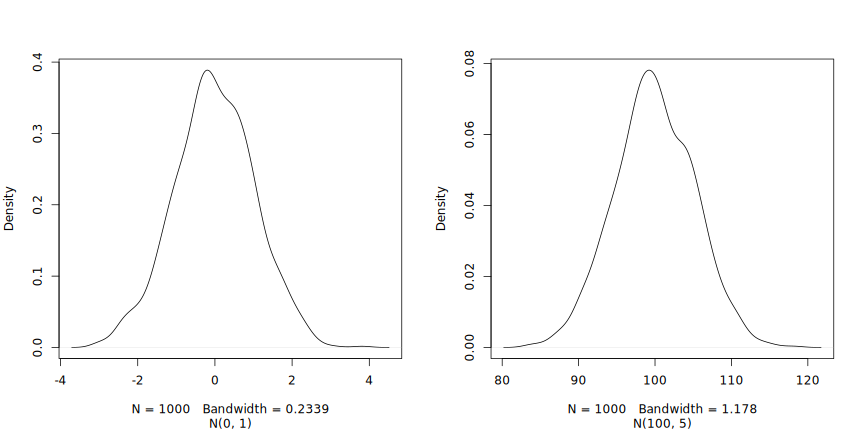
3 つの引数「n」、「mean」、「sd」は、サンプル のサイズと、正規分布のパラメーター、つまり平均 とその標準偏差を定義します。 後者のデフォルトは 0 と 1 です。
R
rnorm(5)
OUTPUT
[1] 0.69641761 0.05351568 -1.31028350 -2.12306606 -0.20807859R
rnorm(5, 2, 2)
OUTPUT
[1] 1.3744268 -0.1164714 2.8344472 1.3690969 3.6510983R
rnorm(5, 100, 5)
OUTPUT
[1] 106.45636 96.87448 95.62427 100.71678 107.12595スクリプトの書き方と のデータ構造の基本を学習したので、より大きなデータの操作を開始する準備が整い、データ フレームについて します。
- Rと対話する方法
Content from データから始める
Last updated on 2025-11-11 | Edit this page
Overview
Questions
- Rによる最初のデータ分析
Objectives
-
data.frameの概念について説明してください。 - .csv ファイルから外部データを読み込み、データフレームに格納する方法を示してください。
- データフレームの内容を要約する方法を説明してください。
- 因子（factor）の概念について説明してください。
- 文字列と因子間の変換方法を示してください。
- 因子の順序変更と名前変更の方法を説明してください。
- 日付のフォーマット方法を示してください。
- データのエクスポートと保存方法について説明してください。
このエピソードは、Data Carpentriesの_Data Analysis and Visualisation in R for Ecologists_レッスンに基づいています。
遺伝子発現データの説明
本研究では、Blackmoreら（2017）が公表したデータの一部を使用します。論文タイトルは『上気道感染症が中枢神経系のトランスクリプトーム変化に及ぼす影響』です。この研究の目的は、上気道感染症が感染後の小脳および脊髄におけるRNA転写変化に及ぼす影響を明らかにすることでした。性別を一致させた8週齢のC57BL/6マウスを用い、生理食塩水またはインフルエンザA型ウイルスを経鼻投与し、感染0日目、4日目、および8日目における小脳および脊髄組織のトランスクリプトーム変化をRNA-seq法で評価しました。
データセットはカンマ区切り値（CSV）ファイルとして保存されています。各行は単一のRNA発現測定値に関する情報を保持しており、最初の11列は以下の項目を表します：
| 列名 | 説明 |
|---|---|
| gene | 測定対象とした遺伝子名 |
| sample | 遺伝子発現測定を実施したサンプル名 |
| expression | 遺伝子発現値 |
| organism | 生物種/分類群 - 本データはすべてマウス由来です |
| age | マウスの年齢（すべてのマウスは8週齢） |
| sex | マウスの性別 |
| infection | マウスの感染状態 - インフルエンザA型に感染しているか否か |
| strain | インフルエンザA型の株 |
| time | 感染期間（日数） |
| tissue | 遺伝子発現実験に使用した組織 - 小脳または脊髄 |
| mouse | マウスの一意識別子 |
遺伝子発現データを含むCSVファイルのダウンロードにはR関数download.file()を使用し、取得したCSVファイルの内容をread.csv()でメモリ上にdata.frameクラスのオブジェクトとして読み込みます。download.file()コマンドの第1引数にはソースURLを指定する文字列を指定します。このURLはGitHubリポジトリからCSVファイルをダウンロードします。カンマの後に続くテキスト（"data/rnaseq.csv"）が、ローカルマシン上のファイル保存先パスとなります。事前に"data"という名前のフォルダを作成しておく必要があります。このコマンドはリモートファイルをダウンロードし、"rnaseq.csv"という名前を付けて既存の"data"フォルダに追加します。
R
download.file(url = "https://github.com/carpentries-incubator/bioc-intro/raw/main/episodes/data/rnaseq.csv",
destfile = "data/rnaseq.csv")
これでデータの読み込み準備が整いました。以下のようにデータを読み込めます：
R
rna <- read.csv("data/rnaseq.csv")
このコマンドは出力を表示しません。これは割り当て操作自体が出力を生成しないためです。データが正しく読み込まれたことを確認するには、データフレームの名前を直接入力してその内容を確認できます：
R
rna
うわっ…かなりの量の出力ですね。少なくともデータが正常に読み込まれたことを示しています。head()関数を使用してこのデータフレームの先頭6行を確認してみましょう：
R
head(rna)
OUTPUT
gene sample expression organism age sex infection strain time
1 Asl GSM2545336 1170 Mus musculus 8 Female InfluenzaA C57BL/6 8
2 Apod GSM2545336 36194 Mus musculus 8 Female InfluenzaA C57BL/6 8
3 Cyp2d22 GSM2545336 4060 Mus musculus 8 Female InfluenzaA C57BL/6 8
4 Klk6 GSM2545336 287 Mus musculus 8 Female InfluenzaA C57BL/6 8
5 Fcrls GSM2545336 85 Mus musculus 8 Female InfluenzaA C57BL/6 8
6 Slc2a4 GSM2545336 782 Mus musculus 8 Female InfluenzaA C57BL/6 8
tissue mouse ENTREZID
1 Cerebellum 14 109900
2 Cerebellum 14 11815
3 Cerebellum 14 56448
4 Cerebellum 14 19144
5 Cerebellum 14 80891
6 Cerebellum 14 20528
product
1 argininosuccinate lyase, transcript variant X1
2 apolipoprotein D, transcript variant 3
3 cytochrome P450, family 2, subfamily d, polypeptide 22, transcript variant 2
4 kallikrein related-peptidase 6, transcript variant 2
5 Fc receptor-like S, scavenger receptor, transcript variant X1
6 solute carrier family 2 (facilitated glucose transporter), member 4
ensembl_gene_id external_synonym chromosome_name gene_biotype
1 ENSMUSG00000025533 2510006M18Rik 5 protein_coding
2 ENSMUSG00000022548 <NA> 16 protein_coding
3 ENSMUSG00000061740 2D22 15 protein_coding
4 ENSMUSG00000050063 Bssp 7 protein_coding
5 ENSMUSG00000015852 2810439C17Rik 3 protein_coding
6 ENSMUSG00000018566 Glut-4 11 protein_coding
phenotype_description
1 abnormal circulating amino acid level
2 abnormal lipid homeostasis
3 abnormal skin morphology
4 abnormal cytokine level
5 decreased CD8-positive alpha-beta T cell number
6 abnormal circulating glucose level
hsapiens_homolog_associated_gene_name
1 ASL
2 APOD
3 CYP2D6
4 KLK6
5 FCRL2
6 SLC2A4R
## 以下の方法もお試しください
## View(rna)
注意
read.csv()関数はデフォルトでカンマをフィールド区切り文字として認識しますが、一部の国ではカンマが小数点区切りとして使用され、セミコロン（;）がフィールド区切り文字として用いられています。このような形式のファイルをRで読み込む場合は、read.csv2()関数を使用できます。この関数はread.csv()と完全に同様の動作をしますが、小数点区切り文字とフィールド区切り文字のパラメータが異なります。別の形式のファイルを扱う場合、これらの区切り文字はユーザーが指定可能です。詳細な情報については、?read.csvと入力してヘルプを参照してください。タブ区切りデータファイルを読み込む場合はread.delim()関数も利用可能です。これらの関数はすべて、異なる引数を持つ主要なread.table()関数のラッパー関数であることに注意が必要です。したがって、前述のデータはread.table()関数を使用し、区切り文字として,を指定することでも読み込むことができます。以下がそのコード例です：
R
rna <- read.table(file = "data/rnaseq.csv",
sep = ",",
header = TRUE)
header引数はデフォルトでread.table()がFALSEに設定されているため、ヘッダーを正しく読み込むためにはTRUEに設定する必要があります。
データフレームとは？
データフレームは、ほとんどの表形式データにおいて事実上の標準データ構造であり、統計処理やグラフ作成の際に用いられる基本的なデータ形式です。
データフレームは手動で作成することも可能ですが、実際にはread.csv()やread.table()といった関数を用いて作成されることが一般的です。つまり、ハードディスクやウェブ上のスプレッドシートデータをインポートする際に生成される形式です。
データフレームとは、列がすべて同じ長さのベクトルで構成される表形式のデータ表現です。列がベクトルであるため、各列には単一のデータ型（例：文字列、整数、因子など）のみが含まれます。例えば、以下の図は数値型、文字列型、論理型のベクトルで構成されるデータフレームの概念図です。

データフレームの構造をstr()関数で確認すると、この概念が明確に理解できます：
R
str(rna)
OUTPUT
'data.frame': 32428 obs. of 19 variables:
$ gene : chr "Asl" "Apod" "Cyp2d22" "Klk6" ...
$ sample : chr "GSM2545336" "GSM2545336" "GSM2545336" "GSM2545336" ...
$ expression : int 1170 36194 4060 287 85 782 1619 288 43217 1071 ...
$ organism : chr "Mus musculus" "Mus musculus" "Mus musculus" "Mus musculus" ...
$ age : int 8 8 8 8 8 8 8 8 8 8 ...
$ sex : chr "Female" "Female" "Female" "Female" ...
$ infection : chr "InfluenzaA" "InfluenzaA" "InfluenzaA" "InfluenzaA" ...
$ strain : chr "C57BL/6" "C57BL/6" "C57BL/6" "C57BL/6" ...
$ time : int 8 8 8 8 8 8 8 8 8 8 ...
$ tissue : chr "Cerebellum" "Cerebellum" "Cerebellum" "Cerebellum" ...
$ mouse : int 14 14 14 14 14 14 14 14 14 14 ...
$ ENTREZID : int 109900 11815 56448 19144 80891 20528 97827 118454 18823 14696 ...
$ product : chr "argininosuccinate lyase, transcript variant X1" "apolipoprotein D, transcript variant 3" "cytochrome P450, family 2, subfamily d, polypeptide 22, transcript variant 2" "kallikrein related-peptidase 6, transcript variant 2" ...
$ ensembl_gene_id : chr "ENSMUSG00000025533" "ENSMUSG00000022548" "ENSMUSG00000061740" "ENSMUSG00000050063" ...
$ external_synonym : chr "2510006M18Rik" NA "2D22" "Bssp" ...
$ chromosome_name : chr "5" "16" "15" "7" ...
$ gene_biotype : chr "protein_coding" "protein_coding" "protein_coding" "protein_coding" ...
$ phenotype_description : chr "abnormal circulating amino acid level" "abnormal lipid homeostasis" "abnormal skin morphology" "abnormal cytokine level" ...
$ hsapiens_homolog_associated_gene_name: chr "ASL" "APOD" "CYP2D6" "KLK6" ...データフレームオブジェクトの検査
すでにhead()関数とstr()関数がデータフレームの内容と構造を確認するのに有用であることを説明しました。以下に、データの内容/構造を把握するための代表的な関数を非網羅的に紹介します。実際に試してみましょう！
サイズ情報:
-
dim(rna)- 行数を第1要素、列数を第2要素とするベクトルを返します（オブジェクトの次元情報）。 -
nrow(rna)- 行数を返します。 -
ncol(rna)- 列数を返します。
内容情報:
-
head(rna)- 最初の6行を表示します。 -
tail(rna)- 最後の6行を表示します。
名前情報:
-
names(rna)- 列名を返します（data.frameオブジェクトの場合、colnames()関数と同じ機能です）。 -
rownames(rna)- 行名を返します。
要約情報:
-
str(rna)- オブジェクトの構造と、各列のクラス、長さ、内容に関する情報を提供します。 -
summary(rna)- 各列に対する要約統計量を表示します。
注記:
これらの関数の多くは「汎用関数」であり、data.frame以外の他のデータ型に対しても使用できます。
課題：
str(rna)
の出力結果に基づいて、以下の質問に答えてください：
- オブジェクト
rnaのクラスは何ですか？ - このオブジェクトには行がいくつ、列がいくつありますか？
- class: データフレーム
- 行数: 32428、列数: 19
データフレームの索引付けと部分抽出
rna
データフレームは行と列を持つ2次元構造です。特定のデータを抽出する場合、取得したい「座標」を明示的に指定する必要があります。まず行番号を指定し、その後に列番号を指定します。ただし、これらの座標を指定する方法によって結果のクラスが異なる点に注意してください。
R
# データフレームの最初の行・最初の列の要素（ベクトルとして）
rna[1, 1]
# データフレームの6番目の列の最初の要素（ベクトルとして）
rna[1, 6]
# データフレームの最初の列全体（ベクトルとして）
rna[, 1]
# データフレームの最初の列全体（データフレームとして）
rna[1]
# データフレームの7番目の列の最初の3要素（ベクトルとして）
rna[1:3, 7]
# データフレームの3行目全体（データフレームとして）
rna[3, ]
# head_rna <- head(rna) と同等
head_rna <- rna[1:6, ]
head_rna
:
は特殊な関数で、整数の数値ベクトルを昇順または降順で生成します。例えば
1:10 や 10:1 のように使用します。詳細はセクション@ref(sec:genvec)を参照してください。
また、“-”
記号を使用してデータフレームの特定のインデックスを除外することも可能です：
R
rna[, -1] ## 最初の列を除いたデータフレーム全体
rna[-c(7:66465), ] ## head(rna) と同等
データフレームの部分抽出は、前述のようにインデックスを指定する方法のほか、列名を直接指定する方法でも行えます：
R
rna["gene"] # 結果はデータフレーム
rna[, "gene"] # 結果はベクトル
rna[["gene"]] # 結果はベクトル
rna$gene # 結果はベクトル
RStudioでは、自動補完機能を利用することで、列の完全かつ正確な名前を簡単に取得できます。
課題
rnaデータセットの200行目のみを含むdata.frameオブジェクトrna_200を作成してください。nrow()関数がdata.frameの行数を返す仕組みに注目してください。
この行数を利用して、初期の
rnaデータフレームから最後の行だけを抽出してください。tail()関数で表示される最後の行と比較し、期待通りの結果が得られていることを確認してください。行番号ではなく、
nrow()関数を使って最後の行を抽出してください。この最後の行から新しいデータフレーム
rna_lastを作成してください。
nrow()関数を使用して、rnaデータフレームの中央に位置する行を抽出してください。この行の内容をrna_middleという名前のオブジェクトに格納してください。nrow()関数と前述の-表記を組み合わせて、head(rna)関数と同様の動作を実現し、rnaデータセットの最初の6行のみを保持してください。
R
## 1.
rna_200 <- rna[200, ]
## 2.
## 可読性向上と重複削減のため `n_rows` を保存
n_rows <- nrow(rna)
rna_last <- rna[n_rows, ]
## 3.
rna_middle <- rna[n_rows / 2, ]
## 4.
rna_head <- rna[-(7:n_rows), ]
Factors
因子はカテゴリカルデータを表します。これらはラベルと関連付けられた整数として格納され、順序付きまたは順序なしのいずれかとして扱うことができます。 因子は見た目（そして多くの場合動作も）文字ベクトルのように見えますが、Rでは実際には整数ベクトルとして扱われます。したがって、文字列として扱う際には細心の注意が必要です。
一度作成された因子は、事前に定義された値のセット（レベルと呼ばれる）のみを含むことができます。デフォルトでは、Rは常にレベルをアルファベット順に並べ替えます。例えば、2つのレベルを持つ因子がある場合：
R
sex <- factor(c("male", "female", "female", "male", "female"))
Rはレベル "female" に 1 を、レベル
"male" に 2
を割り当てます（このベクトルの最初の要素が "male"
であっても、f は m
よりもアルファベット順で先に来るため）。levels()
関数を使用するとこの割り当てを確認でき、nlevels()
でレベルの総数を取得できます：
R
levels(sex)
OUTPUT
[1] "female" "male" R
nlevels(sex)
OUTPUT
[1] 2因子の順序が重要でない場合もありますが、意味的な意味を持つ場合（例：「低」「中」「高」）、可視化が向上する場合、あるいは特定の分析手法で必要とされる場合には、順序を指定したいことがあります。ここでは、sex
ベクトルのレベル順序を並べ替える方法の一例を示します：
R
sex ## 現在の順序
OUTPUT
[1] male female female male female
Levels: female maleR
sex <- factor(sex, levels = c("male", "female"))
sex ## 順序変更後
OUTPUT
[1] male female female male female
Levels: male femaleRのメモリ内では、これらの因子は整数（1, 2,
3）として表現されますが、因子は自己記述的であるため整数よりも情報量が豊富です："female"
や "male" というラベルは、1 や 2
という数値よりもはるかに説明的です。どちらが「男性」を表すのか、整数値だけでは判断できません。一方、因子にはこの情報が組み込まれています。特にレベル数が多い場合（例：本例の遺伝子バイオタイプ）にこの機能は非常に有用です。
データが因子として格納されている場合、plot()
関数を使用することで、各因子レベルが表す観測値の数を素早く把握できます。ここでは、データ内の男性と女性の数を確認してみましょう。
R
plot(sex)
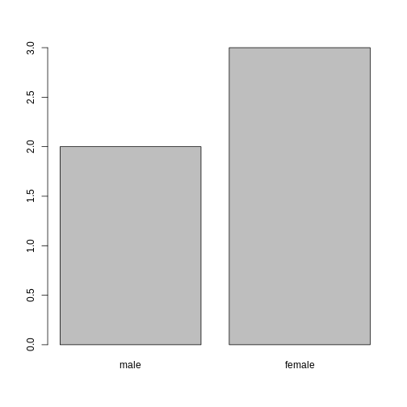
因子を文字ベクトルに変換する場合
因子を文字ベクトルに変換する必要がある場合は、as.character()関数を使用します。
R
as.character(sex)
OUTPUT
[1] "male" "female" "female" "male" "female"因子名の変更
これらの因子名を変更する場合、必要なのは因子の 水準を変更することだけです：
R
levels(sex)
OUTPUT
[1] "male" "female"R
levels(sex) <- c("M", "F")
sex
OUTPUT
[1] M F F M F
Levels: M FR
plot(sex)
課題:
- 変数「F」と「M」をそれぞれ「Female」（女性）と「Male」（男性）に名称変更してください。
R
levels(sex)
OUTPUT
[1] "M" "F"R
levels(sex) <- c("Male", "Female")
課題：
read.csv()
関数を使用した場合のデータフレームの作成方法は理解できたと思いますが、
data.frame()
関数を使えば手動でデータフレームを作成することも可能です。
以下の手動で作成された data.frame
にはいくつかの誤りが含まれています。これらの誤りを見つけて修正できますか？
遠慮せずに試行錯誤してみてください！
- 動物の名称の前後に引用符が欠落している箇所がある
- 「感触」欄の1つのエントリーが欠落している（おそらく毛皮を持つ動物の1つに関するもの）
- 重量欄のカンマが1つ欠落している箇所がある
課題：
以下の例において、各列のデータ型を予測できますか？
str(country_climate)
コマンドを使用して予測結果を確認してください。
予測結果は予想通りでしたか？その理由は？予想と違った場合、その理由は？
データフレーム作成時に最後の変数の後に
stringsAsFactors = TRUEを追加してみてください。現在どのような現象が起こっていますか？stringsAsFactorsは、read.csv()関数を使用してテキストベースのスプレッドシートをRに読み込む際にも設定可能です。
R
country_climate <- data.frame(
country = c("カナダ", "パナマ", "南アフリカ", "オーストラリア"),
climate = c("寒冷", "温暖", "温帯", "温暖/温帯"),
temperature = c(10, 30, 18, "15"),
northern_hemisphere = c(TRUE, TRUE, FALSE, "FALSE"),
has_kangaroo = c(FALSE, FALSE, FALSE, 1)
)
R
country_climate <- data.frame(
country = c("カナダ", "パナマ", "南アフリカ", "オーストラリア"),
climate = c("寒冷", "温暖", "温帯", "温暖/温帯"),
temperature = c(10, 30, 18, "15"),
northern_hemisphere = c(TRUE, TRUE, FALSE, "FALSE"),
has_kangaroo = c(FALSE, FALSE, FALSE, 1)
)
str(country_climate)
OUTPUT
'data.frame': 4 obs. of 5 variables:
$ country : chr "カナダ" "パナマ" "南アフリカ" "オーストラリア"
$ climate : chr "寒冷" "温暖" "温帯" "温暖/温帯"
$ temperature : chr "10" "30" "18" "15"
$ northern_hemisphere: chr "TRUE" "TRUE" "FALSE" "FALSE"
$ has_kangaroo : num 0 0 0 1データ型の自動変換は、時には便利な機能ですが、時には厄介な問題を引き起こすこともあります。この機能が存在することを認識し、その規則を理解し、Rにインポートするデータがデータフレーム内で正しい型であることを必ず確認してください。もしそうでない場合は、データ入力時に生じた可能性のある誤り（例えば数値のみが含まれるべき列に文字データが含まれている場合など）を検出するためにこの機能を活用しましょう。
詳細については、RStudioのチュートリアルをご覧ください。
行列
データフレームについて学んだところで、次はパッケージのインストール方法を復習し、新しいデータ型である「行列」について学びましょう。行列はデータフレームと同様に2次元構造を持ち、行と列で構成されます。しかし決定的な違いは、行列のすべてのセルは同じ型でなければならないという点です：数値型、文字型、論理型など。この点において、行列はデータフレームよりもベクトルに近い性質を持っています。
行列のデフォルトコンストラクタは「matrix」関数です。この関数は、行列を埋めるための値のベクトルと、行数および/または列数1を引数として取ります。値は以下のように列方向に並べられます。
R
m <- matrix(1:9, ncol = 3, nrow = 3)
m
OUTPUT
[,1] [,2] [,3]
[1,] 1 4 7
[2,] 2 5 8
[3,] 3 6 9課題:
installed.packages()
関数を使用して、現在コンピュータにインストールされているすべてのパッケージに関する情報を含む
character
型の行列を作成してください。作成した行列を調査・分析してください。
R
## 行列の作成
ip <- installed.packages()
head(ip)
## View(ip) での表示もお試しください
## インストール済みパッケージの総数
nrow(ip)
## すべてのインストール済みパッケージ名
rownames(ip)
## 各パッケージについて取得可能な情報の種類
colnames(ip)
テストデータとして、大規模なランダムデータ行列を作成することは有用であることが多い。以下の演習では、平均
0、標準偏差 1
の正規分布からランダムに生成されたデータを含むこのような行列を作成することが求められる。これは
rnorm() 関数を使用して実行可能である。
課題：
平均0、標準偏差1の正規分布に従うデータからなる、1000行3列の行列を作成してください
R
set.seed(123)
m <- matrix(rnorm(3000), ncol = 3)
dim(m)
OUTPUT
[1] 1000 3R
head(m)
OUTPUT
[,1] [,2] [,3]
[1,] -0.56047565 -0.99579872 -0.5116037
[2,] -0.23017749 -1.03995504 0.2369379
[3,] 1.55870831 -0.01798024 -0.5415892
[4,] 0.07050839 -0.13217513 1.2192276
[5,] 0.12928774 -2.54934277 0.1741359
[6,] 1.71506499 1.04057346 -0.6152683日付のフォーマット処理
Rを使い始めたばかりのユーザー（そして経験豊富なユーザーも！）が直面する最も一般的な問題の一つが、日付と時刻情報を分析に適した変数形式に変換する作業です。
表計算ソフトにおける日付の取り扱いについて
表計算ソフトでは通常、日付情報は単一の列に格納されます。一見するとこれが自然な方法のように思えますが、実は最適な方法とは言えません。表計算ソフトは人間の目には正しく表示されたように見えますが、実際に日付をどのように処理・保存しているかについては問題が生じる可能性があります。日付を分析する際には、年・月・日を別々の列に格納するか、年と年の何日目かを別々の列に分ける方法の方がはるかに安全です。
LibreOffice、Microsoft Excel、OpenOffice、Gnumericなどの表計算ソフトでは、日付のエンコード方法が異なり（同じソフトでもバージョンやOSによって互換性がない場合もあります）、特にExcelでは日付でないデータを日付として処理してしまう問題が報告されています（@Zeeberg:2004）。例えば、MAR1、DEC1、OCT4といった名前や識別子も日付として扱われる可能性があります。そのため、日付形式そのものを避けることで、こうした問題を未然に防ぐことができます。
Data Carpentryの「日付データの扱い」セクションでは、表計算ソフトにおける日付処理の注意点について詳しく解説しています。
本解説では、tidyverseパッケージ群の一部であるlubridateパッケージのymd()関数を使用します（tidyverseの詳細については公式ウェブサイトをご覧ください）。lubridateはtidyverseのインストール時に自動的にインストールされます。tidyverseを読み込むと（library(tidyverse)）、ほとんどのデータ分析で使用されるコアパッケージが自動的にロードされますが、lubridateはコアパッケージではないため、library(lubridate)で明示的に読み込む必要があります。
まず必要なパッケージを読み込みましょう：
R
library("lubridate")
ymd()関数は年・月・日を表すベクトルを受け取り、Date型のベクトルに変換します。DateはRが日付データとして認識するデータクラスで、これを適切に操作できます。関数の引数は柔軟な仕様となっていますが、ベストプラクティスとして「YYYY-MM-DD」形式の文字列ベクトルを使用することが推奨されます。
日付オブジェクトを作成し、構造を確認してみましょう：
R
my_date <- ymd("2015-01-01")
str(my_date)
OUTPUT
Date[1:1], format: "2015-01-01"次に、年・月・日を個別に結合してみます。同じ結果が得られることが確認できます：
R
# sepは各要素を区切る文字を指定します
my_date <- ymd(paste("2015", "1", "1", sep = "-"))
str(my_date)
OUTPUT
Date[1:1], format: "2015-01-01"ここでは一般的な日付操作の手順について説明します。以下のサンプルデータでは、日付が「year」「month」「day」の各列に別々に格納されています。
R
x <- data.frame(year = c(1996, 1992, 1987, 1986, 2000, 1990, 2002, 1994, 1997, 1985),
month = c(2, 3, 3, 10, 1, 8, 3, 4, 5, 5),
day = c(24, 8, 1, 5, 8, 17, 13, 10, 11, 24),
value = c(4, 5, 1, 9, 3, 8, 10, 2, 6, 7))
x
OUTPUT
year month day value
1 1996 2 24 4
2 1992 3 8 5
3 1987 3 1 1
4 1986 10 5 9
5 2000 1 8 3
6 1990 8 17 8
7 2002 3 13 10
8 1994 4 10 2
9 1997 5 11 6
10 1985 5 24 7この関数をxデータセットに適用します。まずpaste()関数を使ってxの「year」「month」「day」列から文字列ベクトルを作成します：
R
paste(x$year, x$month, x$day, sep = "-")
OUTPUT
[1] "1996-2-24" "1992-3-8" "1987-3-1" "1986-10-5" "2000-1-8" "1990-8-17"
[7] "2002-3-13" "1994-4-10" "1997-5-11" "1985-5-24"この文字列ベクトルをymd()関数の引数として使用できます：
R
ymd(paste(x$year, x$month, x$day, sep = "-"))
OUTPUT
[1] "1996-02-24" "1992-03-08" "1987-03-01" "1986-10-05" "2000-01-08"
[6] "1990-08-17" "2002-03-13" "1994-04-10" "1997-05-11" "1985-05-24"処理結果のDate型ベクトルは、xデータセットに新しい列「date」として追加できます：
R
x$date <- ymd(paste(x$year, x$month, x$day, sep = "-"))
str(x) # 新たに追加された列と、クラスが「date」となっていることを確認してください
OUTPUT
'data.frame': 10 obs. of 5 variables:
$ year : num 1996 1992 1987 1986 2000 ...
$ month: num 2 3 3 10 1 8 3 4 5 5
$ day : num 24 8 1 5 8 17 13 10 11 24
$ value: num 4 5 1 9 3 8 10 2 6 7
$ date : Date, format: "1996-02-24" "1992-03-08" ...正しく処理されているか確認しましょう。新しい列を確認する方法の一つとしてsummary()関数を使用する方法があります：
R
summary(x$date)
OUTPUT
Min. 1st Qu. Median Mean 3rd Qu. Max.
"1985-05-24" "1988-01-11" "1993-03-24" "1993-03-18" "1997-01-20" "2002-03-13" ymd()関数は年・月・日の順序で入力されることを前提としています。例えば日・月・年の順でデータがある場合にはdmy()関数を使用する必要があります。
R
dmy(paste(x$day, x$month, x$year, sep = "-"))
OUTPUT
[1] "1996-02-24" "1992-03-08" "1987-03-01" "1986-10-05" "2000-01-08"
[6] "1990-08-17" "2002-03-13" "1994-04-10" "1997-05-11" "1985-05-24"lubridateパッケージには、あらゆる種類の日付バリエーションに対応するための豊富な関数が用意されています。
Rオブジェクトの概要
これまでに、次元数や単一データ型・複数データ型の格納可否が異なる様々な種類のRオブジェクトを見てきました。主なものは以下の通りです：
-
ベクトル：1次元構造（長さを持つ）、単一データ型 -
行列：2次元構造、単一データ型 -
データフレーム：2次元構造、列ごとに異なるデータ型
リスト
これまで取り上げてこなかったものの、理解しておくと有用なデータ型として「リスト」があります。これは先ほどの概要から自然に導かれる概念です：
-
リスト：1次元構造で、各要素は異なるデータ型を取り得る
以下に、数値ベクトル、文字ベクトル、行列、データフレーム、および別のリストを含むリストを作成してみましょう：
R
l <- list(1:10, ## 数値データ
letters, ## 文字データ
installed.packages(), ## 行列データ
cars, ## データフレーム
list(1, 2, 3)) ## リスト
length(l)
OUTPUT
[1] 5R
str(l)
OUTPUT
List of 5
$ : int [1:10] 1 2 3 4 5 6 7 8 9 10
$ : chr [1:26] "a" "b" "c" "d" ...
$ : chr [1:162, 1:16] "abind" "askpass" "backports" "base64enc" ...
..- attr(*, "dimnames")=List of 2
.. ..$ : chr [1:162] "abind" "askpass" "backports" "base64enc" ...
.. ..$ : chr [1:16] "Package" "LibPath" "Version" "Priority" ...
$ :'data.frame': 50 obs. of 2 variables:
..$ speed: num [1:50] 4 4 7 7 8 9 10 10 10 11 ...
..$ dist : num [1:50] 2 10 4 22 16 10 18 26 34 17 ...
$ :List of 3
..$ : num 1
..$ : num 2
..$ : num 3リストの部分抽出には []
を使用して新しいサブリストを抽出するか、[[]]
を使用してリスト内の単一要素を抽出します（インデックス指定または名前指定が可能で、リストに名前が付けられている場合）。
R
l[[1]] ## 最初の要素を抽出
OUTPUT
[1] 1 2 3 4 5 6 7 8 9 10R
l[1:2] ## 長さ2のリストを抽出
OUTPUT
[[1]]
[1] 1 2 3 4 5 6 7 8 9 10
[[2]]
[1] "a" "b" "c" "d" "e" "f" "g" "h" "i" "j" "k" "l" "m" "n" "o" "p" "q" "r" "s"
[20] "t" "u" "v" "w" "x" "y" "z"R
l[1] ## 長さ1のリストを抽出
OUTPUT
[[1]]
[1] 1 2 3 4 5 6 7 8 9 10表形式データのエクスポートと保存
テキストベースのスプレッドシートをRに読み込む方法として、read.tableファミリーの関数を使用する方法を説明しました。data.frameをテキストベースのスプレッドシートとしてエクスポートする場合は、write.table関数群（write.csv、write.delimなど）を使用します。これらの関数はいずれも、エクスポート対象の変数と出力先ファイルを引数として受け取ります。例えば、rnaデータフレームをdata_outputディレクトリ内のmy_rna.csvファイルにエクスポートするには、以下のように実行します：
R
write.csv(rna, file = "data_output/my_rna.csv")
このようにして作成した新しいCSVファイルは、Rに詳しくない他の共同作業者と共有することが可能です。なお、data.frameの一部のフィールドにカンマが含まれている場合（例えば「product」列など）でも、Rはデフォルトで各フィールドを引用符で囲みます。そのため、列区切り文字としてもカンマを使用している場合でも、正しくRに再読み込みすることができます。
- Rでの表形式データ
行数か列数のいずれか一方を指定すれば十分で、もう一方は値の長さから自動的に計算されます。値の数と行数/列数が一致しない場合に何が起こるか、実際に試してみてください。↩︎
Content from dplyrによるデータの操作と分析
Last updated on 2025-11-11 | Edit this page
Overview
Questions
- tidyverseメタパッケージを使用したRによるデータ分析
Objectives
-
dplyrパッケージとtidyrパッケージの目的について説明してください。 - データを操作する際に特に有用な主要な関数をいくつか挙げてください。
- ワイド形式とロング形式のテーブル概念について説明し、データフレームを一方の形式から他方の形式に変換する方法を示してください。
- テーブルの結合方法を具体的にデモンストレーションしてください。
本エピソードは、Data Carpentriesの「生態学者向けRによるデータ分析と可視化」講座を基にしています。
dplyrとtidyrを用いたデータ操作
ブラケットサブセットは便利ですが、複雑な操作を行う場合、煩雑で可読性が低下することがあります。
データ操作を行う際、特定のパッケージを活用することで作業を大幅に効率化できます。Rにおけるパッケージとは、基本的に追加機能を提供する関数群であり、これまで使用してきたstr()やdata.frame()などの関数はRに標準で組み込まれています。一方、パッケージを導入することで、さらに専門的な機能を利用できるようになります。初めてパッケージを使用する前には必ずインストールが必要で、その後は必要に応じて各Rセッションでインポートする必要があります。
dplyrパッケージは強力なデータ操作ツールを提供します。データフレームを直接操作するために設計されており、多くの操作が最適化されています。後述するように、特定の分析や可視化を行うためにデータフレームの形状を変更したい場合があります。
tidyrパッケージはこの一般的な問題に対処するためのツールを提供し、データをきれいに整理した状態で操作できるようにします。
ワークショップ終了後、dplyrとtidyrについてさらに詳しく学びたい場合は、以下の資料が参考になります：
- dplyrを使ったデータ変換の便利なチートシート
- tidyrに関するチートシート
-
tidyverseパッケージは「包括的パッケージ」であり、tidyr、dplyr、ggplot2、tibbleなど、データ分析において相互に連携して動作する複数の有用なパッケージをまとめてインストールできます。これらのパッケージはデータの操作や分析を容易にし、サブセット処理、データ変換、可視化など、さまざまな操作を可能にします。
セットアップを完了していれば、すでにtidyverseパッケージがインストールされているはずです。以下のコマンドでライブラリから読み込んで確認できます：
R
## tidyverseパッケージ（dplyrを含む）を読み込む
library("tidyverse")
もしthere is no package called ‘tidyverse’というエラーメッセージが表示された場合、このRバージョンに対してまだパッケージがインストールされていません。tidyverseパッケージをインストールするには、以下のコマンドを実行してください：
R
BiocManager::install("tidyverse")
tidyverseパッケージをインストールした場合は、このRセッションでlibrary()コマンドを使用して必ず読み込んでください！
tidyverseを使ったデータ読み込み
read.csv()の代わりに、tidyverseパッケージreadrに含まれるread_csv()関数（.ではなく_を使用している点に注意）を使ってデータを読み込みます。
R
rna <- read_csv("data/rnaseq.csv")
## データの内容を確認
rna
OUTPUT
# A tibble: 32,428 × 19
gene sample expression organism age sex infection strain time tissue
<chr> <chr> <dbl> <chr> <dbl> <chr> <chr> <chr> <dbl> <chr>
1 Asl GSM254… 1170 Mus mus… 8 Fema… Influenz… C57BL… 8 Cereb…
2 Apod GSM254… 36194 Mus mus… 8 Fema… Influenz… C57BL… 8 Cereb…
3 Cyp2d22 GSM254… 4060 Mus mus… 8 Fema… Influenz… C57BL… 8 Cereb…
4 Klk6 GSM254… 287 Mus mus… 8 Fema… Influenz… C57BL… 8 Cereb…
5 Fcrls GSM254… 85 Mus mus… 8 Fema… Influenz… C57BL… 8 Cereb…
6 Slc2a4 GSM254… 782 Mus mus… 8 Fema… Influenz… C57BL… 8 Cereb…
7 Exd2 GSM254… 1619 Mus mus… 8 Fema… Influenz… C57BL… 8 Cereb…
8 Gjc2 GSM254… 288 Mus mus… 8 Fema… Influenz… C57BL… 8 Cereb…
9 Plp1 GSM254… 43217 Mus mus… 8 Fema… Influenz… C57BL… 8 Cereb…
10 Gnb4 GSM254… 1071 Mus mus… 8 Fema… Influenz… C57BL… 8 Cereb…
# ℹ 32,418 more rows
# ℹ 9 more variables: mouse <dbl>, ENTREZID <dbl>, product <chr>,
# ensembl_gene_id <chr>, external_synonym <chr>, chromosome_name <chr>,
# gene_biotype <chr>, phenotype_description <chr>,
# hsapiens_homolog_associated_gene_name <chr>データのクラスが”tibble”として表示されていることにご注意ください。
tibbleは、以前紹介したデータフレームオブジェクトの動作を一部調整したものです。データ構造はデータフレームと非常に似ていますが、主な違いは以下の通りです：
各列のデータ型が列名の下に表示されます。 注：<
dbl>は小数点を含む数値値を保持するように定義されたデータ型です。データの最初の数行のみが表示され、1画面に収まる列数のみが出力されます。
ここからは、dplyrでよく使われる代表的な関数をいくつか紹介します：
-
select()：列のサブセットを選択 -
filter()：条件に基づいて行をサブセット -
mutate()：他の列の情報を使って新しい列を作成 -
group_by()とsummarise()：グループ化されたデータの要約統計量を作成 -
arrange()：結果を並べ替え -
count()：離散値の出現回数をカウント
列の選択と行のフィルタリング
データフレームから特定の列を選択するには select()
関数を使用します。この関数の第1引数には対象のデータフレーム（ここでは
rna）を指定し、続く引数には保持したい列名を指定します。
R
select(rna, gene, sample, tissue, expression)
OUTPUT
# A tibble: 32,428 × 4
gene sample tissue expression
<chr> <chr> <chr> <dbl>
1 Asl GSM2545336 Cerebellum 1170
2 Apod GSM2545336 Cerebellum 36194
3 Cyp2d22 GSM2545336 Cerebellum 4060
4 Klk6 GSM2545336 Cerebellum 287
5 Fcrls GSM2545336 Cerebellum 85
6 Slc2a4 GSM2545336 Cerebellum 782
7 Exd2 GSM2545336 Cerebellum 1619
8 Gjc2 GSM2545336 Cerebellum 288
9 Plp1 GSM2545336 Cerebellum 43217
10 Gnb4 GSM2545336 Cerebellum 1071
# ℹ 32,418 more rows特定の列を除いたすべての列を選択する場合は、除外したい列名の前に「-」を付けます。
R
select(rna, -tissue, -organism)
OUTPUT
# A tibble: 32,428 × 17
gene sample expression age sex infection strain time mouse ENTREZID
<chr> <chr> <dbl> <dbl> <chr> <chr> <chr> <dbl> <dbl> <dbl>
1 Asl GSM2545… 1170 8 Fema… Influenz… C57BL… 8 14 109900
2 Apod GSM2545… 36194 8 Fema… Influenz… C57BL… 8 14 11815
3 Cyp2d22 GSM2545… 4060 8 Fema… Influenz… C57BL… 8 14 56448
4 Klk6 GSM2545… 287 8 Fema… Influenz… C57BL… 8 14 19144
5 Fcrls GSM2545… 85 8 Fema… Influenz… C57BL… 8 14 80891
6 Slc2a4 GSM2545… 782 8 Fema… Influenz… C57BL… 8 14 20528
7 Exd2 GSM2545… 1619 8 Fema… Influenz… C57BL… 8 14 97827
8 Gjc2 GSM2545… 288 8 Fema… Influenz… C57BL… 8 14 118454
9 Plp1 GSM2545… 43217 8 Fema… Influenz… C57BL… 8 14 18823
10 Gnb4 GSM2545… 1071 8 Fema… Influenz… C57BL… 8 14 14696
# ℹ 32,418 more rows
# ℹ 7 more variables: product <chr>, ensembl_gene_id <chr>,
# external_synonym <chr>, chromosome_name <chr>, gene_biotype <chr>,
# phenotype_description <chr>, hsapiens_homolog_associated_gene_name <chr>これにより、rna データフレームから tissue
列と organism 列を除いたすべての変数が選択されます。
特定の条件に基づいて行を選択する場合は filter()
関数を使用します：
R
filter(rna, sex == "Male")
OUTPUT
# A tibble: 14,740 × 19
gene sample expression organism age sex infection strain time tissue
<chr> <chr> <dbl> <chr> <dbl> <chr> <chr> <chr> <dbl> <chr>
1 Asl GSM254… 626 Mus mus… 8 Male Influenz… C57BL… 4 Cereb…
2 Apod GSM254… 13021 Mus mus… 8 Male Influenz… C57BL… 4 Cereb…
3 Cyp2d22 GSM254… 2171 Mus mus… 8 Male Influenz… C57BL… 4 Cereb…
4 Klk6 GSM254… 448 Mus mus… 8 Male Influenz… C57BL… 4 Cereb…
5 Fcrls GSM254… 180 Mus mus… 8 Male Influenz… C57BL… 4 Cereb…
6 Slc2a4 GSM254… 313 Mus mus… 8 Male Influenz… C57BL… 4 Cereb…
7 Exd2 GSM254… 2366 Mus mus… 8 Male Influenz… C57BL… 4 Cereb…
8 Gjc2 GSM254… 310 Mus mus… 8 Male Influenz… C57BL… 4 Cereb…
9 Plp1 GSM254… 53126 Mus mus… 8 Male Influenz… C57BL… 4 Cereb…
10 Gnb4 GSM254… 1355 Mus mus… 8 Male Influenz… C57BL… 4 Cereb…
# ℹ 14,730 more rows
# ℹ 9 more variables: mouse <dbl>, ENTREZID <dbl>, product <chr>,
# ensembl_gene_id <chr>, external_synonym <chr>, chromosome_name <chr>,
# gene_biotype <chr>, phenotype_description <chr>,
# hsapiens_homolog_associated_gene_name <chr>R
filter(rna, sex == "Male" & infection == "NonInfected")
OUTPUT
# A tibble: 4,422 × 19
gene sample expression organism age sex infection strain time tissue
<chr> <chr> <dbl> <chr> <dbl> <chr> <chr> <chr> <dbl> <chr>
1 Asl GSM254… 535 Mus mus… 8 Male NonInfec… C57BL… 0 Cereb…
2 Apod GSM254… 13668 Mus mus… 8 Male NonInfec… C57BL… 0 Cereb…
3 Cyp2d22 GSM254… 2008 Mus mus… 8 Male NonInfec… C57BL… 0 Cereb…
4 Klk6 GSM254… 1101 Mus mus… 8 Male NonInfec… C57BL… 0 Cereb…
5 Fcrls GSM254… 375 Mus mus… 8 Male NonInfec… C57BL… 0 Cereb…
6 Slc2a4 GSM254… 249 Mus mus… 8 Male NonInfec… C57BL… 0 Cereb…
7 Exd2 GSM254… 3126 Mus mus… 8 Male NonInfec… C57BL… 0 Cereb…
8 Gjc2 GSM254… 791 Mus mus… 8 Male NonInfec… C57BL… 0 Cereb…
9 Plp1 GSM254… 98658 Mus mus… 8 Male NonInfec… C57BL… 0 Cereb…
10 Gnb4 GSM254… 2437 Mus mus… 8 Male NonInfec… C57BL… 0 Cereb…
# ℹ 4,412 more rows
# ℹ 9 more variables: mouse <dbl>, ENTREZID <dbl>, product <chr>,
# ensembl_gene_id <chr>, external_synonym <chr>, chromosome_name <chr>,
# gene_biotype <chr>, phenotype_description <chr>,
# hsapiens_homolog_associated_gene_name <chr>次に、このデータセットで解析されたマウス遺伝子のヒト相同遺伝子について調べたいとします。この情報は
rna データフレームの最後の列
hsapiens_homolog_associated_gene_name
に格納されています。この情報を視覚化しやすくするため、gene
列と hsapiens_homolog_associated_gene_name
列のみを含む新しいテーブルを作成します。
R
genes <- select(rna, gene, hsapiens_homolog_associated_gene_name)
genes
OUTPUT
# A tibble: 32,428 × 2
gene hsapiens_homolog_associated_gene_name
<chr> <chr>
1 Asl ASL
2 Apod APOD
3 Cyp2d22 CYP2D6
4 Klk6 KLK6
5 Fcrls FCRL2
6 Slc2a4 SLC2A4
7 Exd2 EXD2
8 Gjc2 GJC2
9 Plp1 PLP1
10 Gnb4 GNB4
# ℹ 32,418 more rowsマウス遺伝子の中にはヒト相同遺伝子が存在しないものもあります。これらの遺伝子は
filter() 関数と is.na()
関数を使用して取得できます。is.na() 関数は値が
NA かどうかを判定します。
R
filter(genes, is.na(hsapiens_homolog_associated_gene_name))
OUTPUT
# A tibble: 4,290 × 2
gene hsapiens_homolog_associated_gene_name
<chr> <chr>
1 Prodh <NA>
2 Tssk5 <NA>
3 Vmn2r1 <NA>
4 Gm10654 <NA>
5 Hexa <NA>
6 Sult1a1 <NA>
7 Gm6277 <NA>
8 Tmem198b <NA>
9 Adam1a <NA>
10 Ebp <NA>
# ℹ 4,280 more rowsヒト相同遺伝子が存在するマウス遺伝子のみを保持したい場合は、結果を否定する
!
記号を使用します。これにより、hsapiens_homolog_associated_gene_name
が NA でないすべての行を選択できます。
R
filter(genes, !is.na(hsapiens_homolog_associated_gene_name))
OUTPUT
# A tibble: 28,138 × 2
gene hsapiens_homolog_associated_gene_name
<chr> <chr>
1 Asl ASL
2 Apod APOD
3 Cyp2d22 CYP2D6
4 Klk6 KLK6
5 Fcrls FCRL2
6 Slc2a4 SLC2A4
7 Exd2 EXD2
8 Gjc2 GJC2
9 Plp1 PLP1
10 Gnb4 GNB4
# ℹ 28,128 more rowsパイプ演算子
列選択とフィルタリングを同時に行いたい場合、以下の3つの方法があります：中間ステップを使用する方法、関数をネストする方法、またはパイプ演算子を使用する方法です。
中間ステップを使用する場合、一時的なデータフレームを作成してそれを次の関数の入力として渡します。例えば：
R
rna2 <- filter(rna, sex == "Male")
rna3 <- select(rna2, gene, sample, tissue, expression)
rna3
OUTPUT
# A tibble: 14,740 × 4
gene sample tissue expression
<chr> <chr> <chr> <dbl>
1 Asl GSM2545340 Cerebellum 626
2 Apod GSM2545340 Cerebellum 13021
3 Cyp2d22 GSM2545340 Cerebellum 2171
4 Klk6 GSM2545340 Cerebellum 448
5 Fcrls GSM2545340 Cerebellum 180
6 Slc2a4 GSM2545340 Cerebellum 313
7 Exd2 GSM2545340 Cerebellum 2366
8 Gjc2 GSM2545340 Cerebellum 310
9 Plp1 GSM2545340 Cerebellum 53126
10 Gnb4 GSM2545340 Cerebellum 1355
# ℹ 14,730 more rowsこの方法は可読性は高いですが、中間オブジェクトが多数生成されるため、ワークスペースが乱雑になりがちです。特に複数のステップがある場合、管理が難しくなることがあります。
関数をネストする方法もあります：
R
rna3 <- select(filter(rna, sex == "Male"), gene, sample, tissue, expression)
rna3
OUTPUT
# A tibble: 14,740 × 4
gene sample tissue expression
<chr> <chr> <chr> <dbl>
1 Asl GSM2545340 Cerebellum 626
2 Apod GSM2545340 Cerebellum 13021
3 Cyp2d22 GSM2545340 Cerebellum 2171
4 Klk6 GSM2545340 Cerebellum 448
5 Fcrls GSM2545340 Cerebellum 180
6 Slc2a4 GSM2545340 Cerebellum 313
7 Exd2 GSM2545340 Cerebellum 2366
8 Gjc2 GSM2545340 Cerebellum 310
9 Plp1 GSM2545340 Cerebellum 53126
10 Gnb4 GSM2545340 Cerebellum 1355
# ℹ 14,730 more rowsこの方法は便利ですが、関数がネストしすぎると読みにくくなる可能性があります。Rは式を内側から評価するため（この場合、まずフィルタリングを行い、その後選択を行います）、複雑な処理になると理解が難しくなる場合があります。
最後の選択肢である「パイプ演算子」はRに最近追加された機能です。パイプ演算子を使用すると、ある関数の出力を直接次の関数の入力として渡すことができ、同じデータセットに対して複数の処理を行う場合に特に便利です。
Rでパイプ演算子を使用するには %>%
記号を使用します（magrittr
パッケージで利用可能）。また |>
記号も使用できます（基本Rで利用可能）。RStudioを使用している場合、PCではCtrl
+ Shift + M、MacではCmd +
Shift + M でパイプ演算子を入力できます。
上記のコードでは、パイプ演算子を使用して rna
データセットを最初に filter() 関数で sex が
“Male” の行のみを保持するようにフィルタリングし、次に
select() 関数で gene, sample,
tissue, expression
列のみを保持するように選択しています。
|>
パイプ演算子は左側のオブジェクトを右側の関数の第1引数として直接渡すため、filter()
や select()
関数にデータフレームを明示的に引数として指定する必要がなくなります。
R
rna |>
filter(sex == "Male") |>
select(gene, sample, tissue, expression)
OUTPUT
# A tibble: 14,740 × 4
gene sample tissue expression
<chr> <chr> <chr> <dbl>
1 Asl GSM2545340 Cerebellum 626
2 Apod GSM2545340 Cerebellum 13021
3 Cyp2d22 GSM2545340 Cerebellum 2171
4 Klk6 GSM2545340 Cerebellum 448
5 Fcrls GSM2545340 Cerebellum 180
6 Slc2a4 GSM2545340 Cerebellum 313
7 Exd2 GSM2545340 Cerebellum 2366
8 Gjc2 GSM2545340 Cerebellum 310
9 Plp1 GSM2545340 Cerebellum 53126
10 Gnb4 GSM2545340 Cerebellum 1355
# ℹ 14,730 more rowsパイプ演算子を「その後」という意味で読むと理解しやすいかもしれません。例えば上記の例では、rna
データフレームを最初に取得し、その後 sex == "Male"
の行をフィルタリングし、その後 gene,
sample, tissue, expression
列を選択しています。
dplyr
関数自体はシンプルな機能ですが、パイプ演算子を使ってこれらの関数を線形的なワークフローに組み合わせることで、より複雑なデータフレーム操作が可能になります。
この小さなサイズのデータセットから新しいオブジェクトを作成したい場合は、以下のように新しい名前を割り当てられます：
R
rna3 <- rna |>
filter(sex == "Male") |>
select(gene, sample, tissue, expression)
rna3
OUTPUT
# A tibble: 14,740 × 4
gene sample tissue expression
<chr> <chr> <chr> <dbl>
1 Asl GSM2545340 Cerebellum 626
2 Apod GSM2545340 Cerebellum 13021
3 Cyp2d22 GSM2545340 Cerebellum 2171
4 Klk6 GSM2545340 Cerebellum 448
5 Fcrls GSM2545340 Cerebellum 180
6 Slc2a4 GSM2545340 Cerebellum 313
7 Exd2 GSM2545340 Cerebellum 2366
8 Gjc2 GSM2545340 Cerebellum 310
9 Plp1 GSM2545340 Cerebellum 53126
10 Gnb4 GSM2545340 Cerebellum 1355
# ℹ 14,730 more rows課題:
パイプ演算子を使用して、rnaデータセットをサブセットし、時間0時点で雌マウスの観測値のみを保持してください。
この際、遺伝子の発現量が50,000を超えているものに限定し、列はgene、sample、time、expression、ageの5列のみを抽出してください。
解答
R
rna |>
filter(expression > 50000,
sex == "Female",
time == 0 ) |>
select(gene, sample, time, expression, age)
OUTPUT
# A tibble: 9 × 5
gene sample time expression age
<chr> <chr> <dbl> <dbl> <dbl>
1 Plp1 GSM2545337 0 101241 8
2 Atp1b1 GSM2545337 0 53260 8
3 Plp1 GSM2545338 0 96534 8
4 Atp1b1 GSM2545338 0 50614 8
5 Plp1 GSM2545348 0 102790 8
6 Atp1b1 GSM2545348 0 59544 8
7 Plp1 GSM2545353 0 71237 8
8 Glul GSM2545353 0 52451 8
9 Atp1b1 GSM2545353 0 61451 8mutate関数の使用
既存の列の値に基づいて新しい列を作成したい場面は頻繁に発生します。例えば、単位変換を行ったり、2つの列間の値の比率を計算したりする場合などです。このような場合には、mutate()関数を使用します。
時間の値を時間単位の新しい列として作成する例を示します：
R
rna |>
mutate(time_hours = time * 24) |>
select(time, time_hours)
OUTPUT
# A tibble: 32,428 × 2
time time_hours
<dbl> <dbl>
1 8 192
2 8 192
3 8 192
4 8 192
5 8 192
6 8 192
7 8 192
8 8 192
9 8 192
10 8 192
# ℹ 32,418 more rowsまた、mutate()関数の同じ呼び出し内で、先に作成した新しい列を基にさらに別の新しい列を作成することも可能です：
R
rna |>
mutate(time_hours = time * 24,
time_mn = time_hours * 60) |>
select(time, time_hours, time_mn)
OUTPUT
# A tibble: 32,428 × 3
time time_hours time_mn
<dbl> <dbl> <dbl>
1 8 192 11520
2 8 192 11520
3 8 192 11520
4 8 192 11520
5 8 192 11520
6 8 192 11520
7 8 192 11520
8 8 192 11520
9 8 192 11520
10 8 192 11520
# ℹ 32,418 more rows課題
rna
データセットから、以下の条件を満たす新しいデータフレームを作成してください：
gene、chromosome_name、phenotype_description、sample、および
expression
の各列のみを含むこと。発現値については対数変換を施すこと。このデータフレームには、性染色体上に位置し、特定の表現型_descriptionに関連付けられ、かつ対数変換後の発現値が5を超える遺伝子のみを含める必要があります。
ヒント：このデータフレームを生成するために、コマンドをどのように順序付ければよいか考えてみてください！
R
rna |>
mutate(expression = log(expression)) |>
select(gene, chromosome_name, phenotype_description, sample, expression) |>
filter(chromosome_name == "X" | chromosome_name == "Y") |>
filter(!is.na(phenotype_description)) |>
filter(expression > 5)
OUTPUT
# A tibble: 649 × 5
gene chromosome_name phenotype_description sample expression
<chr> <chr> <chr> <chr> <dbl>
1 Plp1 X abnormal CNS glial cell morphology GSM25… 10.7
2 Slc7a3 X decreased body length GSM25… 5.46
3 Plxnb3 X abnormal coat appearance GSM25… 6.58
4 Rbm3 X abnormal liver morphology GSM25… 9.32
5 Cfp X abnormal cardiovascular system phys… GSM25… 6.18
6 Ebp X abnormal embryonic erythrocyte morp… GSM25… 6.68
7 Cd99l2 X abnormal cellular extravasation GSM25… 8.04
8 Piga X abnormal brain development GSM25… 6.06
9 Pim2 X decreased T cell proliferation GSM25… 7.11
10 Itm2a X no abnormal phenotype detected GSM25… 7.48
# ℹ 639 more rowsSplit-apply-combine data analysis
Many data analysis tasks can be approached using the
split-apply-combine paradigm: split the data into groups, apply
some analysis to each group, and then combine the results.
dplyr makes this very easy through the use
of the group_by() function.
R
rna |>
group_by(gene)
OUTPUT
# A tibble: 32,428 × 19
# Groups: gene [1,474]
gene sample expression organism age sex infection strain time tissue
<chr> <chr> <dbl> <chr> <dbl> <chr> <chr> <chr> <dbl> <chr>
1 Asl GSM254… 1170 Mus mus… 8 Fema… Influenz… C57BL… 8 Cereb…
2 Apod GSM254… 36194 Mus mus… 8 Fema… Influenz… C57BL… 8 Cereb…
3 Cyp2d22 GSM254… 4060 Mus mus… 8 Fema… Influenz… C57BL… 8 Cereb…
4 Klk6 GSM254… 287 Mus mus… 8 Fema… Influenz… C57BL… 8 Cereb…
5 Fcrls GSM254… 85 Mus mus… 8 Fema… Influenz… C57BL… 8 Cereb…
6 Slc2a4 GSM254… 782 Mus mus… 8 Fema… Influenz… C57BL… 8 Cereb…
7 Exd2 GSM254… 1619 Mus mus… 8 Fema… Influenz… C57BL… 8 Cereb…
8 Gjc2 GSM254… 288 Mus mus… 8 Fema… Influenz… C57BL… 8 Cereb…
9 Plp1 GSM254… 43217 Mus mus… 8 Fema… Influenz… C57BL… 8 Cereb…
10 Gnb4 GSM254… 1071 Mus mus… 8 Fema… Influenz… C57BL… 8 Cereb…
# ℹ 32,418 more rows
# ℹ 9 more variables: mouse <dbl>, ENTREZID <dbl>, product <chr>,
# ensembl_gene_id <chr>, external_synonym <chr>, chromosome_name <chr>,
# gene_biotype <chr>, phenotype_description <chr>,
# hsapiens_homolog_associated_gene_name <chr>The group_by() function doesn’t perform any data
processing, it groups the data into subsets: in the example above, our
initial tibble of 32428 observations is split into 1474
groups based on the gene variable.
We could similarly decide to group the tibble by the samples:
R
rna |>
group_by(sample)
OUTPUT
# A tibble: 32,428 × 19
# Groups: sample [22]
gene sample expression organism age sex infection strain time tissue
<chr> <chr> <dbl> <chr> <dbl> <chr> <chr> <chr> <dbl> <chr>
1 Asl GSM254… 1170 Mus mus… 8 Fema… Influenz… C57BL… 8 Cereb…
2 Apod GSM254… 36194 Mus mus… 8 Fema… Influenz… C57BL… 8 Cereb…
3 Cyp2d22 GSM254… 4060 Mus mus… 8 Fema… Influenz… C57BL… 8 Cereb…
4 Klk6 GSM254… 287 Mus mus… 8 Fema… Influenz… C57BL… 8 Cereb…
5 Fcrls GSM254… 85 Mus mus… 8 Fema… Influenz… C57BL… 8 Cereb…
6 Slc2a4 GSM254… 782 Mus mus… 8 Fema… Influenz… C57BL… 8 Cereb…
7 Exd2 GSM254… 1619 Mus mus… 8 Fema… Influenz… C57BL… 8 Cereb…
8 Gjc2 GSM254… 288 Mus mus… 8 Fema… Influenz… C57BL… 8 Cereb…
9 Plp1 GSM254… 43217 Mus mus… 8 Fema… Influenz… C57BL… 8 Cereb…
10 Gnb4 GSM254… 1071 Mus mus… 8 Fema… Influenz… C57BL… 8 Cereb…
# ℹ 32,418 more rows
# ℹ 9 more variables: mouse <dbl>, ENTREZID <dbl>, product <chr>,
# ensembl_gene_id <chr>, external_synonym <chr>, chromosome_name <chr>,
# gene_biotype <chr>, phenotype_description <chr>,
# hsapiens_homolog_associated_gene_name <chr>Here our initial tibble of 32428 observations is split
into 22 groups based on the sample variable.
Once the data has been grouped, subsequent operations will be applied on each group independently.
The summarise() function
group_by() is often used together with
summarise(), which collapses each group into a single-row
summary of that group.
group_by() takes as arguments the column names that
contain the categorical variables for which you want to
calculate the summary statistics. So to compute the mean
expression by gene:
R
rna |>
group_by(gene) |>
summarise(mean_expression = mean(expression))
OUTPUT
# A tibble: 1,474 × 2
gene mean_expression
<chr> <dbl>
1 AI504432 1053.
2 AW046200 131.
3 AW551984 295.
4 Aamp 4751.
5 Abca12 4.55
6 Abcc8 2498.
7 Abhd14a 525.
8 Abi2 4909.
9 Abi3bp 1002.
10 Abl2 2124.
# ℹ 1,464 more rowsWe could also want to calculate the mean expression levels of all genes in each sample:
R
rna |>
group_by(sample) |>
summarise(mean_expression = mean(expression))
OUTPUT
# A tibble: 22 × 2
sample mean_expression
<chr> <dbl>
1 GSM2545336 2062.
2 GSM2545337 1766.
3 GSM2545338 1668.
4 GSM2545339 1696.
5 GSM2545340 1682.
6 GSM2545341 1638.
7 GSM2545342 1594.
8 GSM2545343 2107.
9 GSM2545344 1712.
10 GSM2545345 1700.
# ℹ 12 more rowsBut we can can also group by multiple columns:
R
rna |>
group_by(gene, infection, time) |>
summarise(mean_expression = mean(expression))
OUTPUT
`summarise()` has grouped output by 'gene', 'infection'. You can override using
the `.groups` argument.OUTPUT
# A tibble: 4,422 × 4
# Groups: gene, infection [2,948]
gene infection time mean_expression
<chr> <chr> <dbl> <dbl>
1 AI504432 InfluenzaA 4 1104.
2 AI504432 InfluenzaA 8 1014
3 AI504432 NonInfected 0 1034.
4 AW046200 InfluenzaA 4 152.
5 AW046200 InfluenzaA 8 81
6 AW046200 NonInfected 0 155.
7 AW551984 InfluenzaA 4 302.
8 AW551984 InfluenzaA 8 342.
9 AW551984 NonInfected 0 238
10 Aamp InfluenzaA 4 4870
# ℹ 4,412 more rowsOnce the data is grouped, you can also summarise multiple variables
at the same time (and not necessarily on the same variable). For
instance, we could add a column indicating the median
expression by gene and by condition:
R
rna |>
group_by(gene, infection, time) |>
summarise(mean_expression = mean(expression),
median_expression = median(expression))
OUTPUT
`summarise()` has grouped output by 'gene', 'infection'. You can override using
the `.groups` argument.OUTPUT
# A tibble: 4,422 × 5
# Groups: gene, infection [2,948]
gene infection time mean_expression median_expression
<chr> <chr> <dbl> <dbl> <dbl>
1 AI504432 InfluenzaA 4 1104. 1094.
2 AI504432 InfluenzaA 8 1014 985
3 AI504432 NonInfected 0 1034. 1016
4 AW046200 InfluenzaA 4 152. 144.
5 AW046200 InfluenzaA 8 81 82
6 AW046200 NonInfected 0 155. 163
7 AW551984 InfluenzaA 4 302. 245
8 AW551984 InfluenzaA 8 342. 287
9 AW551984 NonInfected 0 238 265
10 Aamp InfluenzaA 4 4870 4708
# ℹ 4,412 more rowsチャレンジ
時間ポイントごとに遺伝子「Dok3」の平均発現レベルを計算します。
R
rna |>
filter(gene == "Dok3") |>
group_by(time) |>
summarise(mean = mean(expression))
OUTPUT
# A tibble: 3 × 2
time mean
<dbl> <dbl>
1 0 169
2 4 156.
3 8 61 カウント処理
データを扱う際、各因子または因子の組み合わせごとに観測値の数を知りたい場面がよくあります。この目的のために、dplyr
パッケージでは count()
関数が用意されています。例えば、感染サンプルと非感染サンプルそれぞれについてデータ行数をカウントしたい場合、以下のように記述します：
R
rna |>
count(infection)
OUTPUT
# A tibble: 2 × 2
infection n
<chr> <int>
1 InfluenzaA 22110
2 NonInfected 10318count()
関数は、既に学んだ「変数でデータをグループ化し、そのグループ内の観測値数を集計する」という処理の短縮形です。言い換えれば、rna |> count(infection)
は以下のように等価です：
R
rna |>
group_by(infection) |>
summarise(n = n())
OUTPUT
# A tibble: 2 × 2
infection n
<chr> <int>
1 InfluenzaA 22110
2 NonInfected 10318上記の例では、count() 関数を使って単一の因子（ここでは
infection）の行数をカウントしています。 もし
infection と time
といった複数の因子の組み合わせについてカウントを行いたい場合は、count()
関数の引数として最初の因子と2番目の因子を指定します：
R
rna |>
count(infection, time)
OUTPUT
# A tibble: 3 × 3
infection time n
<chr> <dbl> <int>
1 InfluenzaA 4 11792
2 InfluenzaA 8 10318
3 NonInfected 0 10318これは以下のコードと等価です：
R
rna |>
group_by(infection, time) |>
summarise(n = n())
OUTPUT
`summarise()` has grouped output by 'infection'. You can override using the
`.groups` argument.OUTPUT
# A tibble: 3 × 3
# Groups: infection [2]
infection time n
<chr> <dbl> <int>
1 InfluenzaA 4 11792
2 InfluenzaA 8 10318
3 NonInfected 0 10318結果を並べ替えて比較を容易にすることが役立つ場合があります。
arrange() 関数を使えばテーブルを並べ替えることが可能です。
例えば、先ほどのテーブルを time
で昇順に並べ替えたい場合は以下のようにします：
R
rna |>
count(infection, time) |>
arrange(time)
OUTPUT
# A tibble: 3 × 3
infection time n
<chr> <dbl> <int>
1 NonInfected 0 10318
2 InfluenzaA 4 11792
3 InfluenzaA 8 10318あるいは、カウント値で並べ替える場合は：
R
rna |>
count(infection, time) |>
arrange(n)
OUTPUT
# A tibble: 3 × 3
infection time n
<chr> <dbl> <int>
1 InfluenzaA 8 10318
2 NonInfected 0 10318
3 InfluenzaA 4 11792降順で並べ替える場合は、desc()
関数を追加する必要があります：
R
rna |>
count(infection, time) |>
arrange(desc(n))
OUTPUT
# A tibble: 3 × 3
infection time n
<chr> <dbl> <int>
1 InfluenzaA 4 11792
2 InfluenzaA 8 10318
3 NonInfected 0 10318チャレンジ
- 各サンプルにおいて解析された遺伝子数はいくつですか？
-
group_by()とsummarise()関数を使用して、各サンプルにおけるシーケンシング深度（すべてのカウントの合計）を評価してください。最もシーケンシング深度が高いサンプルはどれですか？ - 任意の1つのサンプルを選択し、遺伝子をバイオタイプ別に分類して数を評価してください。
- 「異常なDNAメチル化」という表現型記述に関連する遺伝子を特定し、時間0、時間4、および時間8におけるそれらの平均発現量（対数値）を算出してください。
R
## 1.
rna |>
count(sample)
OUTPUT
# A tibble: 22 × 2
sample n
<chr> <int>
1 GSM2545336 1474
2 GSM2545337 1474
3 GSM2545338 1474
4 GSM2545339 1474
5 GSM2545340 1474
6 GSM2545341 1474
7 GSM2545342 1474
8 GSM2545343 1474
9 GSM2545344 1474
10 GSM2545345 1474
# ℹ 12 more rowsR
## 2.
rna |>
group_by(sample) |>
summarise(seq_depth = sum(expression)) |>
arrange(desc(seq_depth))
OUTPUT
# A tibble: 22 × 2
sample seq_depth
<chr> <dbl>
1 GSM2545350 3255566
2 GSM2545352 3216163
3 GSM2545343 3105652
4 GSM2545336 3039671
5 GSM2545380 3036098
6 GSM2545353 2953249
7 GSM2545348 2913678
8 GSM2545362 2913517
9 GSM2545351 2782464
10 GSM2545349 2758006
# ℹ 12 more rowsR
## 3.
rna |>
filter(sample == "GSM2545336") |>
count(gene_biotype) |>
arrange(desc(n))
OUTPUT
# A tibble: 13 × 2
gene_biotype n
<chr> <int>
1 protein_coding 1321
2 lncRNA 69
3 processed_pseudogene 59
4 miRNA 7
5 snoRNA 5
6 TEC 4
7 polymorphic_pseudogene 2
8 unprocessed_pseudogene 2
9 IG_C_gene 1
10 scaRNA 1
11 transcribed_processed_pseudogene 1
12 transcribed_unitary_pseudogene 1
13 transcribed_unprocessed_pseudogene 1R
## 4.
rna |>
filter(phenotype_description == "abnormal DNA methylation") |>
group_by(gene, time) |>
summarise(mean_expression = mean(log(expression))) |>
arrange()
OUTPUT
`summarise()` has grouped output by 'gene'. You can override using the
`.groups` argument.OUTPUT
# A tibble: 6 × 3
# Groups: gene [2]
gene time mean_expression
<chr> <dbl> <dbl>
1 Xist 0 6.95
2 Xist 4 6.34
3 Xist 8 7.13
4 Zdbf2 0 6.27
5 Zdbf2 4 6.27
6 Zdbf2 8 6.19データの再整形
rna
データフレームにおいて、行には発現値（単位）が格納されており、これらは
gene と sample
という2つの他の変数の組み合わせに関連付けられています。
その他のすべての列は、サンプルに関する変数（生物種、年齢、性別など）または遺伝子に関する変数 （gene_biotype、ENTREZ_ID、産物情報など）を記述しています。 遺伝子やサンプルによって変化しない変数は、すべての行で同じ値を保持します。
R
rna |>
arrange(gene)
OUTPUT
# A tibble: 32,428 × 19
gene sample expression organism age sex infection strain time tissue
<chr> <chr> <dbl> <chr> <dbl> <chr> <chr> <chr> <dbl> <chr>
1 AI504432 GSM25… 1230 Mus mus… 8 Fema… Influenz… C57BL… 8 Cereb…
2 AI504432 GSM25… 1085 Mus mus… 8 Fema… NonInfec… C57BL… 0 Cereb…
3 AI504432 GSM25… 969 Mus mus… 8 Fema… NonInfec… C57BL… 0 Cereb…
4 AI504432 GSM25… 1284 Mus mus… 8 Fema… Influenz… C57BL… 4 Cereb…
5 AI504432 GSM25… 966 Mus mus… 8 Male Influenz… C57BL… 4 Cereb…
6 AI504432 GSM25… 918 Mus mus… 8 Male Influenz… C57BL… 8 Cereb…
7 AI504432 GSM25… 985 Mus mus… 8 Fema… Influenz… C57BL… 8 Cereb…
8 AI504432 GSM25… 972 Mus mus… 8 Male NonInfec… C57BL… 0 Cereb…
9 AI504432 GSM25… 1000 Mus mus… 8 Fema… Influenz… C57BL… 4 Cereb…
10 AI504432 GSM25… 816 Mus mus… 8 Male Influenz… C57BL… 4 Cereb…
# ℹ 32,418 more rows
# ℹ 9 more variables: mouse <dbl>, ENTREZID <dbl>, product <chr>,
# ensembl_gene_id <chr>, external_synonym <chr>, chromosome_name <chr>,
# gene_biotype <chr>, phenotype_description <chr>,
# hsapiens_homolog_associated_gene_name <chr>この構造は「長形式」と呼ばれ、1つの列にすべての値が含まれ、他の列がその値の文脈情報を列挙する形式です。 特定のケースでは、この「長形式」は「人間にとって読みやすい」形式とは言えず、よりコンパクトなデータ表現方法である 「幅形式」が好まれる場合があります。これは特に、科学者が行列形式で見ることに慣れている遺伝子発現値の場合に当てはまります。 この形式では、行が遺伝子を、列がサンプルを表すため、遺伝子発現レベルのサンプル内およびサンプル間の関係性を 容易に探索できるようになります。
OUTPUT
# A tibble: 1,474 × 23
gene GSM2545336 GSM2545337 GSM2545338 GSM2545339 GSM2545340 GSM2545341
<chr> <dbl> <dbl> <dbl> <dbl> <dbl> <dbl>
1 Asl 1170 361 400 586 626 988
2 Apod 36194 10347 9173 10620 13021 29594
3 Cyp2d22 4060 1616 1603 1901 2171 3349
4 Klk6 287 629 641 578 448 195
5 Fcrls 85 233 244 237 180 38
6 Slc2a4 782 231 248 265 313 786
7 Exd2 1619 2288 2235 2513 2366 1359
8 Gjc2 288 595 568 551 310 146
9 Plp1 43217 101241 96534 58354 53126 27173
10 Gnb4 1071 1791 1867 1430 1355 798
# ℹ 1,464 more rows
# ℹ 16 more variables: GSM2545342 <dbl>, GSM2545343 <dbl>, GSM2545344 <dbl>,
# GSM2545345 <dbl>, GSM2545346 <dbl>, GSM2545347 <dbl>, GSM2545348 <dbl>,
# GSM2545349 <dbl>, GSM2545350 <dbl>, GSM2545351 <dbl>, GSM2545352 <dbl>,
# GSM2545353 <dbl>, GSM2545354 <dbl>, GSM2545362 <dbl>, GSM2545363 <dbl>,
# GSM2545380 <dbl>rna
データの遺伝子発現値を幅形式に変換するには、sample 列の値を
新しいテーブルの列名として使用する新しいテーブルを作成する必要があります。
ここで重要なのは、依然として「tidyデータ構造」の原則に従っているものの、 データの再整形を行っているという点です。つまり、遺伝子ごと・サンプルごとに発現値を記録するのではなく、 遺伝子ごとの発現レベルに焦点を当ててデータを再構成しているのです。
逆の変換としては、列名を新しい変数の値に変換する操作が考えられます。
これら2種類の変換は、tidyr パッケージの
pivot_longer() と pivot_wider()
関数を使用して実行できます （詳細な説明については、tidyr
ウェブサイトのピボット操作に関する 記事を参照してください）。
データをワイド形式に変換する
rnaデータの最初の3列を選択し、pivot_wider()関数を使用してデータをワイド形式に変換します。
R
rna_exp <- rna |>
select(gene, sample, expression)
rna_exp
OUTPUT
# A tibble: 32,428 × 3
gene sample expression
<chr> <chr> <dbl>
1 Asl GSM2545336 1170
2 Apod GSM2545336 36194
3 Cyp2d22 GSM2545336 4060
4 Klk6 GSM2545336 287
5 Fcrls GSM2545336 85
6 Slc2a4 GSM2545336 782
7 Exd2 GSM2545336 1619
8 Gjc2 GSM2545336 288
9 Plp1 GSM2545336 43217
10 Gnb4 GSM2545336 1071
# ℹ 32,418 more rowspivot_wider関数には主に3つの引数があります：
- 変換対象のデータ
-
names_from：新しい列名となる値を含む列 -
values_from：新しい列に値を割り当てる元となる列

rnaデータのワイド形式への変換例
R
rna_wide <- rna_exp |>
pivot_wider(names_from = sample,
values_from = expression)
rna_wide
OUTPUT
# A tibble: 1,474 × 23
gene GSM2545336 GSM2545337 GSM2545338 GSM2545339 GSM2545340 GSM2545341
<chr> <dbl> <dbl> <dbl> <dbl> <dbl> <dbl>
1 Asl 1170 361 400 586 626 988
2 Apod 36194 10347 9173 10620 13021 29594
3 Cyp2d22 4060 1616 1603 1901 2171 3349
4 Klk6 287 629 641 578 448 195
5 Fcrls 85 233 244 237 180 38
6 Slc2a4 782 231 248 265 313 786
7 Exd2 1619 2288 2235 2513 2366 1359
8 Gjc2 288 595 568 551 310 146
9 Plp1 43217 101241 96534 58354 53126 27173
10 Gnb4 1071 1791 1867 1430 1355 798
# ℹ 1,464 more rows
# ℹ 16 more variables: GSM2545342 <dbl>, GSM2545343 <dbl>, GSM2545344 <dbl>,
# GSM2545345 <dbl>, GSM2545346 <dbl>, GSM2545347 <dbl>, GSM2545348 <dbl>,
# GSM2545349 <dbl>, GSM2545350 <dbl>, GSM2545351 <dbl>, GSM2545352 <dbl>,
# GSM2545353 <dbl>, GSM2545354 <dbl>, GSM2545362 <dbl>, GSM2545363 <dbl>,
# GSM2545380 <dbl>デフォルトでは、pivot_wider()関数は欠損値がある場合にNA値を追加します。
何らかの理由で、特定の遺伝子について特定のサンプルに発現値の欠損が生じていると仮定しましょう。以下の架空の例では、Cyp2d22遺伝子はGSM2545338サンプルにのみ発現値を持っています。
R
rna_with_missing_values <- rna |>
select(gene, sample, expression) |>
filter(gene %in% c("Asl", "Apod", "Cyp2d22")) |>
filter(sample %in% c("GSM2545336", "GSM2545337", "GSM2545338")) |>
arrange(sample) |>
filter(!(gene == "Cyp2d22" & sample != "GSM2545338"))
rna_with_missing_values
OUTPUT
# A tibble: 7 × 3
gene sample expression
<chr> <chr> <dbl>
1 Asl GSM2545336 1170
2 Apod GSM2545336 36194
3 Asl GSM2545337 361
4 Apod GSM2545337 10347
5 Asl GSM2545338 400
6 Apod GSM2545338 9173
7 Cyp2d22 GSM2545338 1603デフォルトでは、pivot_wider()関数は欠損値がある場合にNA値を追加します。この動作はpivot_wider()関数のvalues_fill引数で変更可能です。
R
rna_with_missing_values |>
pivot_wider(names_from = sample,
values_from = expression)
OUTPUT
# A tibble: 3 × 4
gene GSM2545336 GSM2545337 GSM2545338
<chr> <dbl> <dbl> <dbl>
1 Asl 1170 361 400
2 Apod 36194 10347 9173
3 Cyp2d22 NA NA 1603R
rna_with_missing_values |>
pivot_wider(names_from = sample,
values_from = expression,
values_fill = 0)
OUTPUT
# A tibble: 3 × 4
gene GSM2545336 GSM2545337 GSM2545338
<chr> <dbl> <dbl> <dbl>
1 Asl 1170 361 400
2 Apod 36194 10347 9173
3 Cyp2d22 0 0 1603データを縦長形式に変換する
逆のケースでは、列名を利用してそれらを 2つの新しい変数に変換します。1つ目の変数は列名を値として保持し、 2つ目の変数には従来その列名に関連付けられていた値が格納されます。
pivot_longer() 関数には主に4つの引数があります：
- 変換対象のデータ
-
names_to：作成したい新しい列名で、ここに現在の列名を代入します -
values_to：作成したい新しい列名で、ここに現在の値を代入します -
names_toとvalues_to変数に値を代入する列名（または削除する列名）

rnaデータの縦長変換例
rna_wideデータからrna_longデータを再現する場合、
sampleというキー変数とexpressionという値変数を作成し、
gene列を除くすべての列をキー変数として使用します。ここではgene列を
マイナス記号で削除しています。
新しい変数名を指定する際には引用符で囲む必要がある点に注意してください。
R
rna_long <- rna_wide |>
pivot_longer(names_to = "sample",
values_to = "expression",
-gene)
rna_long
OUTPUT
# A tibble: 32,428 × 3
gene sample expression
<chr> <chr> <dbl>
1 Asl GSM2545336 1170
2 Asl GSM2545337 361
3 Asl GSM2545338 400
4 Asl GSM2545339 586
5 Asl GSM2545340 626
6 Asl GSM2545341 988
7 Asl GSM2545342 836
8 Asl GSM2545343 535
9 Asl GSM2545344 586
10 Asl GSM2545345 597
# ℹ 32,418 more rows特定の列を指定する方法も使用できます。識別用の列が多数ある場合、
保持する列を指定する方が、除外する列を指定するよりも直感的です。
ここではstarts_with()関数を使用することで、サンプル名をすべて列挙せずに取得できます！
別の方法として、:演算子を使用することもできます！
R
rna_wide |>
pivot_longer(names_to = "sample",
values_to = "expression",
cols = starts_with("GSM"))
OUTPUT
# A tibble: 32,428 × 3
gene sample expression
<chr> <chr> <dbl>
1 Asl GSM2545336 1170
2 Asl GSM2545337 361
3 Asl GSM2545338 400
4 Asl GSM2545339 586
5 Asl GSM2545340 626
6 Asl GSM2545341 988
7 Asl GSM2545342 836
8 Asl GSM2545343 535
9 Asl GSM2545344 586
10 Asl GSM2545345 597
# ℹ 32,418 more rowsR
rna_wide |>
pivot_longer(names_to = "sample",
values_to = "expression",
GSM2545336:GSM2545380)
OUTPUT
# A tibble: 32,428 × 3
gene sample expression
<chr> <chr> <dbl>
1 Asl GSM2545336 1170
2 Asl GSM2545337 361
3 Asl GSM2545338 400
4 Asl GSM2545339 586
5 Asl GSM2545340 626
6 Asl GSM2545341 988
7 Asl GSM2545342 836
8 Asl GSM2545343 535
9 Asl GSM2545344 586
10 Asl GSM2545345 597
# ℹ 32,418 more rows幅広形式のデータに欠損値が含まれている場合、NA値は縦長形式に変換されたデータにも引き継がれることに注意してください。
以前作成した欠損値を含む仮想的なtibbleを思い出してください：
R
rna_with_missing_values
OUTPUT
# A tibble: 7 × 3
gene sample expression
<chr> <chr> <dbl>
1 Asl GSM2545336 1170
2 Apod GSM2545336 36194
3 Asl GSM2545337 361
4 Apod GSM2545337 10347
5 Asl GSM2545338 400
6 Apod GSM2545338 9173
7 Cyp2d22 GSM2545338 1603R
wide_with_NA <- rna_with_missing_values |>
pivot_wider(names_from = sample,
values_from = expression)
wide_with_NA
OUTPUT
# A tibble: 3 × 4
gene GSM2545336 GSM2545337 GSM2545338
<chr> <dbl> <dbl> <dbl>
1 Asl 1170 361 400
2 Apod 36194 10347 9173
3 Cyp2d22 NA NA 1603R
wide_with_NA |>
pivot_longer(names_to = "sample",
values_to = "expression",
-gene)
OUTPUT
# A tibble: 9 × 3
gene sample expression
<chr> <chr> <dbl>
1 Asl GSM2545336 1170
2 Asl GSM2545337 361
3 Asl GSM2545338 400
4 Apod GSM2545336 36194
5 Apod GSM2545337 10347
6 Apod GSM2545338 9173
7 Cyp2d22 GSM2545336 NA
8 Cyp2d22 GSM2545337 NA
9 Cyp2d22 GSM2545338 1603データを幅広形式と縦長形式に変換することは、すべての複製サンプルが同じ構成になるようにデータセットを調整する有用な方法です。
質問
マウス遺伝子の中にはヒトにホモログがないものもある。 これらは、
filter() と、 何かが NA かどうかを判定する
is.na() 関数を使って取得することができる。
rnaテーブルから始めて、pivot_wider()関数を使用して、
、各マウスの遺伝子発現レベルを示すワイドフォーマットのテーブルを作成する。
そして、pivot_longer()関数を使って、ロングフォーマットの表を復元する。
R
rna1 <- rna |>
select(gene, mouse, expression) |>
pivot_wider(names_from = mouse, values_from = expression)
rna1
OUTPUT
# A tibble: 1,474 × 23
gene `14` `9` `10` `15` `18` `6` `5` `11` `22` `13` `23`
<chr> <dbl> <dbl> <dbl> <dbl> <dbl> <dbl> <dbl> <dbl> <dbl> <dbl> <dbl>
1 Asl 1170 361 400 586 626 988 836 535 586 597 938
2 Apod 36194 10347 9173 10620 13021 29594 24959 13668 13230 15868 27769
3 Cyp2d22 4060 1616 1603 1901 2171 3349 3122 2008 2254 2277 2985
4 Klk6 287 629 641 578 448 195 186 1101 537 567 327
5 Fcrls 85 233 244 237 180 38 68 375 199 177 89
6 Slc2a4 782 231 248 265 313 786 528 249 266 357 654
7 Exd2 1619 2288 2235 2513 2366 1359 1474 3126 2379 2173 1531
8 Gjc2 288 595 568 551 310 146 186 791 454 370 240
9 Plp1 43217 101241 96534 58354 53126 27173 28728 98658 61356 61647 38019
10 Gnb4 1071 1791 1867 1430 1355 798 806 2437 1394 1554 960
# ℹ 1,464 more rows
# ℹ 11 more variables: `24` <dbl>, `8` <dbl>, `7` <dbl>, `1` <dbl>, `16` <dbl>,
# `21` <dbl>, `4` <dbl>, `2` <dbl>, `20` <dbl>, `12` <dbl>, `19` <dbl>R
rna1 |>
pivot_longer(names_to = "mouse_id", values_to = "counts", -gene)
OUTPUT
# A tibble: 32,428 × 3
gene mouse_id counts
<chr> <chr> <dbl>
1 Asl 14 1170
2 Asl 9 361
3 Asl 10 400
4 Asl 15 586
5 Asl 18 626
6 Asl 6 988
7 Asl 5 836
8 Asl 11 535
9 Asl 22 586
10 Asl 13 597
# ℹ 32,418 more rows問題
rna
データフレームから、X染色体とY染色体上に位置する遺伝子サブセットを抽出し、
sex を列、chromosome_name
を行、各染色体上の遺伝子の平均発現量を値とした
データフレームを再構成してください。結果は以下の tibble
形式で表示します：

再構成作業の前には必ず要約統計量の計算を行ってください！
まず、男性および女性サンプルからX染色体およびY染色体上の遺伝子の平均発現量を計算します…
R
rna |>
filter(chromosome_name == "Y" | chromosome_name == "X") |>
group_by(sex, chromosome_name) |>
summarise(mean = mean(expression))
OUTPUT
`summarise()` has grouped output by 'sex'. You can override using the `.groups`
argument.OUTPUT
# A tibble: 4 × 3
# Groups: sex [2]
sex chromosome_name mean
<chr> <chr> <dbl>
1 Female X 3504.
2 Female Y 3
3 Male X 2497.
4 Male Y 2117.次に、このデータをワイド形式に変換します
R
rna_1 <- rna |>
filter(chromosome_name == "Y" | chromosome_name == "X") |>
group_by(sex, chromosome_name) |>
summarise(mean = mean(expression)) |>
pivot_wider(names_from = sex,
values_from = mean)
OUTPUT
`summarise()` has grouped output by 'sex'. You can override using the `.groups`
argument.R
rna_1
OUTPUT
# A tibble: 2 × 3
chromosome_name Female Male
<chr> <dbl> <dbl>
1 X 3504. 2497.
2 Y 3 2117.このデータフレームをpivot_longer()関数で変換し、各行が性別と染色体名のユニークな組み合わせに対応するようにします。
R
rna_1 |>
pivot_longer(names_to = "gender",
values_to = "mean",
-chromosome_name)
OUTPUT
# A tibble: 4 × 3
chromosome_name gender mean
<chr> <chr> <dbl>
1 X Female 3504.
2 X Male 2497.
3 Y Female 3
4 Y Male 2117.問題
rna
データセットを使用して、各行が遺伝子の平均発現量を、各列が異なる時間ポイントを表す発現量行列を作成してください。
まず、遺伝子ごとおよび時間ポイントごとに平均発現量を計算しましょう
R
rna |>
group_by(gene, time) |>
summarise(mean_exp = mean(expression))
OUTPUT
`summarise()` has grouped output by 'gene'. You can override using the
`.groups` argument.OUTPUT
# A tibble: 4,422 × 3
# Groups: gene [1,474]
gene time mean_exp
<chr> <dbl> <dbl>
1 AI504432 0 1034.
2 AI504432 4 1104.
3 AI504432 8 1014
4 AW046200 0 155.
5 AW046200 4 152.
6 AW046200 8 81
7 AW551984 0 238
8 AW551984 4 302.
9 AW551984 8 342.
10 Aamp 0 4603.
# ℹ 4,412 more rows次に、pivot_wider() 関数を適用します
R
rna_time <- rna |>
group_by(gene, time) |>
summarise(mean_exp = mean(expression)) |>
pivot_wider(names_from = time,
values_from = mean_exp)
OUTPUT
`summarise()` has grouped output by 'gene'. You can override using the
`.groups` argument.R
rna_time
OUTPUT
# A tibble: 1,474 × 4
# Groups: gene [1,474]
gene `0` `4` `8`
<chr> <dbl> <dbl> <dbl>
1 AI504432 1034. 1104. 1014
2 AW046200 155. 152. 81
3 AW551984 238 302. 342.
4 Aamp 4603. 4870 4763.
5 Abca12 5.29 4.25 4.14
6 Abcc8 2576. 2609. 2292.
7 Abhd14a 591. 547. 432.
8 Abi2 4881. 4903. 4945.
9 Abi3bp 1175. 1061. 762.
10 Abl2 2170. 2078. 2131.
# ℹ 1,464 more rowsこの操作を行うと、一部の列名が数字で始まるtibbleが生成されます。 時間ポイントに対応する列を選択したい場合、列名を直接指定することはできません… 列4を選択しようとするとどうなるでしょうか？
R
rna |>
group_by(gene, time) |>
summarise(mean_exp = mean(expression)) |>
pivot_wider(names_from = time,
values_from = mean_exp) |>
select(gene, 4)
OUTPUT
`summarise()` has grouped output by 'gene'. You can override using the
`.groups` argument.OUTPUT
# A tibble: 1,474 × 2
# Groups: gene [1,474]
gene `8`
<chr> <dbl>
1 AI504432 1014
2 AW046200 81
3 AW551984 342.
4 Aamp 4763.
5 Abca12 4.14
6 Abcc8 2292.
7 Abhd14a 432.
8 Abi2 4945.
9 Abi3bp 762.
10 Abl2 2131.
# ℹ 1,464 more rows時間ポイント4を選択するには、列名をバッククォート “`” で囲んで引用符で指定する必要があります
R
rna |>
group_by(gene, time) |>
summarise(mean_exp = mean(expression)) |>
pivot_wider(names_from = time,
values_from = mean_exp) |>
select(gene, `4`)
OUTPUT
`summarise()` has grouped output by 'gene'. You can override using the
`.groups` argument.OUTPUT
# A tibble: 1,474 × 2
# Groups: gene [1,474]
gene `4`
<chr> <dbl>
1 AI504432 1104.
2 AW046200 152.
3 AW551984 302.
4 Aamp 4870
5 Abca12 4.25
6 Abcc8 2609.
7 Abhd14a 547.
8 Abi2 4903.
9 Abi3bp 1061.
10 Abl2 2078.
# ℹ 1,464 more rows別の方法として、列名を変更し、数字で始まらない名前を選択することも可能です：
R
rna |>
group_by(gene, time) |>
summarise(mean_exp = mean(expression)) |>
pivot_wider(names_from = time,
values_from = mean_exp) |>
rename("time0" = `0`, "time4" = `4`, "time8" = `8`) |>
select(gene, time4)
OUTPUT
`summarise()` has grouped output by 'gene'. You can override using the
`.groups` argument.OUTPUT
# A tibble: 1,474 × 2
# Groups: gene [1,474]
gene time4
<chr> <dbl>
1 AI504432 1104.
2 AW046200 152.
3 AW551984 302.
4 Aamp 4870
5 Abca12 4.25
6 Abcc8 2609.
7 Abhd14a 547.
8 Abi2 4903.
9 Abi3bp 1061.
10 Abl2 2078.
# ℹ 1,464 more rows質問
タイムポイントごとの平均発現レベルを含む前のデータフレームを使用し、 、タイムポイント8とタイムポイント0の間のfold-changes、およびタイムポイント8とタイムポイント4の間のfold-changes を含む新しい列を作成する。 この表を、計算されたフォールド・チェンジを集めたロングフォーマットの表に変換する。 この表を、計算されたフォールド・チェンジを集めたロングフォーマットの表に変換する。
rna_time tibbleから開始する：
R
rna_time
OUTPUT
# A tibble: 1,474 × 4
# Groups: gene [1,474]
gene `0` `4` `8`
<chr> <dbl> <dbl> <dbl>
1 AI504432 1034. 1104. 1014
2 AW046200 155. 152. 81
3 AW551984 238 302. 342.
4 Aamp 4603. 4870 4763.
5 Abca12 5.29 4.25 4.14
6 Abcc8 2576. 2609. 2292.
7 Abhd14a 591. 547. 432.
8 Abi2 4881. 4903. 4945.
9 Abi3bp 1175. 1061. 762.
10 Abl2 2170. 2078. 2131.
# ℹ 1,464 more rowsフォールドチェンジを計算する：
R
rna_time |>
mutate(time_8_vs_0 = `8` / `0`, time_8_vs_4 = `8` / `4`)
OUTPUT
# A tibble: 1,474 × 6
# Groups: gene [1,474]
gene `0` `4` `8` time_8_vs_0 time_8_vs_4
<chr> <dbl> <dbl> <dbl> <dbl> <dbl>
1 AI504432 1034. 1104. 1014 0.981 0.918
2 AW046200 155. 152. 81 0.522 0.532
3 AW551984 238 302. 342. 1.44 1.13
4 Aamp 4603. 4870 4763. 1.03 0.978
5 Abca12 5.29 4.25 4.14 0.784 0.975
6 Abcc8 2576. 2609. 2292. 0.889 0.878
7 Abhd14a 591. 547. 432. 0.731 0.791
8 Abi2 4881. 4903. 4945. 1.01 1.01
9 Abi3bp 1175. 1061. 762. 0.649 0.719
10 Abl2 2170. 2078. 2131. 0.982 1.03
# ℹ 1,464 more rowsそして、pivot_longer()関数を使用する：
R
rna_time |>
mutate(time_8_vs_0 = `8` / `0`, time_8_vs_4 = `8` / `4`) |>
pivot_longer(names_to = "comparisons",
values_to = "Fold_changes",
time_8_vs_0:time_8_vs_4)
OUTPUT
# A tibble: 2,948 × 6
# Groups: gene [1,474]
gene `0` `4` `8` comparisons Fold_changes
<chr> <dbl> <dbl> <dbl> <chr> <dbl>
1 AI504432 1034. 1104. 1014 time_8_vs_0 0.981
2 AI504432 1034. 1104. 1014 time_8_vs_4 0.918
3 AW046200 155. 152. 81 time_8_vs_0 0.522
4 AW046200 155. 152. 81 time_8_vs_4 0.532
5 AW551984 238 302. 342. time_8_vs_0 1.44
6 AW551984 238 302. 342. time_8_vs_4 1.13
7 Aamp 4603. 4870 4763. time_8_vs_0 1.03
8 Aamp 4603. 4870 4763. time_8_vs_4 0.978
9 Abca12 5.29 4.25 4.14 time_8_vs_0 0.784
10 Abca12 5.29 4.25 4.14 time_8_vs_4 0.975
# ℹ 2,938 more rowsテーブルの結合
実生活の多くの場面で、データは複数のテーブルにまたがっている。 通常このようなことが起こるのは、異なる情報源から異なるタイプの情報が 収集されるからである。 通常このようなことが起こるのは、異なる情報源から異なるタイプの情報が 収集されるからである。
分析によっては、2つ以上のテーブル（ ）のデータを、すべてのテーブルに共通するカラム（ ）に基づいて1つのデータフレームにまとめることが望ましい場合がある。
dplyr\` パッケージは、指定されたカラム内のマッチに基づいて、2つの データフレームを結合するための結合関数のセットを提供する。 ここでは、 、結合について簡単に紹介する。 詳しくは、 テーブル ジョインの章を参照されたい。 データ変換チート シート 、テーブル結合に関する簡単な概要も提供している。 ここでは、 、結合について簡単に紹介する。 詳しくは、 テーブル ジョインの章を参照されたい。 データ変換チート シート 、テーブル結合に関する簡単な概要も提供している。
、元のrnaテーブルをサブセットして作成し、
、3つのカラムと10行だけを残す。
R
rna_mini <- rna |>
select(gene, sample, expression) |>
head(10)
rna_mini
OUTPUT
# A tibble: 10 × 3
gene sample expression
<chr> <chr> <dbl>
1 Asl GSM2545336 1170
2 Apod GSM2545336 36194
3 Cyp2d22 GSM2545336 4060
4 Klk6 GSM2545336 287
5 Fcrls GSM2545336 85
6 Slc2a4 GSM2545336 782
7 Exd2 GSM2545336 1619
8 Gjc2 GSM2545336 288
9 Plp1 GSM2545336 43217
10 Gnb4 GSM2545336 10712番目のテーブルannot1には、遺伝子と
gene_descriptionの2つのカラムがある。
2番目のテーブルannot1には、遺伝子と
gene_descriptionの2つのカラムがある。 download
annot1.csv
リンクをクリックしてdata/フォルダに移動するか、
以下のRコードを使って直接フォルダにダウンロードすることができる。
R
download.file(url = "https://carpentries-incubator.github.io/bioc-intro/data/annot1.csv",
destfile = "data/annot1.csv")
annot1 <- read_csv(file = "data/annot1.csv")
annot1
OUTPUT
# A tibble: 10 × 2
gene gene_description
<chr> <chr>
1 Cyp2d22 cytochrome P450, family 2, subfamily d, polypeptide 22 [Source:MGI S…
2 Klk6 kallikrein related-peptidase 6 [Source:MGI Symbol;Acc:MGI:1343166]
3 Fcrls Fc receptor-like S, scavenger receptor [Source:MGI Symbol;Acc:MGI:19…
4 Plp1 proteolipid protein (myelin) 1 [Source:MGI Symbol;Acc:MGI:97623]
5 Exd2 exonuclease 3'-5' domain containing 2 [Source:MGI Symbol;Acc:MGI:192…
6 Apod apolipoprotein D [Source:MGI Symbol;Acc:MGI:88056]
7 Gnb4 guanine nucleotide binding protein (G protein), beta 4 [Source:MGI S…
8 Slc2a4 solute carrier family 2 (facilitated glucose transporter), member 4 …
9 Asl argininosuccinate lyase [Source:MGI Symbol;Acc:MGI:88084]
10 Gjc2 gap junction protein, gamma 2 [Source:MGI Symbol;Acc:MGI:2153060] ここで、dplyr パッケージの full_join()
関数を使用して、これら2つのテーブルを、すべての
変数を含む1つのテーブルに結合したいと思います。
関数は、最初のテーブルと2番目のテーブルの列
に一致する共通変数を自動的に見つける。
この場合、geneは共通の 。 このような変数をキーと呼ぶ。
キーは、
オブザベーションを異なるテーブル間でマッチさせるために使用される。
関数は、最初のテーブルと2番目のテーブルの列
に一致する共通変数を自動的に見つける。
この場合、geneは共通の 。 このような変数をキーと呼ぶ。
キーは、
オブザベーションを異なるテーブル間でマッチさせるために使用される。
R
full_join(rna_mini, annot1)
OUTPUT
Joining with `by = join_by(gene)`OUTPUT
# A tibble: 10 × 4
gene sample expression gene_description
<chr> <chr> <dbl> <chr>
1 Asl GSM2545336 1170 argininosuccinate lyase [Source:MGI Symbol;Acc…
2 Apod GSM2545336 36194 apolipoprotein D [Source:MGI Symbol;Acc:MGI:88…
3 Cyp2d22 GSM2545336 4060 cytochrome P450, family 2, subfamily d, polype…
4 Klk6 GSM2545336 287 kallikrein related-peptidase 6 [Source:MGI Sym…
5 Fcrls GSM2545336 85 Fc receptor-like S, scavenger receptor [Source…
6 Slc2a4 GSM2545336 782 solute carrier family 2 (facilitated glucose t…
7 Exd2 GSM2545336 1619 exonuclease 3'-5' domain containing 2 [Source:…
8 Gjc2 GSM2545336 288 gap junction protein, gamma 2 [Source:MGI Symb…
9 Plp1 GSM2545336 43217 proteolipid protein (myelin) 1 [Source:MGI Sym…
10 Gnb4 GSM2545336 1071 guanine nucleotide binding protein (G protein)…実生活では、遺伝子アノテーションのラベルが異なることがある。
annot2テーブルは、遺伝子名を含む 変数のラベルが異なる以外は、annot1と全く同じである。 この場合も、 [download annot2.csv](https://carpentries-incubator.github.io/bioc-intro/data/annot2.csv) 、自分でdata/`に移動するか、以下のRコードを使う。
この場合も、 download
annot2.csv
、自分でdata/\に移動するか、以下のRコードを使う。
R
download.file(url = "https://carpentries-incubator.github.io/bioc-intro/data/annot2.csv",
destfile = "data/annot2.csv")
annot2 <- read_csv(file = "data/annot2.csv")
annot2
OUTPUT
# A tibble: 10 × 2
external_gene_name description
<chr> <chr>
1 Cyp2d22 cytochrome P450, family 2, subfamily d, polypeptide 22 [S…
2 Klk6 kallikrein related-peptidase 6 [Source:MGI Symbol;Acc:MGI…
3 Fcrls Fc receptor-like S, scavenger receptor [Source:MGI Symbol…
4 Plp1 proteolipid protein (myelin) 1 [Source:MGI Symbol;Acc:MGI…
5 Exd2 exonuclease 3'-5' domain containing 2 [Source:MGI Symbol;…
6 Apod apolipoprotein D [Source:MGI Symbol;Acc:MGI:88056]
7 Gnb4 guanine nucleotide binding protein (G protein), beta 4 [S…
8 Slc2a4 solute carrier family 2 (facilitated glucose transporter)…
9 Asl argininosuccinate lyase [Source:MGI Symbol;Acc:MGI:88084]
10 Gjc2 gap junction protein, gamma 2 [Source:MGI Symbol;Acc:MGI:…どの変数名も一致しない場合、マッチングに使用する
変数を手動で設定することができる。
どの変数名も一致しない場合、マッチングに使用する
変数を手動で設定することができる。 これらの変数は、rna_mini
と annot2 テーブルを使用して以下に示すように、
by 引数を使用して設定することができる。
R
full_join(rna_mini, annot2, by = c("gene" = "external_gene_name"))
OUTPUT
# A tibble: 10 × 4
gene sample expression description
<chr> <chr> <dbl> <chr>
1 Asl GSM2545336 1170 argininosuccinate lyase [Source:MGI Symbol;Acc…
2 Apod GSM2545336 36194 apolipoprotein D [Source:MGI Symbol;Acc:MGI:88…
3 Cyp2d22 GSM2545336 4060 cytochrome P450, family 2, subfamily d, polype…
4 Klk6 GSM2545336 287 kallikrein related-peptidase 6 [Source:MGI Sym…
5 Fcrls GSM2545336 85 Fc receptor-like S, scavenger receptor [Source…
6 Slc2a4 GSM2545336 782 solute carrier family 2 (facilitated glucose t…
7 Exd2 GSM2545336 1619 exonuclease 3'-5' domain containing 2 [Source:…
8 Gjc2 GSM2545336 288 gap junction protein, gamma 2 [Source:MGI Symb…
9 Plp1 GSM2545336 43217 proteolipid protein (myelin) 1 [Source:MGI Sym…
10 Gnb4 GSM2545336 1071 guanine nucleotide binding protein (G protein)…上で見たように、最初のテーブルの変数名は、結合されたテーブルでも 。
チャレンジだ：
こちら
をクリックして annot3
テーブルをダウンロードし、そのテーブルをあなたの data/
リポジトリに置いてください。
full_join()関数を使用して、テーブルrna_miniとannot3`
を結合する。
、遺伝子_Klk6_、mt-Tf、mt-Rnr1、mt-Tv、mt-Rnr2、mt-Tl1_はどうなったのか？
full_join()関数を使用して、テーブルrna_miniとannot3`
を結合する。
、遺伝子_Klk6、mt-Tf、mt-Rnr1、mt-Tv、mt-Rnr2、_mt-Tl1_はどうなったのか？
R
annot3 <- read_csv("data/annot3.csv")
full_join(rna_mini, annot3)
OUTPUT
# A tibble: 15 × 4
gene sample expression gene_description
<chr> <chr> <dbl> <chr>
1 Asl GSM2545336 1170 argininosuccinate lyase [Source:MGI Symbol;Acc…
2 Apod GSM2545336 36194 apolipoprotein D [Source:MGI Symbol;Acc:MGI:88…
3 Cyp2d22 GSM2545336 4060 cytochrome P450, family 2, subfamily d, polype…
4 Klk6 GSM2545336 287 <NA>
5 Fcrls GSM2545336 85 Fc receptor-like S, scavenger receptor [Source…
6 Slc2a4 GSM2545336 782 solute carrier family 2 (facilitated glucose t…
7 Exd2 GSM2545336 1619 exonuclease 3'-5' domain containing 2 [Source:…
8 Gjc2 GSM2545336 288 gap junction protein, gamma 2 [Source:MGI Symb…
9 Plp1 GSM2545336 43217 proteolipid protein (myelin) 1 [Source:MGI Sym…
10 Gnb4 GSM2545336 1071 guanine nucleotide binding protein (G protein)…
11 mt-Tf <NA> NA mitochondrially encoded tRNA phenylalanine [So…
12 mt-Rnr1 <NA> NA mitochondrially encoded 12S rRNA [Source:MGI S…
13 mt-Tv <NA> NA mitochondrially encoded tRNA valine [Source:MG…
14 mt-Rnr2 <NA> NA mitochondrially encoded 16S rRNA [Source:MGI S…
15 mt-Tl1 <NA> NA mitochondrially encoded tRNA leucine 1 [Source…遺伝子_Klk6_はrna_miniにのみ存在し、遺伝子_mt-Tf_、mt-Rnr1、mt-Tv、
mt-Rnr2、_mt-Tl1_はannot3テーブルにのみ存在する。
表の 変数のそれぞれの値は、欠損として符号化されている。 表の
変数のそれぞれの値は、欠損として符号化されている。
データのエクスポート
dplyr\`を使って、 から情報を抽出したり、生データを要約したりする方法を学んだので、これらの新しいデータセットをエクスポートして、 を共同研究者と共有したり、アーカイブしたりしたいと思うかもしれない。
RにCSVファイルを読み込むために使用される read_csv()
関数と同様に、 、データフレームからCSVファイルを生成する
write_csv() 関数があります。
write_csv()を使う前に、生成されたデータセットを格納する新しいフォルダdata_outputを作業ディレクトリに作成する。 、生成されたデータセットを生データと同じディレクトリに書き込みたくない。 別々にするのは良い習慣だ。 dataフォルダーには、
、変更されていない生のデータだけを入れておく。
、削除したり変更したりしないように、そのままにしておく。
対照的に、このスクリプトはdata_output
ディレクトリの内容を生成するので、そこに含まれるファイルが削除されても、
再生成することができる。
、生成されたデータセットを生データと同じディレクトリに書き込みたくない。
別々にするのは良い習慣だ。
dataフォルダーには、 、変更されていない生のデータだけを入れておく。 、削除したり変更したりしないように、そのままにしておく。 対照的に、このスクリプトはdata_output`
ディレクトリの内容を生成するので、そこに含まれるファイルが削除されても、
再生成することができる。
write_csv()\`を使用して、以前に作成したrna_wideテーブルを保存しよう。
R
write_csv(rna_wide, file = "data_output/rna_wide.csv")
- tidyverseメタパッケージを使用したRでの表形式データ
Content from データの可視化
Last updated on 2025-11-11 | Edit this page
Overview
Questions
- Rによる可視化
Objectives
- ggplotを使用して散布図、箱ひげ図、折れ線グラフなどを作成できる
- プロットの共通設定を統一的に設定できる
- ファセット処理の概念を理解し、ggplotで適切に適用できる
- 既存のggplotプロットの外観要素（軸ラベルや色設定など）を変更可能である
- データフレーム内のデータから、複雑でカスタマイズ性の高いプロットを構築できる
このエピソードは、Data Carpentriesの_Data Analysis and Visualisation in R for Ecologists_レッスンに基づいています。
データの可視化
まず必要なパッケージを読み込みます。ggplot2はtidyverseパッケージに含まれています。
R
library("tidyverse")
まだワークスペースに読み込まれていない場合は、前回のレッスンで保存したデータを読み込みます。
R
rna <- read.csv("data/rnaseq.csv")
データ可視化チートシートでは、ggplot2の基本機能から高度な使い方までを網羅しており、参考資料としてだけでなく、パッケージで利用可能な多様なデータ表現方法を把握するのにも役立ちます。Thomas
Lin Pedersen氏による以下の動画チュートリアル（パート1およびパート2）も非常に参考になります。
ggplot2を使ったプロット作成
ggplot2はデータフレーム内のデータから複雑なプロットを簡単に作成できる描画パッケージです。変数の指定方法、表示方法、一般的な視覚的特性など、よりプログラム的なインターフェースを提供します。ggplot2を支える理論的基盤はグラフィックスの文法（@Wilkinson:2005）です。このアプローチを採用すれば、基礎データが変更されたり、棒グラフから散布図に変更したりする場合でも、最小限の修正で済みます。これにより、調整や微調整を最小限に抑えつつ、出版物に使用できる品質のプロットを作成できます。
ggplot2に関する書籍（@ggplot2book）も出版されていますが、内容は古めです。現在第3版が準備中で、無料でオンライン公開される予定です。ggplot2の公式ウェブサイト（https://ggplot2.tidyverse.org）には充実したドキュメントが用意されています。
ggplot2の関数は、データが「長形式」（各次元ごとに1列、各観測値ごとに1行）になっている場合に最適に動作します。適切に構造化されたデータを用意しておけば、ggplot2で図を作成する際に大幅な時間節約になります。
ggplotのグラフィックスは、新しい要素を段階的に追加することで構築されます。このようにレイヤーを追加していく方法により、プロットの表現に非常に柔軟性とカスタマイズ性が生まれます。
グラフィックスの文法の背後にある考え方は、あらゆるグラフを以下の3つの基本要素から構築できるということです：(1) データセット、(2) 座標系、(3) ジオメトリ（データポイントを表現する視覚的マーク）1
ggplotを構築するには、以下の基本的なテンプレートを使用します。これはさまざまな種類のプロットに適用できる汎用的な形式です：
ggplot(data = <DATA>, mapping = aes(<MAPPINGS>)) + <GEOM_FUNCTION>()-
ggplot()関数を使用し、data引数で特定のデータフレームにプロットを結合します
R
ggplot(data = rna)
-
マッピングを定義します（
aes関数を使用して、プロットする変数を選択し、グラフ内での表示方法を指定します。例えばx/y座標、サイズ、形状、色などの特性として表示します）
R
ggplot(data = rna, mapping = aes(x = expression))
-
’ジオメトリ’を追加します - プロット内のデータの幾何学的表現（点、線、棒など）。
ggplot2には多くの異なるジオメトリが用意されており、今日は特に一般的な以下のものを使用します：* `geom_point()` 散布図、ドットプロットなどに使用 * `geom_histogram()` ヒストグラム作成に使用 * `geom_boxplot()` ボックスプロット作成に使用 * `geom_line()` トレンドライン、時系列データなどに使用
プロットにジオメトリを追加するには+演算子を使用します。まずはgeom_histogram()を使ってみましょう：
R
ggplot(data = rna, mapping = aes(x = expression)) +
geom_histogram()
OUTPUT
`stat_bin()` using `bins = 30`. Pick better value with `binwidth`.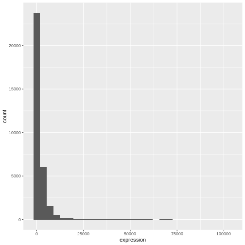
ggplot2パッケージの+演算子は特に便利で、既存のggplotオブジェクトを変更できます。つまり、プロットテンプレートを簡単に設定し、さまざまな種類のプロットを便利に探索できるため、上記のプロットは以下のようなコードでも生成可能です：
R
# プロットを変数に割り当てる
rna_plot <- ggplot(data = rna,
mapping = aes(x = expression))
# プロットを描画する
rna_plot + geom_histogram()
課題
ヒストグラムを描画する際に表示される自動メッセージにお気づきでしょうか？
OUTPUT
`stat_bin()` using `bins = 30`. Pick better value with `binwidth`.geom_histogram() の bins または
binwidth
引数を変更することで、ビンの数や幅を調整できます。
R
# ビン幅の変更
ggplot(rna, aes(x = expression)) +
geom_histogram(bins = 15)
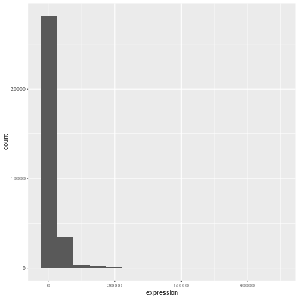
R
# ビン幅の変更
ggplot(rna, aes(x = expression)) +
geom_histogram(binwidth = 2000)
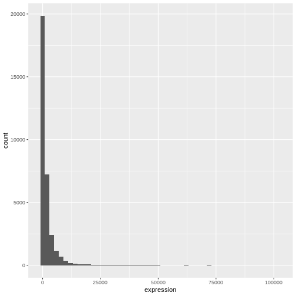
ここでデータが右に歪んでいることが確認できます。より対称的な分布を得るために、
対数変換（log2変換）を適用することができます。なお、式値が0の場合に-Inf値が
返されるのを防ぐため、ここでは小さな定数値（+1）を追加しています。
R
rna <- rna |>
mutate(expression_log = log2(expression + 1))
次に、対数変換した発現量のヒストグラムを作成すると、確かに正規分布に近い分布が得られます。
R
ggplot(rna, aes(x = expression_log)) + geom_histogram()
OUTPUT
`stat_bin()` using `bins = 30`. Pick better value with `binwidth`.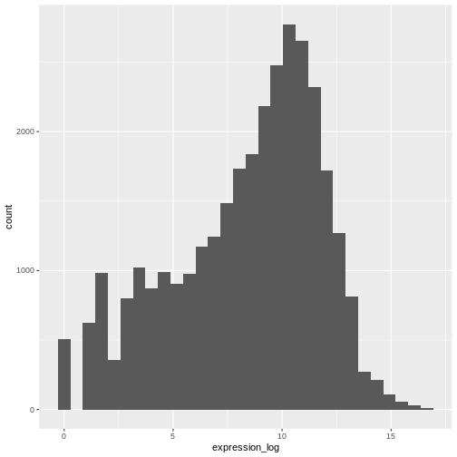
これ以降の分析では、対数変換した発現量の値を用いて作業を進めていきます。
課題
この変換を視覚的に理解する別の方法として、観測値のスケールを考慮する方法があります。例えば、軸のスケールを調整することで、プロット空間内での観測値の分布をより適切に調整できる場合があります。軸のスケール変更は、他のコンポーネントを追加・修正する場合と同様の手順で行います（つまり、段階的にコマンドを追加していく方法です）。以下の変更を試してみてください：
- 変換前の式を対数スケール（log10）で表示します。
scale_x_log10()関数を参照してください。以前のグラフと比較してください。なぜ今回は警告メッセージが表示されるのでしょうか？
R
ggplot(data = rna, mapping = aes(x = expression))+
geom_histogram() +
scale_x_log10()
WARNING
Warning in scale_x_log10(): log-10 transformation introduced infinite values.OUTPUT
`stat_bin()` using `bins = 30`. Pick better value with `binwidth`.WARNING
Warning: Removed 507 rows containing non-finite outside the scale range
(`stat_bin()`).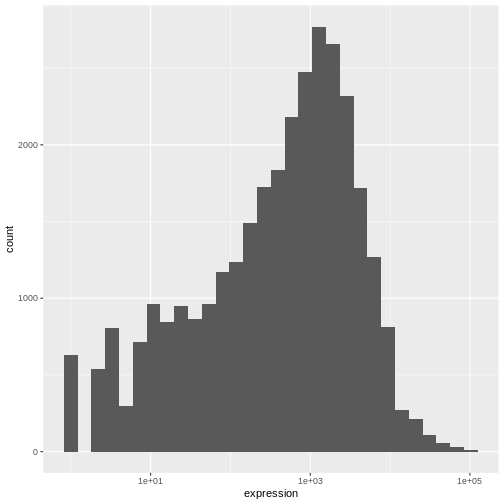
注意事項
-
ggplot()関数内で指定した設定は、後から追加するすべてのジオメトリレイヤーから参照されます（つまり、これらはグローバルなプロット設定となります）。これにはaes()で設定したx軸・y軸のマッピングも含まれます。 - 特定のジオメトリレイヤーに対しては、
ggplot()関数で定義したグローバル設定とは独立してマッピングを指定することも可能です。 - 新しいレイヤーを追加する際に使用する
+記号は、必ず直前のレイヤーを含む行の末尾に配置する必要があります。もし新しいレイヤーを含む行の先頭に+記号を置いた場合、ggplot2は新しいレイヤーを追加せず、エラーメッセージを返します。
R
# これはレイヤーを追加する正しい構文です
rna_plot +
geom_histogram()
# これは新しいレイヤーを追加せず、エラーメッセージを返します
rna_plot
+ geom_histogram()
プロットを段階的に構築する方法
ここでは、2つの連続変数を用いて散布図を作成し、geom_point()関数で表現します。このグラフは、時間8時点と時間0時点、および時間4時点と時間0時点における発現量の対数2倍変化を表します。まず、遺伝子ごと・時間ごとに対数変換した発現量の平均値を計算し、次に時間8時点と時間0時点、時間4時点と時間0時点の平均値の対数差を計算して対数2倍変化を求めます。なお、後で遺伝子を分類するために使用する遺伝子のバイオタイプ情報もここで含めます。これらの変化量は新しいデータフレームrna_fcに保存します。
R
rna_fc <- rna |> select(gene, time,
gene_biotype, expression_log) |>
group_by(gene, time, gene_biotype) |>
summarize(mean_exp = mean(expression_log)) |>
pivot_wider(names_from = time,
values_from = mean_exp) |>
mutate(time_8_vs_0 = `8` - `0`, time_4_vs_0 = `4` - `0`)
OUTPUT
`summarise()` has grouped output by 'gene', 'time'. You can override using the
`.groups` argument.作成したデータフレームrna_fcを用いてggplotを構築します。ggplot2でプロットを作成する際は通常、反復的なプロセスで行います。まず使用するデータセットを定義し、軸を設定し、使用するジオメトリを選択します：
R
ggplot(data = rna_fc, mapping = aes(x = time_4_vs_0, y = time_8_vs_0)) +
geom_point()
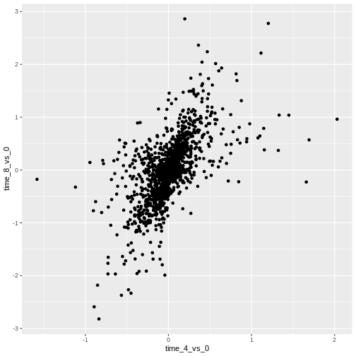
次に、このプロットをさらに修正してより多くの情報を抽出します。例えば、重なりを避けるための透明度（alpha）を追加できます：
R
ggplot(data = rna_fc, mapping = aes(x = time_4_vs_0, y = time_8_vs_0)) +
geom_point(alpha = 0.3)
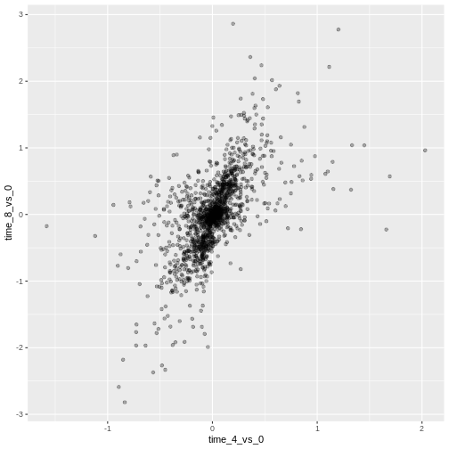
すべての点に色を付けることも可能です：
R
ggplot(data = rna_fc, mapping = aes(x = time_4_vs_0, y = time_8_vs_0)) +
geom_point(alpha = 0.3, color = "blue")
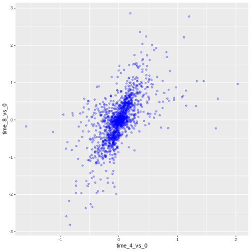
あるいは、プロット内の各遺伝子を異なる色で表示したい場合は、color引数にベクトルを指定します。ggplot2はこのベクトルの値に応じて異なる色を自動的に割り当てます。以下はgene_biotypeで色分けする例です：
R
ggplot(data = rna_fc, mapping = aes(x = time_4_vs_0, y = time_8_vs_0)) +
geom_point(alpha = 0.3, aes(color = gene_biotype))
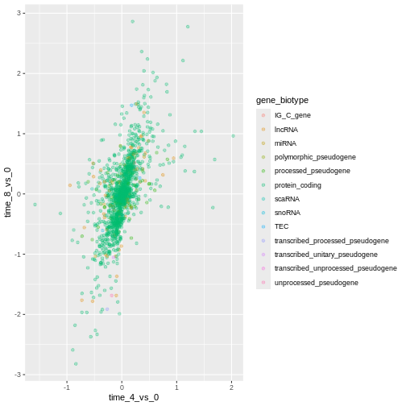
ggplot()関数内で直接マッピング時に色を指定することもできます。この設定はすべてのジオメトリレイヤーから参照され、aes()で設定したx軸・y軸のマッピングに基づいて決定されます。
R
ggplot(data = rna_fc, mapping = aes(x = time_4_vs_0, y = time_8_vs_0,
color = gene_biotype)) +
geom_point(alpha = 0.3)

最後に、geom_abline()関数を使用して対角線を追加することも可能です：
R
ggplot(data = rna_fc, mapping = aes(x = time_4_vs_0, y = time_8_vs_0,
color = gene_biotype)) +
geom_point(alpha = 0.3) +
geom_abline(intercept = 0)
注目すべきは、ジオメトリレイヤーをgeom_pointからgeom_jitterに変更しても、色は依然としてgene_biotypeによって決定される点です。
R
ggplot(data = rna_fc, mapping = aes(x = time_4_vs_0, y = time_8_vs_0,
color = gene_biotype)) +
geom_jitter(alpha = 0.3) +
geom_abline(intercept = 0)
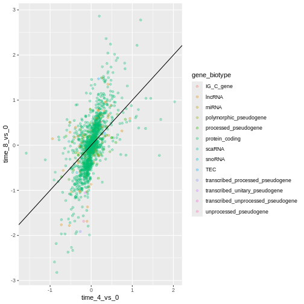
課題
散布図は小規模なデータセットの探索的分析において有用なツールです。しかし、rna_fc
データセットのように観測値数が多い場合、点の重なり（オーバープロット）が散布図の限界となることがあります。このような状況に対処するための有効な手法の一つが、観測値を六角形グリッドに分割するヘキサビン法です。
ggplot2でヘキサビン法を使用するには、まず CRAN リポジトリから R パッケージhexbinをインストールし、ロードする必要があります。次に
geom_hex()関数を使用することで、ヘキサビンプロットを作成できます。ヘキサビンプロットと従来の散布図を比較した場合、それぞれの長所と短所は何でしょうか？上記の散布図と作成したヘキサビンプロットを詳細に比較・検討してください。
R
install.packages("hexbin")
R
library("hexbin")
ggplot(data = rna_fc, mapping = aes(x = time_4_vs_0, y = time_8_vs_0)) +
geom_hex() +
geom_abline(intercept = 0)
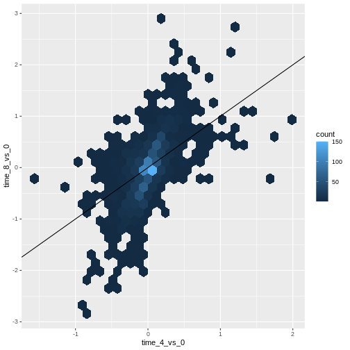
課題
これまでに学んだ知識を活用して、rna データセットから
sample 列を選択し、expression_log
値を散布図としてプロットしてください。時間軸は異なる色で表示されるように設定します。このデータ表現方法はこの種のデータを示す上で適切な方法でしょうか？
R
ggplot(data = rna, mapping = aes(y = expression_log, x = sample)) +
geom_point(aes(color = time))
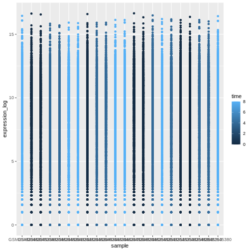
箱ひげ図
箱ひげ図を用いることで、各サンプル内における遺伝子発現量の分布を視覚的に表現することができます：
R
ggplot(data = rna,
mapping = aes(y = expression_log, x = sample)) +
geom_boxplot()
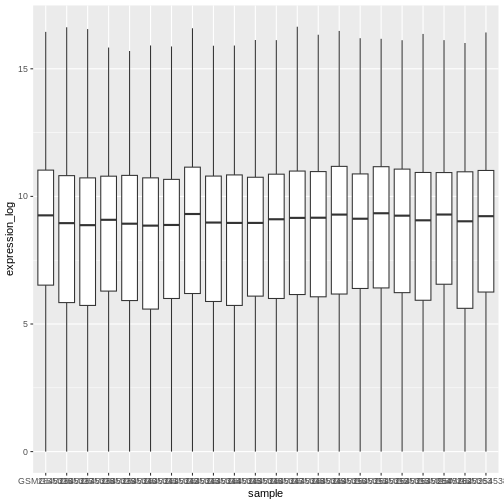
箱ひげ図に点プロットを追加することで、測定値の総数とその分布状況をより明確に把握することが可能になります：
R
ggplot(data = rna,
mapping = aes(y = expression_log, x = sample)) +
geom_jitter(alpha = 0.2, color = "tomato") +
geom_boxplot(alpha = 0)
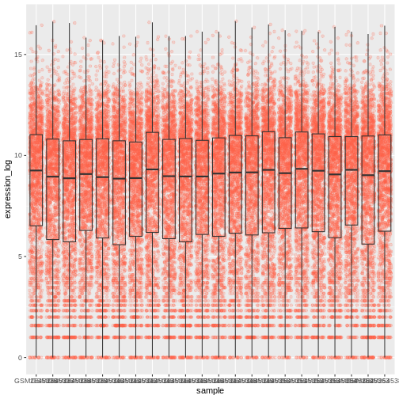
課題
箱ひげ図のレイヤーがジッタープロットのレイヤーの前面に表示されていることに注目してください。箱ひげ図を点の下に表示されるようにするには、コードをどのように変更すればよいでしょうか？
これら2つのジオメトリの順序を入れ替える必要があります：
R
ggplot(data = rna,
mapping = aes(y = expression_log, x = sample)) +
geom_boxplot(alpha = 0) +
geom_jitter(alpha = 0.2, color = "tomato")
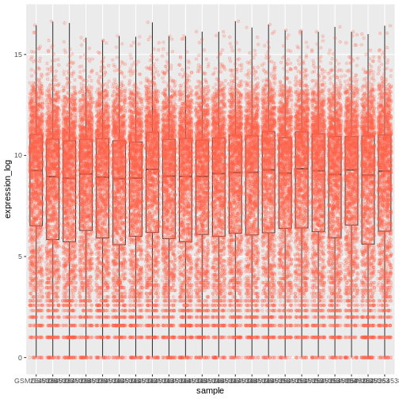
x軸上の値がまだ適切に読み取れないことにお気づきかもしれません。ラベルの表示方向を変更し、垂直方向と水平方向に調整して重なりが起こらないようにしましょう。90度の角度を使用するか、斜め向きのラベルに適した角度を見つけるために試行錯誤してみてください：
R
ggplot(data = rna,
mapping = aes(y = expression_log, x = sample)) +
geom_jitter(alpha = 0.2, color = "tomato") +
geom_boxplot(alpha = 0) +
theme(axis.text.x = element_text(angle = 90, hjust = 0.5, vjust = 0.5))
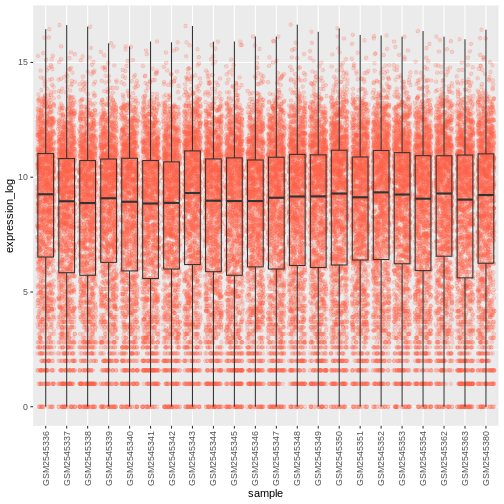
課題
箱ひげ図のデータポイントに、感染期間（time）に応じて色を付けてください。
ヒント: time
変数のクラスを確認してください。ggplot のマッピング処理内で
time
のクラスを整数型から因子型に直接変更することを検討してください。この変更が
R でグラフを作成する方法にどのような影響を与えるのでしょうか？
R
# time as integer
ggplot(data = rna,
mapping = aes(y = expression_log,
x = sample)) +
geom_jitter(alpha = 0.2, aes(color = time)) +
geom_boxplot(alpha = 0) +
theme(axis.text.x = element_text(angle = 90, hjust = 0.5, vjust = 0.5))
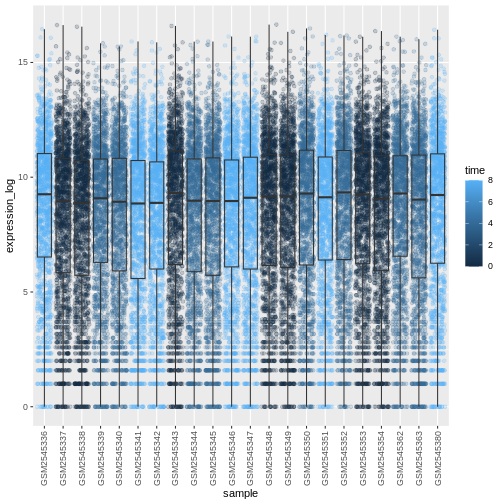
R
# time as factor
ggplot(data = rna,
mapping = aes(y = expression_log,
x = sample)) +
geom_jitter(alpha = 0.2, aes(color = as.factor(time))) +
geom_boxplot(alpha = 0) +
theme(axis.text.x = element_text(angle = 90, hjust = 0.5, vjust = 0.5))
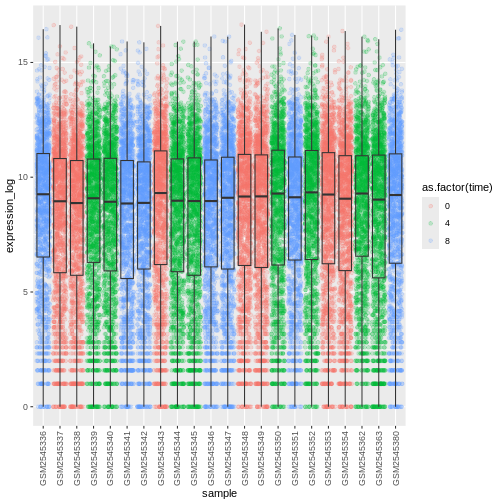
課題
箱ひげ図は分布の概要を把握するのに有用ですが、分布の「形状」そのものは表示しません。例えば、分布が二峰性の場合、箱ひげ図ではその特徴を捉えることができません。箱ひげ図の代替手段として「バイオリンプロット」があり、これはデータ点の密度分布の形状を視覚的に表現します。
- 箱ひげ図をバイオリンプロットに置き換えてください。
geom_violin()関数を使用します。fill引数を用いて、時間軸に沿ってバイオリンプロットを塗り分けてください。
R
ggplot(data = rna,
mapping = aes(y = expression_log, x = sample)) +
geom_violin(aes(fill = as.factor(time))) +
theme(axis.text.x = element_text(angle = 90, hjust = 0.5, vjust = 0.5))
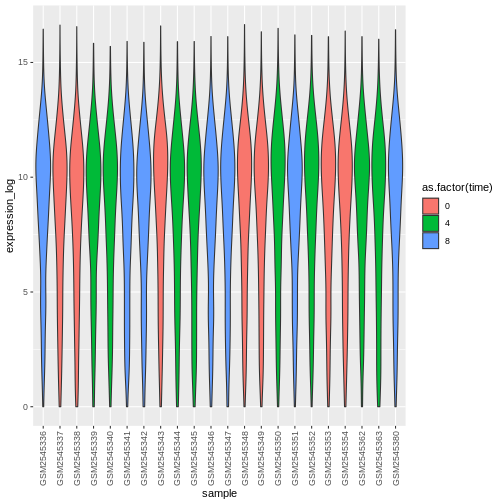
課題
- バイオリンプロットを修正し、
性別（sex）ごとにバイオリン部分を塗りつぶすようにしてください。
R
ggplot(data = rna,
mapping = aes(y = expression_log, x = sample)) +
geom_violin(aes(fill = sex)) +
theme(axis.text.x = element_text(angle = 90, hjust = 0.5, vjust = 0.5))
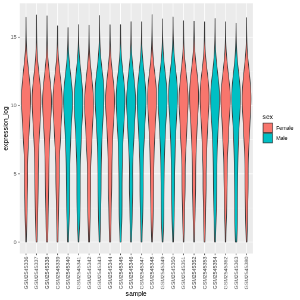
折れ線グラフ
感染期間ごとの平均発現量を、時間8時点と時間0時点を比較した際の対数倍率変化が最大となる10遺伝子について計算します。まず対象となる遺伝子を選択し、rnaデータセットからこれら10遺伝子のみを含むサブセットsub_rnaを作成します。その後、データをグループ化し、各グループ内の遺伝子発現量の平均値を算出します：
R
rna_fc <- rna_fc |> arrange(desc(time_8_vs_0))
genes_selected <- rna_fc$gene[1:10]
sub_rna <- rna |>
filter(gene %in% genes_selected)
mean_exp_by_time <- sub_rna |>
group_by(gene,time) |>
summarize(mean_exp = mean(expression_log))
OUTPUT
`summarise()` has grouped output by 'gene'. You can override using the
`.groups` argument.R
mean_exp_by_time
OUTPUT
# A tibble: 30 × 3
# Groups: gene [10]
gene time mean_exp
<chr> <int> <dbl>
1 Acr 0 5.07
2 Acr 4 5.54
3 Acr 8 7.31
4 Aipl1 0 3.70
5 Aipl1 4 3.89
6 Aipl1 8 6.56
7 Bst1 0 3.20
8 Bst1 4 3.77
9 Bst1 8 5.22
10 Chil3 0 4.00
# ℹ 20 more rows感染期間をx軸、平均発現量をy軸とした折れ線グラフを作成できます：
R
ggplot(data = mean_exp_by_time, mapping = aes(x = time, y = mean_exp)) +
geom_line()
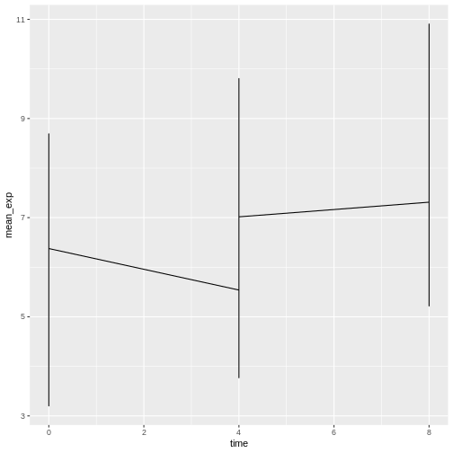
残念ながらこの手法ではうまくいきません。すべての遺伝子のデータを一括してプロットしているためです。各遺伝子ごとに別々の線を描画するには、美的関数をgroup = geneに変更する必要があります：
R
ggplot(data = mean_exp_by_time,
mapping = aes(x = time, y = mean_exp, group = gene)) +
geom_line()
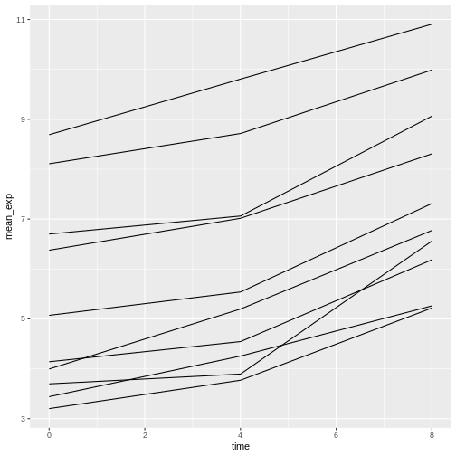
色分けを追加すれば（colorパラメータを使用すると自動的にデータがグループ化されます）、プロット上で各遺伝子を区別できるようになります：
R
ggplot(data = mean_exp_by_time,
mapping = aes(x = time, y = mean_exp, color = gene)) +
geom_line()
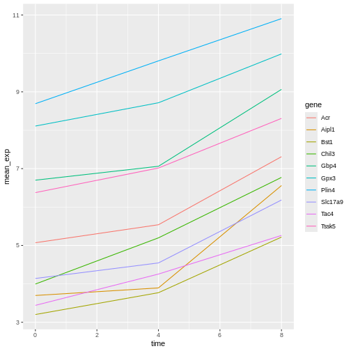
面分割表示
ggplot2には面分割と呼ばれる特殊な機能があり、データセットに含まれる因子に基づいて1つのプロットを複数のサブプロットに分割できます。これらのサブプロットは同じプロパティ（軸の範囲、目盛りなど）を継承するため、直接比較が容易になります。各遺伝子について時間経過に沿った折れ線グラフを作成する場合に活用しましょう：
R
ggplot(data = mean_exp_by_time,
mapping = aes(x = time, y = mean_exp)) + geom_line() +
facet_wrap(~ gene)
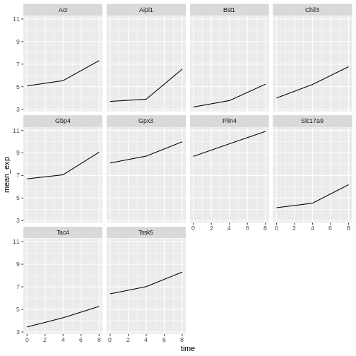
ここではすべてのサブプロットにおいて、x軸とy軸が同じスケールになっています。このデフォルト設定を変更するには、scalesパラメータを調整してy軸のスケールを自由に設定可能にできます：
R
ggplot(data = mean_exp_by_time,
mapping = aes(x = time, y = mean_exp)) +
geom_line() +
facet_wrap(~ gene, scales = "free_y")
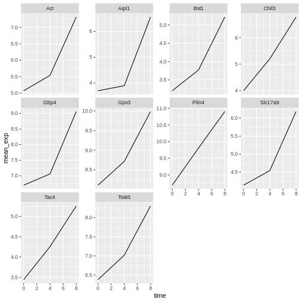
次に、各プロット内の線をマウスの性別でさらに分割したいとします。そのためには、gene、time、sexでグループ化したデータフレーム内で平均発現量を計算する必要があります：
R
mean_exp_by_time_sex <- sub_rna |>
group_by(gene, time, sex) |>
summarize(mean_exp = mean(expression_log))
OUTPUT
`summarise()` has grouped output by 'gene', 'time'. You can override using the
`.groups` argument.R
mean_exp_by_time_sex
OUTPUT
# A tibble: 60 × 4
# Groups: gene, time [30]
gene time sex mean_exp
<chr> <int> <chr> <dbl>
1 Acr 0 Female 5.13
2 Acr 0 Male 5.00
3 Acr 4 Female 5.93
4 Acr 4 Male 5.15
5 Acr 8 Female 7.27
6 Acr 8 Male 7.36
7 Aipl1 0 Female 3.67
8 Aipl1 0 Male 3.73
9 Aipl1 4 Female 4.07
10 Aipl1 4 Male 3.72
# ℹ 50 more rowsこれで、colorパラメータを使用して単一プロット内で性別ごとにさらに分割した面分割グラフを作成できます：
R
ggplot(data = mean_exp_by_time_sex,
mapping = aes(x = time, y = mean_exp, color = sex)) +
geom_line() +
facet_wrap(~ gene, scales = "free_y")
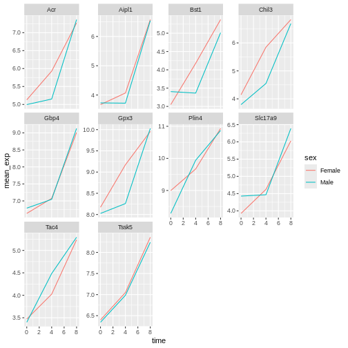
通常、白背景のプロットは印刷時に視認性が高くなります。theme_bw()関数を使用して背景を白に設定できます。さらに、グリッドラインも削除可能です：
R
ggplot(data = mean_exp_by_time_sex,
mapping = aes(x = time, y = mean_exp, color = sex)) +
geom_line() +
facet_wrap(~ gene, scales = "free_y") +
theme_bw() +
theme(panel.grid = element_blank())
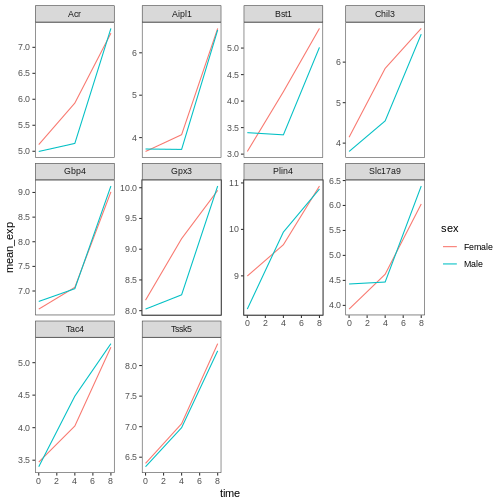
課題
これまでに学んだ知識を活用して、感染経過に伴う各染色体の平均発現量の変化を視覚的に表現するプロットを作成してください。
R
mean_exp_by_chromosome <- rna |>
group_by(chromosome_name, time) |>
summarize(mean_exp = mean(expression_log))
OUTPUT
`summarise()` has grouped output by 'chromosome_name'. You can override using
the `.groups` argument.R
ggplot(data = mean_exp_by_chromosome, mapping = aes(x = time,
y = mean_exp)) +
geom_line() +
facet_wrap(~ chromosome_name, scales = "free_y")
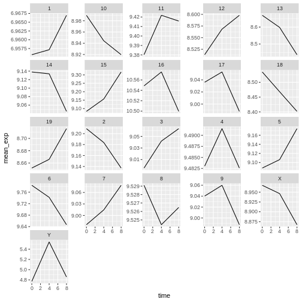
facet_wrapジオメトリはプロットを任意の数の次元に分割し、1ページにきれいに収まるようにします。一方、facet_gridジオメトリでは、数式表記（rows ~ columns;
単一の行または列を示すプレースホルダーとして.を使用可）を用いて、プロットの配置方法を明示的に指定できます。
以前のプロットを修正して、性別ごとの遺伝子発現の平均値が時間経過とともにどのように変化したかを比較してみましょう：
R
# 1列レイアウト、行単位で分割
ggplot(data = mean_exp_by_time_sex,
mapping = aes(x = time, y = mean_exp, color = gene)) +
geom_line() +
facet_grid(sex ~ .)
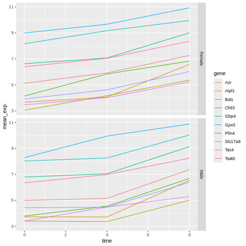
R
# 1行レイアウト、列単位で分割
ggplot(data = mean_exp_by_time_sex,
mapping = aes(x = time, y = mean_exp, color = gene)) +
geom_line() +
facet_grid(. ~ sex)
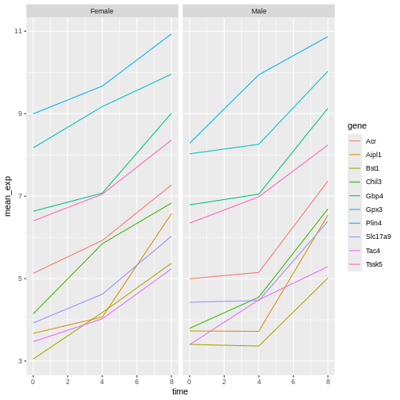
ggplot2テーマ
プロットの背景色を白に変更するtheme_bw()に加え、ggplot2には視覚化の外観を素早く変更できる他のテーマも用意されています。利用可能なテーマの完全なリストはhttps://ggplot2.tidyverse.org/reference/ggtheme.htmlで確認できます。theme_minimal()とtheme_light()は人気の高いテーマで、theme_void()は独自のテーマを作成する際の出発点として便利です。
ggthemesパッケージでは、Excel
2003テーマを含む多様なオプションが提供されています。ggplot2拡張機能
ウェブサイトでは、ggplot2の機能を拡張するパッケージの一覧が掲載されており、追加のテーマも含まれています。
カスタマイズ
時間と遺伝子ごとの平均発現量を性別で分割したプロットに戻りましょう。色分けは性別で行います。
ggplot2チートシートを参照し、プロットを改善する方法を考えてみてください。
次に、「時間」と「mean_exp」という単純な軸名をより情報量の多い表現に変更し、図にタイトルを追加しましょう：
R
ggplot(data = mean_exp_by_time_sex,
mapping = aes(x = time, y = mean_exp, color = sex)) +
geom_line() +
facet_wrap(~ gene, scales = "free_y") +
theme_bw() +
theme(panel.grid = element_blank()) +
labs(title = "感染期間別の遺伝子発現平均値",
x = "感染期間（日数）",
y = "平均遺伝子発現値")
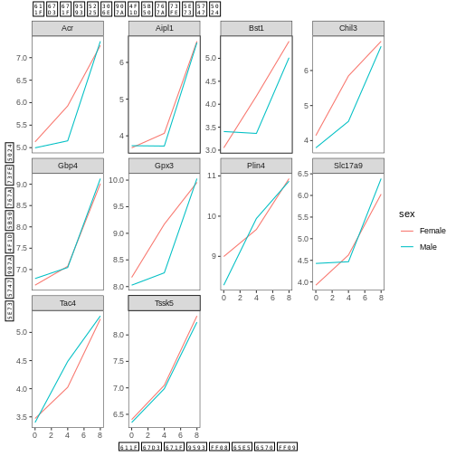
軸名はより情報量が増えましたが、可読性をさらに向上させるためにフォントサイズを大きくすることができます：
R
ggplot(data = mean_exp_by_time_sex,
mapping = aes(x = time, y = mean_exp, color = sex)) +
geom_line() +
facet_wrap(~ gene, scales = "free_y") +
theme_bw() +
theme(panel.grid = element_blank()) +
labs(title = "感染期間別の遺伝子発現平均値",
x = "感染期間（日数）",
y = "平均遺伝子発現値") +
theme(text = element_text(size = 16))
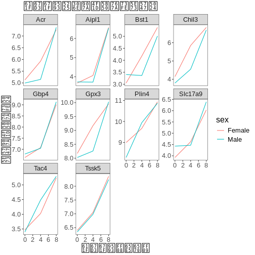
なお、プロットのフォントを変更することも可能です。Windows環境では、extrafont
パッケージをインストールする必要がある場合があります。
さらに、x軸・y軸のテキスト色、グリッドの色などをカスタマイズできます。例えば、legend.positionを"top"に設定することで凡例を上部に移動させることも可能です。
R
ggplot(data = mean_exp_by_time_sex,
mapping = aes(x = time, y = mean_exp, color = sex)) +
geom_line() +
facet_wrap(~ gene, scales = "free_y") +
theme_bw() +
theme(panel.grid = element_blank()) +
labs(title = "感染期間別の遺伝子発現平均値",
x = "感染期間（日数）",
y = "平均遺伝子発現値") +
theme(text = element_text(size = 16),
axis.text.x = element_text(colour = "royalblue4", size = 12),
axis.text.y = element_text(colour = "royalblue4", size = 12),
panel.grid = element_line(colour="lightsteelblue1"),
legend.position = "top")
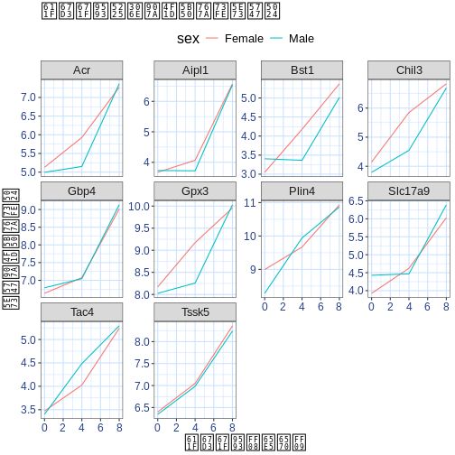
作成したカスタマイズテーマがデフォルトテーマよりも優れていると判断した場合、 このテーマをオブジェクトとして保存しておけば、今後作成する他のプロットに簡単に適用できます。以下に、以前に作成したヒストグラムを例に説明します。
R
blue_theme <- theme(axis.text.x = element_text(colour = "royalblue4",
size = 12),
axis.text.y = element_text(colour = "royalblue4",
size = 12),
text = element_text(size = 16),
panel.grid = element_line(colour="lightsteelblue1"))
ggplot(rna, aes(x = expression_log)) +
geom_histogram(bins = 20) +
blue_theme()
ERROR
Error in blue_theme(): could not find function "blue_theme"課題
ここまでの情報を踏まえ、この演習で生成されたプロットのいずれかを改善するか、
あるいはあなた自身の美しいグラフを作成するのにさらに5分間取り組んでください。
インスピレーションを得るために、RStudioのggplot2チートシート
を参照してください。以下にいくつかのアイデアをご紹介します：
- 線の太さを変更する方法を試してみてください。
- 凡例の名称を変更する方法はありますか？ラベルの変更はどうでしょう？
（ヒント：
scale_で始まるggplot関数を探してみてください） - 異なるカラーパレットを使用するか、線の色を手動で指定する方法を試してみましょう （詳細はhttps://www.cookbook-r.com/Graphs/Colors_(ggplot2)/をご覧ください）。
例えば、以下のプロットに基づいて：
R
ggplot(data = mean_exp_by_time_sex,
mapping = aes(x = time, y = mean_exp, color = sex)) +
geom_line() +
facet_wrap(~ gene, scales = "free_y") +
theme_bw() +
theme(panel.grid = element_blank())

このプロットは以下の方法でカスタマイズ可能です：
R
# 線の太さを変更
ggplot(data = mean_exp_by_time_sex,
mapping = aes(x = time, y = mean_exp, color = sex)) +
geom_line(size=1.5) +
facet_wrap(~ gene, scales = "free_y") +
theme_bw() +
theme(panel.grid = element_blank())
WARNING
Warning: Using `size` aesthetic for lines was deprecated in ggplot2 3.4.0.
ℹ Please use `linewidth` instead.
This warning is displayed once every 8 hours.
Call `lifecycle::last_lifecycle_warnings()` to see where this warning was
generated.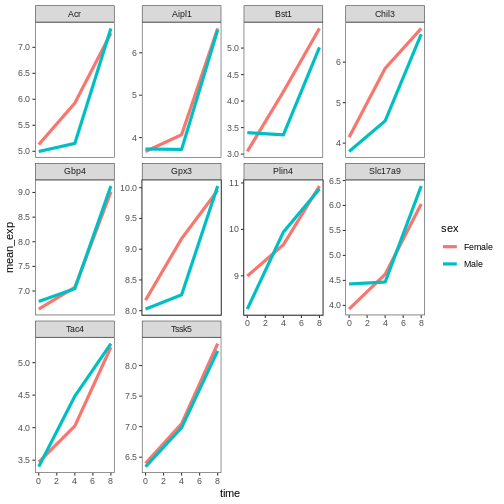
R
# 凡例名とラベルの名称を変更
ggplot(data = mean_exp_by_time_sex,
mapping = aes(x = time, y = mean_exp, color = sex)) +
geom_line() +
facet_wrap(~ gene, scales = "free_y") +
theme_bw() +
theme(panel.grid = element_blank()) +
scale_color_discrete(name = "性別", labels = c("F", "M"))
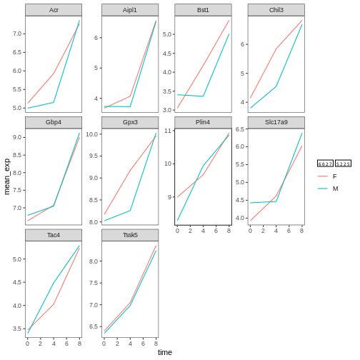
R
# 異なるカラーパレットを使用
ggplot(data = mean_exp_by_time_sex,
mapping = aes(x = time, y = mean_exp, color = sex)) +
geom_line() +
facet_wrap(~ gene, scales = "free_y") +
theme_bw() +
theme(panel.grid = element_blank()) +
scale_color_brewer(name = "性別", labels = c("F", "M"), palette = "Dark2")
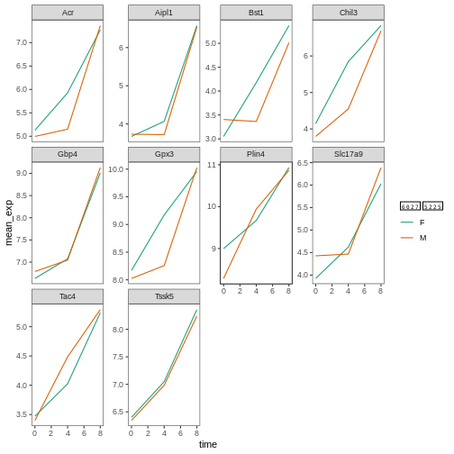
R
# 色を手動で指定
ggplot(data = mean_exp_by_time_sex,
mapping = aes(x = time, y = mean_exp, color = sex)) +
geom_line() +
facet_wrap(~ gene, scales = "free_y") +
theme_bw() +
theme(panel.grid = element_blank()) +
scale_color_manual(name = "性別", labels = c("F", "M"),
values = c("royalblue", "deeppink"))
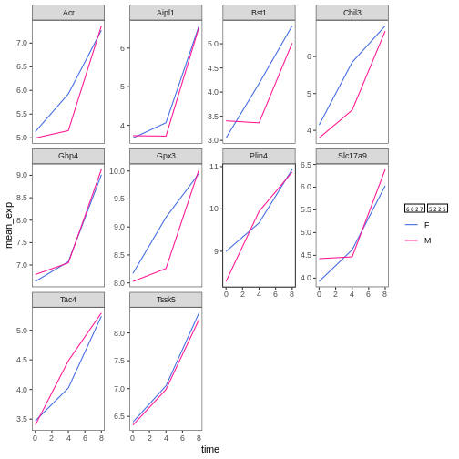
複数プロットの配置方法
ファセット機能は1つのプロットを複数のサブプロットに分割する強力なツールですが、時には異なる変数やデータフレームに基づく独立した複数のプロットを1つの図にまとめたい場合もあります。
まず、横に並べて表示したい2つのプロットを作成しましょう：
最初のグラフは各染色体ごとのユニークな遺伝子数をカウントしたものです。まずchromosome_nameのレベル順序を並べ替え、各染色体ごとのユニークな遺伝子をフィルタリングします。また、読みやすさを向上させるため、y軸のスケールを対数10スケールに変更します。
R
rna$chromosome_name <- factor(rna$chromosome_name,
levels = c(1:19,"X","Y"))
count_gene_chromosome <- rna |>
select(chromosome_name, gene) |>
distinct() |> ggplot() +
geom_bar(aes(x = chromosome_name), fill = "seagreen",
position = "dodge", stat = "count") +
labs(y = "log10(遺伝子数)", x = "染色体") +
scale_y_log10()
count_gene_chromosome
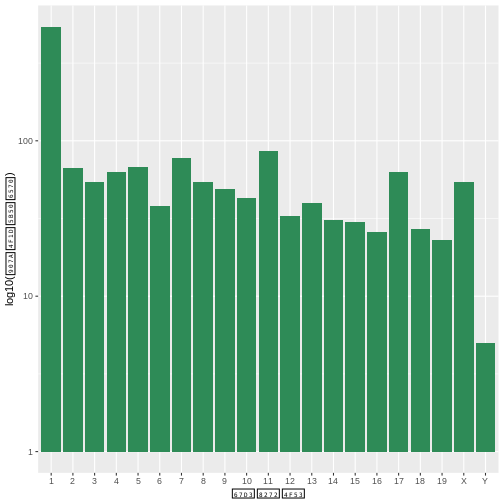
次に、legend.positionを"none"に設定することで、凡例を完全に非表示にします。
R
exp_boxplot_sex <- ggplot(rna, aes(y=expression_log, x = as.factor(time),
color=sex)) +
geom_boxplot(alpha = 0) +
labs(y = "平均遺伝子発現値",
x = "時間") + theme(legend.position = "none")
exp_boxplot_sex
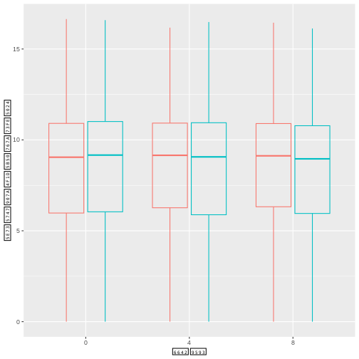
patchworkパッケージは、+演算子を使用して図を整然と配置する洗練された方法を提供します。具体的には、|演算子で図を左右に並べ、/演算子で上下に重ねることが可能です。
R
install.packages("patchwork")
R
library("patchwork")
count_gene_chromosome + exp_boxplot_sex
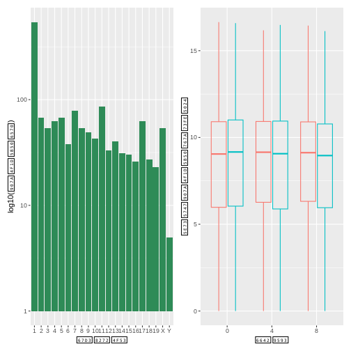
R
## または count_gene_chromosome | exp_boxplot_sex と記述することも可能
R
count_gene_chromosome / exp_boxplot_sex
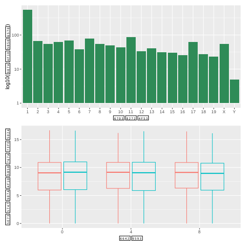
plot_layout関数を使えば、さらに詳細なレイアウト制御が可能で、より複雑な配置も実現できます：
R
count_gene_chromosome + exp_boxplot_sex + plot_layout(ncol = 1)

R
count_gene_chromosome +
(count_gene_chromosome + exp_boxplot_sex) +
exp_boxplot_sex +
plot_layout(ncol = 1)

最後のプロット構成は、|と/の配置演算子を使っても作成できます：
R
count_gene_chromosome /
(count_gene_chromosome | exp_boxplot_sex) /
exp_boxplot_sex
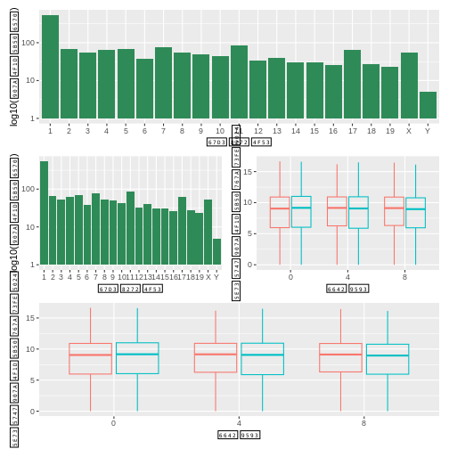
patchworkについてさらに詳しく知りたい場合は、公式ウェブサイトやこの解説動画をご覧ください。
別の選択肢として、gridExtraパッケージを使用する方法もあります。このパッケージではgrid.arrange()関数を使って個別のggplotプロットを1つの図に統合できます：
R
install.packages("gridExtra")
R
library("gridExtra")
grid.arrange(count_gene_chromosome, exp_boxplot_sex, ncol = 2)
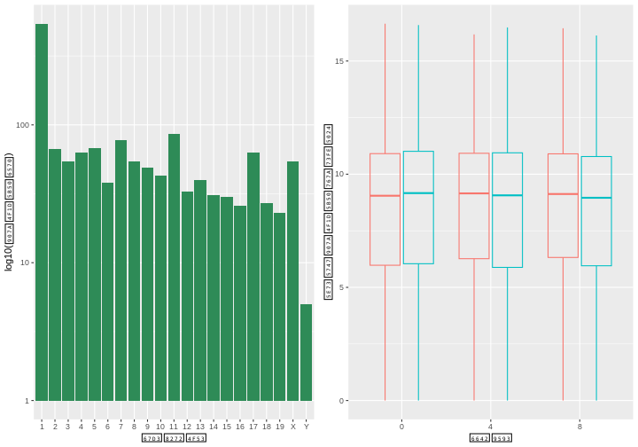
ncolとnrow引数を使った基本的な配置に加え、より複雑なレイアウト構成を実現するツールも用意されています。
プロットのエクスポート方法
プロットの作成が完了したら、お好みの形式でファイルに保存できます。RStudioの「プロット」ペインにある「エクスポート」タブを使用すると、低解像度でプロットを保存できますが、多くの学術誌では受理されず、ポスター用の拡大表示にも適さない場合があります。
代わりに、ggsave()関数を使用することをお勧めします。この関数では、適切な引数（width、height、dpi）を調整することで、プロットの寸法と解像度を簡単に変更できます。
作業ディレクトリにfig_output/フォルダが作成されていることを確認してください。
R
my_plot <- ggplot(data = mean_exp_by_time_sex,
mapping = aes(x = time, y = mean_exp, color = sex)) +
geom_line() +
facet_wrap(~ gene, scales = "free_y") +
labs(title = "感染期間別の平均遺伝子発現量",
x = "感染期間（日数）",
y = "平均遺伝子発現量") +
guides(color=guide_legend(title="性別")) +
theme_bw() +
theme(axis.text.x = element_text(colour = "royalblue4", size = 12),
axis.text.y = element_text(colour = "royalblue4", size = 12),
text = element_text(size = 16),
panel.grid = element_line(colour="lightsteelblue1"),
legend.position = "top")
ggsave("fig_output/mean_exp_by_time_sex.png", my_plot, width = 15,
height = 10)
# grid.arrange()で作成したプロットも同様に保存可能です
combo_plot <- grid.arrange(count_gene_chromosome, exp_boxplot_sex,
ncol = 2, widths = c(4, 6))
ggsave("fig_output/combo_plot_chromosome_sex.png", combo_plot,
width = 10, dpi = 300)
注意：widthとheightのパラメータは、保存されるプロットのフォントサイズも決定します。
可視化のためのその他のパッケージ
ggplot2は非常に強力なパッケージであり、私たちの「クリーンなデータ」と「クリーンなツール」のワークフローに非常によく適合します。Rには他に無視できない可視化パッケージも存在します。
基本グラフィックス
Rに標準で付属しているグラフィックスシステム、いわゆる「基本Rグラフィックス」はシンプルで高速です。これは「画家モデル」または「キャンバスモデル」に基づいており、異なる出力が直接重ね合わされます（図@ref(fig:paintermodel)参照）。これはggplot2（および後述するlattice）とは根本的な違いがあり、ggplot2は画面やファイルにレンダリングされる専用オブジェクトを返すため、さらに更新することも可能です。
R
par(mfrow = c(1, 3))
plot(1:20, main = "最初のレイヤー（plot(1:20)で作成）")
plot(1:20, main = "h = 10で追加した水平赤色線")
abline(h = 10, col = "red")
plot(1:20, main = "rect(5, 5, 15, 15)で追加した長方形")
abline(h = 10, col = "red")
rect(5, 5, 15, 15, lwd = 3)
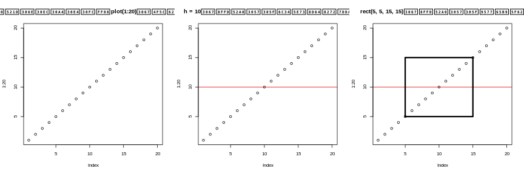
もう一つの重要な違いは、基本グラフィックスのプロット関数が入力データの種類に基づいて「適切な」処理を試みる点です。つまり、入力データのクラスに応じて動作を適応させます。これはggplot2とは大きく異なり、ggplot2はデータフレームのみを入力として受け付け、プロットを段階的に構築していく必要があります。
R
par(mfrow = c(2, 2))
boxplot(rnorm(100),
main = "rnorm(100)のボックスプロット")
boxplot(matrix(rnorm(100), ncol = 10),
main = "matrix(rnorm(100), ncol = 10)のボックスプロット")
hist(rnorm(100))
hist(matrix(rnorm(100), ncol = 10))
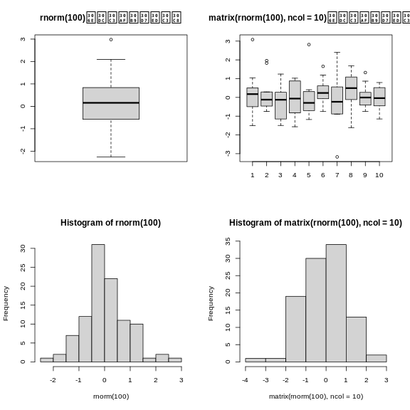
基本グラフィックスのデフォルト設定は、シンプルで標準的な図を素早く作成する場合に非常に効率的です。plot、hist、boxplotなどの単一の関数と1行のコードで迅速に生成できます。ただし、デフォルト設定が常に最も見栄えが良いとは限らず、特に複雑な図（例えばファセット表示を作成する場合など）では、調整に時間がかかり煩雑になることがあります。
Content from 次のステップ
Last updated on 2025-11-11 | Edit this page
Overview
Questions
-
SummarizedExperimentとは何でしょうか？ - Bioconductor と何でしょうか？
Objectives
- Bioconductorプロジェクトを紹介してみましょう。
- データコンテナの概念を紹介してみましょう。
- オミックス解析で多用される
SummarizedExperimentの概要を説明する。
次のステップ
バイオインフォマティクスのデータはしばしば複雑です。 これに対処するため、 開発者は、扱う必要のあるデータのプロパティに マッチする、特別なデータコンテナ（クラスと呼ばれる）を定義する。
この側面は、パッケージ間で同じコア・データ・インフラを使用するバイオコンダクター[^バイオコンダクター]プロジェクト 。 この 、Bioconductorの成功に貢献したことは間違いない。 Bioconductor パッケージ 開発者は、 プロジェクト全体に一貫性、相互運用性、安定性を提供するために、既存のインフラストラクチャを利用することをお勧めします 。
このようなオミックス・データ・コンテナを説明するために、
SummarizedExperimentクラスを紹介する。
実験概要
下図は、SummarizedExperimentクラスの構造を表しています。

SummarizedExperimentクラスのオブジェクトには、：
**定量的オミックスデータ （発現データ）を含む1つ（または複数）のアッセイ **、マトリックス状のオブジェクトとして格納されている。 特徴（遺伝子、 転写物、タンパク質、…） は行に沿って定義され、 は列に沿って定義される。
データフレームとして格納された、サンプルの共変量を含む sample metadata スロット。 この表の行はサンプルを表す（行は発現データの 列と正確に一致する）。
データフレームとして格納される、特徴共変量を含む 特徴メタデータ スロット。 このデータフレームの行は、 式データの行と完全に一致する。
SummarizedExperiment`の調整された性質は、データ操作中に 、異なるスロットの次元が 、常に一致することを保証する（すなわち、発現データの列と サンプルメタデータの行、および発現データと 特徴メタデータの行）。 例えば、 、アッセイから1つのサンプルを除外しなければならない場合、同じ操作でサンプルメタデータから 、自動的に除外される。
メタデータ・スロットは、他の構造に影響を与えることなく、 （カラム）の共変数を追加で増やすことができる。
SummarizedExperimentの作成
SummarizedExperiment`を作成するために、 の各コンポーネント、すなわちカウントマトリックス、サンプル、遺伝子 のメタデータをcsvファイルから作成する。 これらは通常、RNA-Seqデータが （生データが処理された後）提供される方法である。
-
An expression matrix: カウント行列をロードし、
最初の列が行/遺伝子名を含むことを指定し、
data.frameをmatrixに変換する。 ダウンロードは こちら。
R
count_matrix <- read.csv("data/count_matrix.csv",
row.names = 1) %>%
as.matrix()
count_matrix[1:5, ]
OUTPUT
GSM2545336 GSM2545337 GSM2545338 GSM2545339 GSM2545340 GSM2545341
Asl 1170 361 400 586 626 988
Apod 36194 10347 9173 10620 13021 29594
Cyp2d22 4060 1616 1603 1901 2171 3349
Klk6 287 629 641 578 448 195
Fcrls 85 233 244 237 180 38
GSM2545342 GSM2545343 GSM2545344 GSM2545345 GSM2545346 GSM2545347
Asl 836 535 586 597 938 1035
Apod 24959 13668 13230 15868 27769 34301
Cyp2d22 3122 2008 2254 2277 2985 3452
Klk6 186 1101 537 567 327 233
Fcrls 68 375 199 177 89 67
GSM2545348 GSM2545349 GSM2545350 GSM2545351 GSM2545352 GSM2545353
Asl 494 481 666 937 803 541
Apod 11258 11812 15816 29242 20415 13682
Cyp2d22 1883 2014 2417 3678 2920 2216
Klk6 742 881 828 250 798 710
Fcrls 300 233 231 81 303 285
GSM2545354 GSM2545362 GSM2545363 GSM2545380
Asl 473 748 576 1192
Apod 11088 15916 11166 38148
Cyp2d22 1821 2842 2011 4019
Klk6 894 501 598 259
Fcrls 248 179 184 68R
dim(count_matrix)
OUTPUT
[1] 1474 22- サンプルを説明する表、 こちら。
R
sample_metadata <- read.csv("data/sample_metadata.csv")
sample_metadata
OUTPUT
sample organism age sex infection strain time tissue mouse
1 GSM2545336 Mus musculus 8 Female InfluenzaA C57BL/6 8 Cerebellum 14
2 GSM2545337 Mus musculus 8 Female NonInfected C57BL/6 0 Cerebellum 9
3 GSM2545338 Mus musculus 8 Female NonInfected C57BL/6 0 Cerebellum 10
4 GSM2545339 Mus musculus 8 Female InfluenzaA C57BL/6 4 Cerebellum 15
5 GSM2545340 Mus musculus 8 Male InfluenzaA C57BL/6 4 Cerebellum 18
6 GSM2545341 Mus musculus 8 Male InfluenzaA C57BL/6 8 Cerebellum 6
7 GSM2545342 Mus musculus 8 Female InfluenzaA C57BL/6 8 Cerebellum 5
8 GSM2545343 Mus musculus 8 Male NonInfected C57BL/6 0 Cerebellum 11
9 GSM2545344 Mus musculus 8 Female InfluenzaA C57BL/6 4 Cerebellum 22
10 GSM2545345 Mus musculus 8 Male InfluenzaA C57BL/6 4 Cerebellum 13
11 GSM2545346 Mus musculus 8 Male InfluenzaA C57BL/6 8 Cerebellum 23
12 GSM2545347 Mus musculus 8 Male InfluenzaA C57BL/6 8 Cerebellum 24
13 GSM2545348 Mus musculus 8 Female NonInfected C57BL/6 0 Cerebellum 8
14 GSM2545349 Mus musculus 8 Male NonInfected C57BL/6 0 Cerebellum 7
15 GSM2545350 Mus musculus 8 Male InfluenzaA C57BL/6 4 Cerebellum 1
16 GSM2545351 Mus musculus 8 Female InfluenzaA C57BL/6 8 Cerebellum 16
17 GSM2545352 Mus musculus 8 Female InfluenzaA C57BL/6 4 Cerebellum 21
18 GSM2545353 Mus musculus 8 Female NonInfected C57BL/6 0 Cerebellum 4
19 GSM2545354 Mus musculus 8 Male NonInfected C57BL/6 0 Cerebellum 2
20 GSM2545362 Mus musculus 8 Female InfluenzaA C57BL/6 4 Cerebellum 20
21 GSM2545363 Mus musculus 8 Male InfluenzaA C57BL/6 4 Cerebellum 12
22 GSM2545380 Mus musculus 8 Female InfluenzaA C57BL/6 8 Cerebellum 19R
dim(sample_metadata)
OUTPUT
[1] 22 9- 遺伝子を説明する表、 こちら。
R
gene_metadata <- read.csv("data/gene_metadata.csv")
gene_metadata[1:10, 1:4]
OUTPUT
gene ENTREZID
1 Asl 109900
2 Apod 11815
3 Cyp2d22 56448
4 Klk6 19144
5 Fcrls 80891
6 Slc2a4 20528
7 Exd2 97827
8 Gjc2 118454
9 Plp1 18823
10 Gnb4 14696
product
1 argininosuccinate lyase, transcript variant X1
2 apolipoprotein D, transcript variant 3
3 cytochrome P450, family 2, subfamily d, polypeptide 22, transcript variant 2
4 kallikrein related-peptidase 6, transcript variant 2
5 Fc receptor-like S, scavenger receptor, transcript variant X1
6 solute carrier family 2 (facilitated glucose transporter), member 4
7 exonuclease 3'-5' domain containing 2
8 gap junction protein, gamma 2, transcript variant 1
9 proteolipid protein (myelin) 1, transcript variant 1
10 guanine nucleotide binding protein (G protein), beta 4, transcript variant X2
ensembl_gene_id
1 ENSMUSG00000025533
2 ENSMUSG00000022548
3 ENSMUSG00000061740
4 ENSMUSG00000050063
5 ENSMUSG00000015852
6 ENSMUSG00000018566
7 ENSMUSG00000032705
8 ENSMUSG00000043448
9 ENSMUSG00000031425
10 ENSMUSG00000027669R
dim(gene_metadata)
OUTPUT
[1] 1474 9これらのテーブルから SummarizedExperiment
を作成する：
として使用されるカウント行列。
サンプルを記述したテーブルは、サンプル メタデータスロットとして使用される。
遺伝子を記述したテーブルは、features メタデータスロットとして使用される。
これを行うには、 SummarizedExperiment
コンストラクタを使って、異なるパーツをまとめることができる：
R
## BiocManager::install("SummarizedExperiment")
library("SummarizedExperiment")
まず、 カウントマトリックスとサンプルアノテーションにおいて、サンプルの順番が同じであることを確認する。また、 カウントマトリックスと遺伝子アノテーションにおいて、遺伝子の順番が同じであることを確認する。
R
stopifnot(rownames(count_matrix) == gene_metadata$gene)
stopifnot(colnames(count_matrix) == sample_metadata$sample)
R
se <- SummarizedExperiment(assays = list(counts = count_matrix),
colData = sample_metadata,
rowData = gene_metadata)
se
OUTPUT
class: SummarizedExperiment
dim: 1474 22
metadata(0):
assays(1): counts
rownames(1474): Asl Apod ... Lmx1a Pbx1
rowData names(9): gene ENTREZID ... phenotype_description
hsapiens_homolog_associated_gene_name
colnames(22): GSM2545336 GSM2545337 ... GSM2545363 GSM2545380
colData names(9): sample organism ... tissue mouseデータの保存
以前のエピソードで行ったように、データをスプレッドシートにエクスポートするには、
、第1章
（小数点以下の区切り文字に,と.を使った場合の不整合の可能性、
変数型の定義の欠如）で説明したようないくつかの制限がある。 さらに、
スプレッドシートへのデータエクスポートは、データフレーム
や行列のような長方形のデータにのみ関係する。
データを保存するより一般的な方法は、Rに特有であり、
どのオペレーティングシステムでも動作することが保証されている
saveRDS 関数を使用することである。
このようにオブジェクトを保存すると、ディスク上にバイナリ
表現が生成されます（ここでは rds
ファイル拡張子を使用します）。 readRDS 関数を使用して R
にロードし直すことができます。
R
saveRDS(se, file = "data_output/se.rds")
rm(se)
se <- readRDS("data_output/se.rds")
head(se)
結論として、Rからデータを保存し、
Rで再度ロードする場合、saveRDSとreadRDSで保存とロードを行うのが
。 表形式のデータを、Rを使用していない誰か（
）と共有する必要がある場合は、テキストベースのスプレッドシートにエクスポートするのが、
良い選択肢である。
このデータ構造を使って、
assay関数で発現行列にアクセスすることができる：
R
head(assay(se))
OUTPUT
GSM2545336 GSM2545337 GSM2545338 GSM2545339 GSM2545340 GSM2545341
Asl 1170 361 400 586 626 988
Apod 36194 10347 9173 10620 13021 29594
Cyp2d22 4060 1616 1603 1901 2171 3349
Klk6 287 629 641 578 448 195
Fcrls 85 233 244 237 180 38
Slc2a4 782 231 248 265 313 786
GSM2545342 GSM2545343 GSM2545344 GSM2545345 GSM2545346 GSM2545347
Asl 836 535 586 597 938 1035
Apod 24959 13668 13230 15868 27769 34301
Cyp2d22 3122 2008 2254 2277 2985 3452
Klk6 186 1101 537 567 327 233
Fcrls 68 375 199 177 89 67
Slc2a4 528 249 266 357 654 693
GSM2545348 GSM2545349 GSM2545350 GSM2545351 GSM2545352 GSM2545353
Asl 494 481 666 937 803 541
Apod 11258 11812 15816 29242 20415 13682
Cyp2d22 1883 2014 2417 3678 2920 2216
Klk6 742 881 828 250 798 710
Fcrls 300 233 231 81 303 285
Slc2a4 271 304 349 715 513 320
GSM2545354 GSM2545362 GSM2545363 GSM2545380
Asl 473 748 576 1192
Apod 11088 15916 11166 38148
Cyp2d22 1821 2842 2011 4019
Klk6 894 501 598 259
Fcrls 248 179 184 68
Slc2a4 248 350 317 796R
dim(assay(se))
OUTPUT
[1] 1474 22colData`関数を使ってサンプルのメタデータにアクセスすることができる：
R
colData(se)
OUTPUT
DataFrame with 22 rows and 9 columns
sample organism age sex infection
<character> <character> <integer> <character> <character>
GSM2545336 GSM2545336 Mus musculus 8 Female InfluenzaA
GSM2545337 GSM2545337 Mus musculus 8 Female NonInfected
GSM2545338 GSM2545338 Mus musculus 8 Female NonInfected
GSM2545339 GSM2545339 Mus musculus 8 Female InfluenzaA
GSM2545340 GSM2545340 Mus musculus 8 Male InfluenzaA
... ... ... ... ... ...
GSM2545353 GSM2545353 Mus musculus 8 Female NonInfected
GSM2545354 GSM2545354 Mus musculus 8 Male NonInfected
GSM2545362 GSM2545362 Mus musculus 8 Female InfluenzaA
GSM2545363 GSM2545363 Mus musculus 8 Male InfluenzaA
GSM2545380 GSM2545380 Mus musculus 8 Female InfluenzaA
strain time tissue mouse
<character> <integer> <character> <integer>
GSM2545336 C57BL/6 8 Cerebellum 14
GSM2545337 C57BL/6 0 Cerebellum 9
GSM2545338 C57BL/6 0 Cerebellum 10
GSM2545339 C57BL/6 4 Cerebellum 15
GSM2545340 C57BL/6 4 Cerebellum 18
... ... ... ... ...
GSM2545353 C57BL/6 0 Cerebellum 4
GSM2545354 C57BL/6 0 Cerebellum 2
GSM2545362 C57BL/6 4 Cerebellum 20
GSM2545363 C57BL/6 4 Cerebellum 12
GSM2545380 C57BL/6 8 Cerebellum 19R
dim(colData(se))
OUTPUT
[1] 22 9また、rowData関数を使ってフィーチャーのメタデータにアクセスすることもできる：
R
head(rowData(se))
OUTPUT
DataFrame with 6 rows and 9 columns
gene ENTREZID product ensembl_gene_id
<character> <integer> <character> <character>
Asl Asl 109900 argininosuccinate ly.. ENSMUSG00000025533
Apod Apod 11815 apolipoprotein D, tr.. ENSMUSG00000022548
Cyp2d22 Cyp2d22 56448 cytochrome P450, fam.. ENSMUSG00000061740
Klk6 Klk6 19144 kallikrein related-p.. ENSMUSG00000050063
Fcrls Fcrls 80891 Fc receptor-like S, .. ENSMUSG00000015852
Slc2a4 Slc2a4 20528 solute carrier famil.. ENSMUSG00000018566
external_synonym chromosome_name gene_biotype phenotype_description
<character> <character> <character> <character>
Asl 2510006M18Rik 5 protein_coding abnormal circulating..
Apod NA 16 protein_coding abnormal lipid homeo..
Cyp2d22 2D22 15 protein_coding abnormal skin morpho..
Klk6 Bssp 7 protein_coding abnormal cytokine le..
Fcrls 2810439C17Rik 3 protein_coding decreased CD8-positi..
Slc2a4 Glut-4 11 protein_coding abnormal circulating..
hsapiens_homolog_associated_gene_name
<character>
Asl ASL
Apod APOD
Cyp2d22 CYP2D6
Klk6 KLK6
Fcrls FCRL2
Slc2a4 SLC2A4R
dim(rowData(se))
OUTPUT
[1] 1474 9SummarizedExperimentをサブセットする
SummarizedExperiment は、データフレームと同じように、 数値または論理の文字でサブセットできる。
以下では、 、3つの最初のサンプルの5つの最初の特徴のみを含む、SummarizedExperimentクラスの新しいインスタンスを作成します。
R
se1 <- se[1:5, 1:3]
se1
OUTPUT
class: SummarizedExperiment
dim: 5 3
metadata(0):
assays(1): counts
rownames(5): Asl Apod Cyp2d22 Klk6 Fcrls
rowData names(9): gene ENTREZID ... phenotype_description
hsapiens_homolog_associated_gene_name
colnames(3): GSM2545336 GSM2545337 GSM2545338
colData names(9): sample organism ... tissue mouseR
colData(se1)
OUTPUT
DataFrame with 3 rows and 9 columns
sample organism age sex infection
<character> <character> <integer> <character> <character>
GSM2545336 GSM2545336 Mus musculus 8 Female InfluenzaA
GSM2545337 GSM2545337 Mus musculus 8 Female NonInfected
GSM2545338 GSM2545338 Mus musculus 8 Female NonInfected
strain time tissue mouse
<character> <integer> <character> <integer>
GSM2545336 C57BL/6 8 Cerebellum 14
GSM2545337 C57BL/6 0 Cerebellum 9
GSM2545338 C57BL/6 0 Cerebellum 10R
rowData(se1)
OUTPUT
DataFrame with 5 rows and 9 columns
gene ENTREZID product ensembl_gene_id
<character> <integer> <character> <character>
Asl Asl 109900 argininosuccinate ly.. ENSMUSG00000025533
Apod Apod 11815 apolipoprotein D, tr.. ENSMUSG00000022548
Cyp2d22 Cyp2d22 56448 cytochrome P450, fam.. ENSMUSG00000061740
Klk6 Klk6 19144 kallikrein related-p.. ENSMUSG00000050063
Fcrls Fcrls 80891 Fc receptor-like S, .. ENSMUSG00000015852
external_synonym chromosome_name gene_biotype phenotype_description
<character> <character> <character> <character>
Asl 2510006M18Rik 5 protein_coding abnormal circulating..
Apod NA 16 protein_coding abnormal lipid homeo..
Cyp2d22 2D22 15 protein_coding abnormal skin morpho..
Klk6 Bssp 7 protein_coding abnormal cytokine le..
Fcrls 2810439C17Rik 3 protein_coding decreased CD8-positi..
hsapiens_homolog_associated_gene_name
<character>
Asl ASL
Apod APOD
Cyp2d22 CYP2D6
Klk6 KLK6
Fcrls FCRL2また、colData() 関数を使用して、
サンプルメタデータから何かをサブセットしたり、rowData()
関数を使用して、
フィーチャーメタデータから何かをサブセットすることもできます。
例えば、ここではmiRNAと に感染していないサンプルだけを残している：
R
se1 <- se[rowData(se)$gene_biotype == "miRNA",
colData(se)$infection == "NonInfected"]
se1
OUTPUT
class: SummarizedExperiment
dim: 7 7
metadata(0):
assays(1): counts
rownames(7): Mir1901 Mir378a ... Mir128-1 Mir7682
rowData names(9): gene ENTREZID ... phenotype_description
hsapiens_homolog_associated_gene_name
colnames(7): GSM2545337 GSM2545338 ... GSM2545353 GSM2545354
colData names(9): sample organism ... tissue mouseR
assay(se1)
OUTPUT
GSM2545337 GSM2545338 GSM2545343 GSM2545348 GSM2545349 GSM2545353
Mir1901 45 44 74 55 68 33
Mir378a 11 7 9 4 12 4
Mir133b 4 6 5 4 6 7
Mir30c-2 10 6 16 12 8 17
Mir149 1 2 0 0 0 0
Mir128-1 4 1 2 2 1 2
Mir7682 2 0 4 1 3 5
GSM2545354
Mir1901 60
Mir378a 8
Mir133b 3
Mir30c-2 15
Mir149 2
Mir128-1 1
Mir7682 5R
colData(se1)
OUTPUT
DataFrame with 7 rows and 9 columns
sample organism age sex infection
<character> <character> <integer> <character> <character>
GSM2545337 GSM2545337 Mus musculus 8 Female NonInfected
GSM2545338 GSM2545338 Mus musculus 8 Female NonInfected
GSM2545343 GSM2545343 Mus musculus 8 Male NonInfected
GSM2545348 GSM2545348 Mus musculus 8 Female NonInfected
GSM2545349 GSM2545349 Mus musculus 8 Male NonInfected
GSM2545353 GSM2545353 Mus musculus 8 Female NonInfected
GSM2545354 GSM2545354 Mus musculus 8 Male NonInfected
strain time tissue mouse
<character> <integer> <character> <integer>
GSM2545337 C57BL/6 0 Cerebellum 9
GSM2545338 C57BL/6 0 Cerebellum 10
GSM2545343 C57BL/6 0 Cerebellum 11
GSM2545348 C57BL/6 0 Cerebellum 8
GSM2545349 C57BL/6 0 Cerebellum 7
GSM2545353 C57BL/6 0 Cerebellum 4
GSM2545354 C57BL/6 0 Cerebellum 2R
rowData(se1)
OUTPUT
DataFrame with 7 rows and 9 columns
gene ENTREZID product ensembl_gene_id
<character> <integer> <character> <character>
Mir1901 Mir1901 100316686 microRNA 1901 ENSMUSG00000084565
Mir378a Mir378a 723889 microRNA 378a ENSMUSG00000105200
Mir133b Mir133b 723817 microRNA 133b ENSMUSG00000065480
Mir30c-2 Mir30c-2 723964 microRNA 30c-2 ENSMUSG00000065567
Mir149 Mir149 387167 microRNA 149 ENSMUSG00000065470
Mir128-1 Mir128-1 387147 microRNA 128-1 ENSMUSG00000065520
Mir7682 Mir7682 102466847 microRNA 7682 ENSMUSG00000106406
external_synonym chromosome_name gene_biotype phenotype_description
<character> <character> <character> <character>
Mir1901 Mirn1901 18 miRNA NA
Mir378a Mirn378 18 miRNA abnormal mitochondri..
Mir133b mir 133b 1 miRNA no abnormal phenotyp..
Mir30c-2 mir 30c-2 1 miRNA NA
Mir149 Mirn149 1 miRNA increased circulatin..
Mir128-1 Mirn128 1 miRNA no abnormal phenotyp..
Mir7682 mmu-mir-7682 1 miRNA NA
hsapiens_homolog_associated_gene_name
<character>
Mir1901 NA
Mir378a MIR378A
Mir133b MIR133B
Mir30c-2 MIR30C2
Mir149 NA
Mir128-1 MIR128-1
Mir7682 NAチャレンジ
時刻0と時刻8のサンプル 、最初の3遺伝子の遺伝子発現レベルを抽出する。
R
assay(se)[1:3, colData(se)$time != 4]
OUTPUT
GSM2545336 GSM2545337 GSM2545338 GSM2545341 GSM2545342 GSM2545343
Asl 1170 361 400 988 836 535
Apod 36194 10347 9173 29594 24959 13668
Cyp2d22 4060 1616 1603 3349 3122 2008
GSM2545346 GSM2545347 GSM2545348 GSM2545349 GSM2545351 GSM2545353
Asl 938 1035 494 481 937 541
Apod 27769 34301 11258 11812 29242 13682
Cyp2d22 2985 3452 1883 2014 3678 2216
GSM2545354 GSM2545380
Asl 473 1192
Apod 11088 38148
Cyp2d22 1821 4019R
# Equivalent to
assay(se)[1:3, colData(se)$time == 0 | colData(se)$time == 8]
OUTPUT
GSM2545336 GSM2545337 GSM2545338 GSM2545341 GSM2545342 GSM2545343
Asl 1170 361 400 988 836 535
Apod 36194 10347 9173 29594 24959 13668
Cyp2d22 4060 1616 1603 3349 3122 2008
GSM2545346 GSM2545347 GSM2545348 GSM2545349 GSM2545351 GSM2545353
Asl 938 1035 494 481 937 541
Apod 27769 34301 11258 11812 29242 13682
Cyp2d22 2985 3452 1883 2014 3678 2216
GSM2545354 GSM2545380
Asl 473 1192
Apod 11088 38148
Cyp2d22 1821 4019チャレンジ
長いrnaテーブルを使用して同じ値が得られることを確認する。
R
rna |>
filter(gene %in% c("Asl", "Apod", "Cyd2d22"))|>
filter(time != 4) |> select(expression)
OUTPUT
# A tibble: 28 × 1
expression
<dbl>
1 1170
2 36194
3 361
4 10347
5 400
6 9173
7 988
8 29594
9 836
10 24959
# ℹ 18 more rows長いテーブルとSummarizedExperimentは同じ
情報を含むが、単に構造が異なるだけである。 各アプローチにはそれぞれ
独自の利点がある。前者は tidyverse パッケージに適しており、
一方、後者は多くのバイオインフォマティクスと
統計処理ステップに適した構造である。 例えば、
DESeq2パッケージを使用した典型的なRNA-Seq分析である。
メタデータに変数を追加する
メタデータに情報を追加することもできる。 サンプルが採取されたセンターを追加したいとします…
R
colData(se)$center <- rep("University of Illinois", nrow(colData(se)))
colData(se)
OUTPUT
DataFrame with 22 rows and 10 columns
sample organism age sex infection
<character> <character> <integer> <character> <character>
GSM2545336 GSM2545336 Mus musculus 8 Female InfluenzaA
GSM2545337 GSM2545337 Mus musculus 8 Female NonInfected
GSM2545338 GSM2545338 Mus musculus 8 Female NonInfected
GSM2545339 GSM2545339 Mus musculus 8 Female InfluenzaA
GSM2545340 GSM2545340 Mus musculus 8 Male InfluenzaA
... ... ... ... ... ...
GSM2545353 GSM2545353 Mus musculus 8 Female NonInfected
GSM2545354 GSM2545354 Mus musculus 8 Male NonInfected
GSM2545362 GSM2545362 Mus musculus 8 Female InfluenzaA
GSM2545363 GSM2545363 Mus musculus 8 Male InfluenzaA
GSM2545380 GSM2545380 Mus musculus 8 Female InfluenzaA
strain time tissue mouse center
<character> <integer> <character> <integer> <character>
GSM2545336 C57BL/6 8 Cerebellum 14 University of Illinois
GSM2545337 C57BL/6 0 Cerebellum 9 University of Illinois
GSM2545338 C57BL/6 0 Cerebellum 10 University of Illinois
GSM2545339 C57BL/6 4 Cerebellum 15 University of Illinois
GSM2545340 C57BL/6 4 Cerebellum 18 University of Illinois
... ... ... ... ... ...
GSM2545353 C57BL/6 0 Cerebellum 4 University of Illinois
GSM2545354 C57BL/6 0 Cerebellum 2 University of Illinois
GSM2545362 C57BL/6 4 Cerebellum 20 University of Illinois
GSM2545363 C57BL/6 4 Cerebellum 12 University of Illinois
GSM2545380 C57BL/6 8 Cerebellum 19 University of Illinoisこれは、メタデータ・スロットが、 、他の構造に影響を与えることなく、無限に成長できることを示している！
tidySummarizedExperiment
SummarizedExperiment オブジェクトを操作するために
tidyverse コマンドを使うことはできるのだろうか？
tidySummarizedExperiment パッケージを使えば可能です。
SummarizedExperimentオブジェクトがどのようなものか思い出してください：
R
シー
ERROR
Error: object 'シー' not foundtidySummarizedExperiment`をロードし、seオブジェクト 。
R
#BiocManager::install("tidySummarizedExperiment")
library("tidySummarizedExperiment")
se
WARNING
Warning: `when()` was deprecated in purrr 1.0.0.
ℹ Please use `if` instead.
ℹ The deprecated feature was likely used in the tidySummarizedExperiment
package.
Please report the issue at
<https://github.com/stemangiola/tidySummarizedExperiment/issues>.
This warning is displayed once every 8 hours.
Call `lifecycle::last_lifecycle_warnings()` to see where this warning was
generated.OUTPUT
# A SummarizedExperiment-tibble abstraction: 32,428 × 22
# Features=1474 | Samples=22 | Assays=counts
.feature .sample counts sample organism age sex infection strain time
<chr> <chr> <int> <chr> <chr> <int> <chr> <chr> <chr> <int>
1 Asl GSM2545336 1170 GSM25… Mus mus… 8 Fema… Influenz… C57BL… 8
2 Apod GSM2545336 36194 GSM25… Mus mus… 8 Fema… Influenz… C57BL… 8
3 Cyp2d22 GSM2545336 4060 GSM25… Mus mus… 8 Fema… Influenz… C57BL… 8
4 Klk6 GSM2545336 287 GSM25… Mus mus… 8 Fema… Influenz… C57BL… 8
5 Fcrls GSM2545336 85 GSM25… Mus mus… 8 Fema… Influenz… C57BL… 8
6 Slc2a4 GSM2545336 782 GSM25… Mus mus… 8 Fema… Influenz… C57BL… 8
7 Exd2 GSM2545336 1619 GSM25… Mus mus… 8 Fema… Influenz… C57BL… 8
8 Gjc2 GSM2545336 288 GSM25… Mus mus… 8 Fema… Influenz… C57BL… 8
9 Plp1 GSM2545336 43217 GSM25… Mus mus… 8 Fema… Influenz… C57BL… 8
10 Gnb4 GSM2545336 1071 GSM25… Mus mus… 8 Fema… Influenz… C57BL… 8
# ℹ 40 more rows
# ℹ 12 more variables: tissue <chr>, mouse <int>, center <chr>, gene <chr>,
# ENTREZID <int>, product <chr>, ensembl_gene_id <chr>,
# external_synonym <chr>, chromosome_name <chr>, gene_biotype <chr>,
# phenotype_description <chr>, hsapiens_homolog_associated_gene_name <chr>これはまだSummarizedExperimentオブジェクトなので、効率的な
構造を維持しているが、これでティブルとして見ることができる。
の最初の行に注目してほしい。出力にはこう書いてあるが、これは
SummarizedExperiment-tibble の抽象化である。
また、出力の2行目には、
のトランスクリプトとサンプルの数を見ることができる。
標準のSummarizedExperimentビューに戻したい場合は、
。
R
options("restore_SummarizedExperiment_show" = TRUE)
se
OUTPUT
class: SummarizedExperiment
dim: 1474 22
metadata(0):
assays(1): counts
rownames(1474): Asl Apod ... Lmx1a Pbx1
rowData names(9): gene ENTREZID ... phenotype_description
hsapiens_homolog_associated_gene_name
colnames(22): GSM2545336 GSM2545337 ... GSM2545363 GSM2545380
colData names(10): sample organism ... mouse centerしかし、ここではティブル・ビューを使う。
R
options("restore_SummarizedExperiment_show" = FALSE)
se
OUTPUT
# A SummarizedExperiment-tibble abstraction: 32,428 × 22
# Features=1474 | Samples=22 | Assays=counts
.feature .sample counts sample organism age sex infection strain time
<chr> <chr> <int> <chr> <chr> <int> <chr> <chr> <chr> <int>
1 Asl GSM2545336 1170 GSM25… Mus mus… 8 Fema… Influenz… C57BL… 8
2 Apod GSM2545336 36194 GSM25… Mus mus… 8 Fema… Influenz… C57BL… 8
3 Cyp2d22 GSM2545336 4060 GSM25… Mus mus… 8 Fema… Influenz… C57BL… 8
4 Klk6 GSM2545336 287 GSM25… Mus mus… 8 Fema… Influenz… C57BL… 8
5 Fcrls GSM2545336 85 GSM25… Mus mus… 8 Fema… Influenz… C57BL… 8
6 Slc2a4 GSM2545336 782 GSM25… Mus mus… 8 Fema… Influenz… C57BL… 8
7 Exd2 GSM2545336 1619 GSM25… Mus mus… 8 Fema… Influenz… C57BL… 8
8 Gjc2 GSM2545336 288 GSM25… Mus mus… 8 Fema… Influenz… C57BL… 8
9 Plp1 GSM2545336 43217 GSM25… Mus mus… 8 Fema… Influenz… C57BL… 8
10 Gnb4 GSM2545336 1071 GSM25… Mus mus… 8 Fema… Influenz… C57BL… 8
# ℹ 40 more rows
# ℹ 12 more variables: tissue <chr>, mouse <int>, center <chr>, gene <chr>,
# ENTREZID <int>, product <chr>, ensembl_gene_id <chr>,
# external_synonym <chr>, chromosome_name <chr>, gene_biotype <chr>,
# phenotype_description <chr>, hsapiens_homolog_associated_gene_name <chr>SummarizedExperiment
オブジェクトと対話するために、tidyverse
コマンドを使用できるようになりました。
filter`を使用すると、条件を使って行をフィルタリングすることができる。例えば、 、あるサンプルのすべての行を表示することができる。
R
se %>% filter(.sample == "GSM2545336")
OUTPUT
# A SummarizedExperiment-tibble abstraction: 1,474 × 22
# Features=1474 | Samples=1 | Assays=counts
.feature .sample counts sample organism age sex infection strain time
<chr> <chr> <int> <chr> <chr> <int> <chr> <chr> <chr> <int>
1 Asl GSM2545336 1170 GSM25… Mus mus… 8 Fema… Influenz… C57BL… 8
2 Apod GSM2545336 36194 GSM25… Mus mus… 8 Fema… Influenz… C57BL… 8
3 Cyp2d22 GSM2545336 4060 GSM25… Mus mus… 8 Fema… Influenz… C57BL… 8
4 Klk6 GSM2545336 287 GSM25… Mus mus… 8 Fema… Influenz… C57BL… 8
5 Fcrls GSM2545336 85 GSM25… Mus mus… 8 Fema… Influenz… C57BL… 8
6 Slc2a4 GSM2545336 782 GSM25… Mus mus… 8 Fema… Influenz… C57BL… 8
7 Exd2 GSM2545336 1619 GSM25… Mus mus… 8 Fema… Influenz… C57BL… 8
8 Gjc2 GSM2545336 288 GSM25… Mus mus… 8 Fema… Influenz… C57BL… 8
9 Plp1 GSM2545336 43217 GSM25… Mus mus… 8 Fema… Influenz… C57BL… 8
10 Gnb4 GSM2545336 1071 GSM25… Mus mus… 8 Fema… Influenz… C57BL… 8
# ℹ 40 more rows
# ℹ 12 more variables: tissue <chr>, mouse <int>, center <chr>, gene <chr>,
# ENTREZID <int>, product <chr>, ensembl_gene_id <chr>,
# external_synonym <chr>, chromosome_name <chr>, gene_biotype <chr>,
# phenotype_description <chr>, hsapiens_homolog_associated_gene_name <chr>select`を使って表示したいカラムを指定することができる。
R
se %>% select(.sample)
OUTPUT
tidySummarizedExperiment says: Key columns are missing. A data frame is returned for independent data analysis.OUTPUT
# A tibble: 32,428 × 1
.sample
<chr>
1 GSM2545336
2 GSM2545336
3 GSM2545336
4 GSM2545336
5 GSM2545336
6 GSM2545336
7 GSM2545336
8 GSM2545336
9 GSM2545336
10 GSM2545336
# ℹ 32,418 more rowsmutate`を使ってメタデータ情報を追加することができる。
R
se %>% mutate(center = "ハイデルベルク大学")
OUTPUT
# A SummarizedExperiment-tibble abstraction: 32,428 × 22
# Features=1474 | Samples=22 | Assays=counts
.feature .sample counts sample organism age sex infection strain time
<chr> <chr> <int> <chr> <chr> <int> <chr> <chr> <chr> <int>
1 Asl GSM2545336 1170 GSM25… Mus mus… 8 Fema… Influenz… C57BL… 8
2 Apod GSM2545336 36194 GSM25… Mus mus… 8 Fema… Influenz… C57BL… 8
3 Cyp2d22 GSM2545336 4060 GSM25… Mus mus… 8 Fema… Influenz… C57BL… 8
4 Klk6 GSM2545336 287 GSM25… Mus mus… 8 Fema… Influenz… C57BL… 8
5 Fcrls GSM2545336 85 GSM25… Mus mus… 8 Fema… Influenz… C57BL… 8
6 Slc2a4 GSM2545336 782 GSM25… Mus mus… 8 Fema… Influenz… C57BL… 8
7 Exd2 GSM2545336 1619 GSM25… Mus mus… 8 Fema… Influenz… C57BL… 8
8 Gjc2 GSM2545336 288 GSM25… Mus mus… 8 Fema… Influenz… C57BL… 8
9 Plp1 GSM2545336 43217 GSM25… Mus mus… 8 Fema… Influenz… C57BL… 8
10 Gnb4 GSM2545336 1071 GSM25… Mus mus… 8 Fema… Influenz… C57BL… 8
# ℹ 40 more rows
# ℹ 12 more variables: tissue <chr>, mouse <int>, center <chr>, gene <chr>,
# ENTREZID <int>, product <chr>, ensembl_gene_id <chr>,
# external_synonym <chr>, chromosome_name <chr>, gene_biotype <chr>,
# phenotype_description <chr>, hsapiens_homolog_associated_gene_name <chr>tidyverseパイプ %>%
を使ってコマンドを組み合わせることもできます。
の例では、group_by と summarise
を組み合わせて、各サンプルの カウントの合計を得ることができる。
R
se %>%
group_by(.sample) %>%
summarise(total_counts=sum(counts))
OUTPUT
tidySummarizedExperiment says: A data frame is returned for independent data analysis.OUTPUT
# A tibble: 22 × 2
.sample total_counts
<chr> <int>
1 GSM2545336 3039671
2 GSM2545337 2602360
3 GSM2545338 2458618
4 GSM2545339 2500082
5 GSM2545340 2479024
6 GSM2545341 2413723
7 GSM2545342 2349728
8 GSM2545343 3105652
9 GSM2545344 2524137
10 GSM2545345 2506038
# ℹ 12 more rows整頓されたSummarizedExperimentオブジェクトを、プロット用の通常のtibble として扱うことができる。
ここでは、サンプルごとのカウント数分布をプロットしている。
R
se %>%
ggplot(aes(counts + 1, group=.sample, color=infection))+
geom_density() +
scale_x_log10() +
theme_bw()
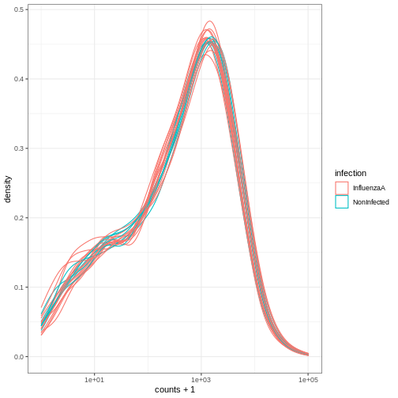
tidySummarizedExperimentの詳細については、パッケージ ウェブサイト こちらを参照してください。
**テイクホーム・メッセージ
SummarizedExperiment`は、オミックスデータを効率的に保存し、 。
これらは多くのBioconductorパッケージで使用されている。
RNAシーケンス解析に焦点を当てた次のトレーニング、 、Bioconductor
DESeq2パッケージを使って、 差分発現解析を行う方法を学ぶ。
DESeq2パッケージの全解析はSummarizedExperiment`
で処理される。
- Bioconductorは、ハイスループットな生物学データの理解（ ）のためのサポートとパッケージを提供するプロジェクトである。
- SummarizedExperiment`は、ハイスループットのオミックスデータを保存し、 管理するのに便利なオブジェクトの一種である。